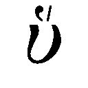

| アショーカ王碑文 (レグルス文庫) | |
| 塚本啓祥 | |
| (1976) | |
アショーカ王碑文
塚本啓祥
レグルス文庫54
＊この電子書籍は縦書きでレイアウトされています。
＊電子化にあたり、機能上の制約その他の理由により書籍版（冊子体）と異なる表記・表示をした箇所があります。
まえがき
アショーカ（阿育、無憂）王の名が日本人に知られたのはかなり早い時代であった。それは、仏教経典のなかに、『阿育王経』が編入され、法阿育として、仏陀の教法を流布せしめるのに偉大な貢献をなした、と伝えられているからである。
他方、古代インドにおいては、歴史的事件を客観的に記した「史書」が存在しないために、的確に歴史を把握することは極めて困難とされている。ところが、アショーカ王の時代には、王の信条や業蹟を銘刻した碑文（法勅）が現存しているので、古代インドにおける唯一ともいうべき重要な史料を提供する。碑文の和訳は、すでに宇井伯寿博士によって、「阿育王刻文」（『印度哲学研究』第四巻、『南伝大蔵経』第六五巻、一九二七年）として公刊されたが、文章が難解なことと、その後多くの新しい碑文が発見されたために、それらを網羅した新訳の出版が望まれていた。
また、私はさきに『アショーカ王』（サーラ叢書21・平楽寺書店刊、一九七三年）を公刊したが、やや文献考証に重点をおいたので、一般の読者を対象とした書物の執筆が必要とされていた。たまたま第三文明社から「レグルス文庫」の一冊として『アショーカ王碑文』を執筆することの依頼をうけた。そこで、右の二つの目的を本書において果たすことにした。
〈序説〉には碑文の背景となる歴史的事情を概説し、〈碑文〉においては、原文に忠実で、しかも平易な文章による和訳を目的とした。従って、理解しがたい文章については、簡単な補説または説明の語句を付加し、〈訳注〉において詳細な説明を加えた。訳文中には、宇井博士の訳文を改めた箇所もいくつかあるが、それは碑文研究の進歩に基づくものであって、私の独創ではない。また、訳語を決定できないいくつかの問題も残されている。これらについては、訳注にその理由を論述している。識者の教正をうれば幸いである。
本書の作成に当って、第三文明社の安田理夫氏には、巻末の索引作成をはじめ、校正その他種々の面でご助力をえた。甚深なる謝意を表するものである。
一九七五年十二月八日 釈尊成道の日に鎌倉の寓居にて
塚本 啓祥
凡 例
一、碑文の和訳は、J. Bloch:Les inscriptions d'Asoka, Paris 1950を底本としたが、その後発見された碑文については、〈解説〉に紹介した研究論文に基づいた。
二、訳文中の〔 〕は簡潔な原文に対する補説を、（ ）は説明を、......は原文の欠落を、［ ］は欠落せる原文に対する補説を表わす。
三、碑文の異本相互に認められる語句の相違は、それぞれの碑文の末尾に注記した。
四、訳文中の語句に対する注（原語、文法上の説明、歴史的背景）は、本文に＊印を付して、〈訳注〉に一括して列挙した。また、√は動詞語根を、＜はその語彙が次の語に由来することを示す。
五、訳文および注記において用いた略記号は、次の通りである。
 十四章摩崖法勅
十四章摩崖法勅
Sh. シャーフバーズガリー
M. マーンセーフラー
K. カールシー
G. ギルナール
Sop. ソーパーラー
Dh. ダウリ
J. ジャウガダ
E. エーラグディ
Kan. カンダハール
小摩崖法勅
Rūp. ループナート
Guj. グジャッラー
Sah. サハスラーム
Bai. バイラート
Del. デリー
Ahr. アフラウラー
Mas. マスキ
Gav. ガヴィーマト
Pāl. パールキーグンドゥ
Br. ブラフマギリ
Sid. シッダープラ
Jat. ジャティンガ・ラーメーシヴァラ
Erra.エーラグディ
Rāj. ラージュラ・マンダギリ
 七章石柱法勅
七章石柱法勅
Top. デリー・トープラー
Mīr. デリー・ミーラト
Ara. ラウリヤー・アララージ
Nan. ラウリヤー・ナンダンガリ
Rām. ラーンプルヴァー
Kos. アッラーハーバード・コーサム
 小石柱法勅
小石柱法勅
Kos. コーサンビー
Sāñ. サーンチー
Sār. サールナート
Rum. ルンミンデーイー
Nig. ニガーリー・サーガル
Tax. タクシラ
Lam. ランパーカ
Am. アマラーヴァティー
洞院刻文
Bar. バラーバル
序 説
一 碑文の所在地
アショーカ王の法勅（dhama-lipi）を銘刻したカローシュティー（Kharo
 hī）文字とブラーフミー（Brāhmī）文字は、久しく忘却のかなたにあったが、Ｊ・プリンセプが、ギリシア文字とインド文字を使用した二語併用の貨幣を手掛りとして、解読に成功したのは一八三七年のことであった。それ以来、アショーカ碑文の研究は、歴史解明の第一資料として、学者の注目するところとなった。爾来一世紀半、発見された碑文も四十数個に及んでいる。
hī）文字とブラーフミー（Brāhmī）文字は、久しく忘却のかなたにあったが、Ｊ・プリンセプが、ギリシア文字とインド文字を使用した二語併用の貨幣を手掛りとして、解読に成功したのは一八三七年のことであった。それ以来、アショーカ碑文の研究は、歴史解明の第一資料として、学者の注目するところとなった。爾来一世紀半、発見された碑文も四十数個に及んでいる。
碑文は、その内容および銘刻された碑石によって、次の七種に分類される。すなわち、
Ⅰ 十四章摩崖法勅
Ⅱ 別刻摩崖法勅（二章）
Ⅲ 小摩崖法勅（四章）
Ⅳ 七章石柱法勅（または六章石柱法勅）
Ⅴ 小石柱法勅（六種）
Ⅵ 洞院刻文
Ⅶ 皇后法勅
である。
さて、ここで右の碑文の所在地および特色について概説しよう。
Ⅰ 十四章摩崖法勅
シャーフバーズガリー（Shāhbāzgahī;Sh.と略す）
西北辺境州ペシャーワール地方、カプルダガリーから三キロメートル。火成岩の大きな岩塊と他の漂石の二箇に銘刻されている。
マーンセーフラー（Mānsehrā;M.と略す）
西北辺境州ハザーラー地方。三箇の漂石に銘刻されている。右の二箇の碑文は、古代ペルシアのアラム文字に由来するところのカローシュティー文字を使用している。
カールシー（Kālsī;K.と略す）
ウッタル・プラデーシュ州デーフラ・ドゥーン地方、デーフラから二・五キロメートル、ヤムナー川とトーンス川の合流点。石英の大きな漂石に銘刻され、北西に象の輪廓が彫られている。今日、インドで使用されているデーヴァナーガリー文字の最古形であるブラーフミー文字を用いている（以下、特に指示しない限り、他の碑文も同文字を用う）。
ギルナール（Girnār;G.と略す）
グジャラート州のジュナーガドの東一・五キロメートル。円錐状の巨大な花崗岩の漂石の東北面に銘刻されている。他の面には、マハークシャトラパ・ルドラダーマン（一五二頃）と、グプタ王スカンダグプタ（四五六─七）の刻文がある。
ソーパーラー（Sopārā;Sop.と略す）
マハーラーシュトラ州ターナ地方のバッセイン・タールカにある古代の町。一八八二年に、法勅の第八章を銘刻した玄武岩の壊れた岩塊が発見された。これをボンベイ・ソーパーラー断片という。また、一九五六年にソーパーラーの近くのブイガオーンで、法勅の第九章を銘刻した玄武岩の壊れた石板が発見されている。
ダウリ（Dhauli;Dh.と略す）
オリッサ州プリー地方のブヴァネーシワルの南一一キロメートル。アスワスタマと通称される岩石に銘刻されている。岩石は、石英を混合した角蛮岩で、刻文の上の部分には象の前半身が彫られている。碑文は第十一─三章を欠いている。
ジャウガダ（Jauga a;J.と略す）
a;J.と略す）
オリッサ州ガンジャーム地方のガンジャームの西北三〇キロメートル。廃墟の中の巨大な岩塊に銘刻されているが、第十一─三章を欠いている。碑文の三分の一は岩皮の脱落で失われているが、碑文の上部に卍とＭの文字が彫られている。
エーラグディ（Erragui;E.と略す）
アンドラ・プラデーシュ州カーヌール地方のグッティから一五キロメートル。黒象の塚と呼ばれる丘陵の六箇の漂石に銘刻されている。
カンダハール（Kandahār;Kan.と略す）
アフガーニスターンのカンダハールの廃墟で発見され、直角の形をした化粧石材に銘刻されている。第十二章から第十三章前半に当り、ギリシア語で記されている。これは、カンダハール第二法勅、またはギリシア語の第二カンダハール法勅とも呼ばれる。
右の他に、タクシラおよびランパーカ出土の小石柱法勅には、第四章の一部に比定される内容が含まれている（Ⅴ 小石柱法勅の項を見よ）。
Ⅱ 別刻摩崖法勅
ダウリ
ジャウガダ
右の二か所には、十四章法勅（第十一─三章を欠く）とともに、別刻法勅二章が銘刻されている。
Ⅲ 小摩崖法勅
第一章
ループナート（Rūpnāth;Rūp.と略す）
マドヤ・プラデーシュ州ジャバルプル地方。カイムル山脈に源泉をもつ川が滝をなして三つの池をつくっているが、それらは聖なる池とみなされ、岩の狭い裂け目におかれたシヴァ神のリンガによって巡礼地として知られている。法勅は砂岩の漂石に銘刻されている。
グジャッラー（Gujarrā;Guj.と略す）
マドヤ・プラデーシュ州ダティア地方。丘陵の漂石に銘刻されている。
サハスラーム（Sahasrām;Sah.と略す）
ビハール州シャーハーバード地方のサハスラーム（またはササラーム）から三キロメートルの岩石に銘刻されている。
バイラート（Bairā;Bai.と略す）
ラージャスターン州ジャイプル地方のジャイプルから七〇キロメートル、バイラートの東北一・六キロメートルの岩石に銘刻されている。
デリー（Delhi;Del.と略す）
デリーの東南部、カルカジー寺院の西バハプルの岩石に銘刻されている。
アフラウラー（Ahraurā;Ahr.と略す）
ウッタル・プラデーシュ州ミルザプル地方のチュナールの近くのアフラウラーの丘に銘刻されている。
マスキ（Maski;Mas.と略す）
マイソール州ライチュル地方のライチュルから七五キロメートル。不規則な形をした灰色の結晶質花崗岩の漂石に銘刻されている。
ガヴィーマト（Gavīmah;Gav.と略す）
マスキの西南八五キロメートル、コプバール村の岩だらけの丘の二岩石に、同文と考えられる二つの法勅が銘刻されているが、その一は磨滅して判読できない。
パールキーグンドゥ（Pālkīgu u;Pāl.と略す）
u;Pāl.と略す）
コプバールの近くの丘陵上の岩石に銘刻されている。
ブラフマギリ（Brahmagiri;Br.と略す）
マイソール州チタルドゥルグ地方。マスキから一二五キロメートル、コプバールから一九五キロメートル。片麻岩の漂石に銘刻されている。
シッダープラ（Siddāpura;Sid.と略す）
ブラフマギリの西方一・八キロメートル。丘陵の南面の岩棚に銘刻されている。
ジャティンガ・ラーメーシヴァラ（Jatiga-Rāmeśvara;Jat.と略す）
ブラフマギリの西北五キロメートル。丘陵上の岩石に銘刻されている。
エーラグディ
十四章法勅と同地点。一箇の漂石に銘刻されている。
ラージュラ・マンダギリ（Rājula-Maagiri;Rāj.と略す）
アンドラ・プラデーシュ州カーヌール地方、エーラグディから三二キロメートル。ラーマリンゲーシヴァラ寺院の入口にある岩石に銘刻されている。
第二章
小摩崖法勅第一章を含む碑文の中で、には、第二章が銘刻されており、─はその要約された内容の碑文を含んでいる。
第三章
小摩崖法勅第一章を銘刻した碑石の近く、バイラートの南西一・五キロメートルの丘陵上の灰色の花崗岩塊に銘刻され、現在はカルカッタの Asiatic Society of Bengal によって保存されている。これは、カルカッタ・バイラート法勅、バーブラー法勅、バイラート第二法勅などと呼ばれる。その丘の上には仏教僧院の遺跡がある。
第四章
アフガーニスターンのカンダハールの古址シャル・イ・クナへの入口にある丘陵の岩壁に銘刻されており、上段にギリシア語の碑文、下段にアラム語の碑文が記されている。カンダハール第一法勅ともいう。
Ⅳ 石柱法勅
六章法勅
デリー・トープラー（Delhi-Toprā;Top.と略す）
この石柱は砂岩の一本石で、現在はデリーのフィーローザーバードの遺跡にある宮殿の頂に建てられている。もとはデリーの北方一六〇キロメートル、アンバーラー地方のトープラーにあったが、フィーローズ・シャー王によって一三五六年に、現地点に移された。この石柱だけは、六章法勅に更に一章を加えた内容を含んでいる。
デリー・ミーラト（Delhi-Mīrah;Mīr.と略す）
現在デリーの丘陵に立っているが、トープラー石柱と同じく、もとはミーラトにあったものを、フィーローズ・シャー王が一三五六年に、現地点に移した。
ラウリヤー・アララージ（Lauiyā-Ararāj;Ara.と略す）
ラウリヤー・ナンダンガリ（Lauiyā-Nandangah;Nan.と略す）
右の二石柱はビハール州チャンパーラン地方のラウリヤー村の近くに位置する。一は同地方のケーサリヤーの北西三二キロメートル、他は同地方のべーティヤーの北北西二四キロメートルにあるが、両者を区別するために、前者には隣のシヴァの寺院名アララージを結びつけ、後者には近くの廃墟となった砦の名ナンダンガリを結びつけて呼ばれる。共に砂岩の一本石で、前者にはかつて金翅鳥の像があったと伝えられる。後者には柱頭に獅子の像がおかれている。
ラーンプルヴァー（Rāmpurvā;Rām.と略す）
ビハール州チャンパーラン地方のべーティヤーの北北西五二キロメートル。柱頭の獅子像は失われていたが、のちに発見された。
アッラーハーバード・コーサム（Allāhābād-Kosam;Kos.と略す）
この石柱は、現在はガンガーとヤムナー両河の合流点アッラーハーバードに立っているが、かつてはコーサム（古代のコーサンビー）にあったと考えられる。つぎの六種の碑文が銘刻されている。すなわち、
① アショーカの碑文
六章法勅
皇后法勅（②の右側）
コーサンビー法勅（皇后法勅の上部）
② マハーラージャーディラージャ・サムドラグプタの碑文（①の下部）
③ ナーガリー文字の行間書込み
④ ジャハーンギールの碑文
となっている。
七章法勅
デリー・トープラー
前記六章法勅に第七章を付している。
カンダハール
石灰石のブロックに、インド語とアラム語訳を逐語的に混成銘記したもの。第七章の一部に当る。これは、カンダハール第三法勅、またはアラム語の第二カンダハール法勅とも呼ばれる。
Ⅴ 小石柱法勅
破僧伽に関する法勅
アッラーハーバード・コーサム
前記の六章法勅を銘刻した石柱に書き込まれている。これを特にコーサンビー法勅ともいう。
サーンチー（Sāñci;Sāñ.と略す）
サーンチー大塔の南門に立っている石柱で、柱頭にはかつて四頭獅子の像があった。
サールナート（Sārnāth;Sār.と略す）
ヴァーラーナシー郊外のサールナート（仏陀の初転法輪の地、鹿野苑）に立てられた石柱。柱頭にはかつて四頭獅子の像を冠し、四つの法輪と獅子・象・牡牛・馬の彫像が彫られていた。この柱頭の部分は、現在完全な形でサールナート博物館に保存されている。
ルンミンデーイー法勅
ウッタル・プラデーシュ州バスティー地方のドゥルハーの東北八キロメートル、ネパール国境内四キロメートルにあるルンミンデーイー（Rummindeī;Rum.と略す）寺院の近くに立っている。仏陀の誕生地。かつて柱頭に馬の像がおかれていた。
ニガーリー・サーガル法勅
ルンミンデーイーの西北二〇キロメートル、ニグリーヴァーの南一・六キロメートル、ニガーリー・サーガル（Nigālī Sāgar;Nig.と略す）と名づくる池の西側に立っている。他の地点から移されたと考えられている。
タクシラ法勅
タクシラ（Taxila;Tax.と略す）のシルカップの双頭鷲の廟で発見され、八角形の白大理石の柱に、アラム語で銘刻されていた。摩崖法勅第四章の一部に当る。
ランパーカ法勅
アフガーニスターンのプル・イ・ダルンタの近く、ラグマーン（Laghmān,Skt. Lampāka; Lam.と略す）で発見された。摩崖法勅第四章の一部に近似し、インド語とアラム語訳を逐語的に混成配列している。
アマラーヴァティー法勅
アンドラ・プラデーシュ州グントゥル地方のアマラーヴァティー（Amarāvatī;Am.と略す）で発見され、アショーカによるアマラーヴァティーの仏塔建立を記した石柱の一部であろうとみられる。
Ⅵ 洞院刻文
ビハール州ガヤーの北方二五キロメートルの丘陵に七つの洞院がある。その中の四つはバラーバル（Barābar）洞院で、第一─三洞院に刻文が銘刻されている。また、他の三つはナーガールジュニー洞院で、その第一─三洞院には、アショーカの孫ダシャラタの刻文がある。
Ⅶ 皇后法勅
アッラーハーバード・コーサム石柱には、アショーカの第二王妃カールヴァーキーの寄進に関する碑文が銘刻されている。
二 政治と社会・経済
① マウルヤ王朝
マケドニアに兵を挙げて全ギリシアを統一したアレクサンドロスは、中近東から小アジアに及ぶ広大なペルシア帝国の領土を征服したのちに、西北インドに侵入した。それは前三二六年の春のことであった。しかし、かれの将兵たちが、長期にわたる戦闘の疲労と、未知の世界へ進軍することの不安から、かれの意思に従わなかったため、かれはやむなく、インダス流域に支配権を確立したのちに、西方へ軍を撤収した。しかし、かれは前三二三年七月にバビロンで病死した。
かれの没後、その領土は麾下の将軍等の二回にわたる会議によって分割されたが、インド近隣の諸州は、大部分がアレクサンドロスによって任ぜられた支配者の下におかれた。
さて、これよりさきにアレクサンドロスが西北インドのパンジャーブに達した時、中インドはナンダ王朝の統治下にあった。その支配者ダナ・ナンダ王は、ギリシア・ラテンの文献には、アグラメスまたはクサンドラメスと伝えられている。この王朝を滅ぼして、全インドの統一をはかったのはチャンドラグプタ（ギリシア文献ではサンドロコットスという）であるが、かれはナンダ王統に関係のある卑賤な階級の出身で、ナンダ王の怒りにふれて、西北インドに亡命していたが、アレクサンドロスに会見した時は、まだ若い青年であったという。
アレクサンドロスがインダス川の東部地方を支配下においた時、フィリッポスをその太守に任命したが、前三二四年にかれは傭兵に殺害された。その後継者に任命されたエウデモスは、しばらくはその地位を保持したが、前三一七年に、アンティパトロスと交戦状態にあったエウメネスを援助するために西方へ去った。これはインドにおけるギリシア人の支配権の消失を意味する。その頃、チャンドラグプタはパンジャーブで挙兵（マウルヤ王朝の創設）したのちに、マガダへ進軍したものと考えられる。
アレクサンドロスの没後、将軍セレウコス（一世ニカトル）はバビロニアの太守に任命された。かれは三年間のエジプト亡命ののち、前三一二年にバビロニアを回復してセレウコス王朝を創設し、支配権の拡大に努めた。かれは、バクトリアを征服したのち、前三〇五年にインダス川を渡って、アレクサンドロスによって征服された領土を回復しようとしたが、そこで遭遇したのは強大なチャンドラグプタの軍勢であった。そこで、セレウコスはやむなくチャンドラグプタと講和条約を結んだ。セレウコスはアリア、アラコシア、ゲドロシア、パロパニサダイの領土を割譲し、その代りに五百頭の象をえた。講和後は、両王朝のあいだに友好関係が保たれ、セレウコスはメガステネスを使臣として、マウルヤ王朝の首都パータリプトラに駐留せしめた。かれがインド滞在中に見聞したことを記した『インド誌』は、当時のインド事情を知る貴重な資料である。
チャンドラグプタは、婆羅門のヴィシュヌグプタ（チャーナクヤまたはカウティルヤともいう）の助言によって、インド統一の事業を遂行したが、その版図は、アラビア海からベンガル湾におよび、北はヒマーラヤ山脈、南はデッカン高原のかなりの部分、西はスラーシュトラ半島からヒンドゥー・クシュ山脈に達した。
チャンドラグプタによる二十四年の統治ののちに、かれの子ビンドゥサーラが王位を継承した。かれの治世に、セレウコス王朝からデイマコスが使臣として派遣されている。セレウコスは前二八〇年に暗殺され、かれの子アンティオコス一世が王位についたが、かれのもとヘビンドゥサーラは手紙を送って、いちじくと、干ぶどうで造った酒と、ソフィスト（詭弁論者）の購入を求めたが、アンティオコスは、いちじくとぶどう酒は送るが、ソフィストを送ることはギリシアの法にない、と答えている。また、エジプトのプトレマイオス二世は、使臣ディオニュシオスを、ビンドゥサーラまたはアショーカのところへ派遣している。
ビンドゥサーラの二十五年の統治ののち、かれの子アショーカ（Aśoka 阿育または無憂という）がその王統を継承した（前二六八）。かれはチャンドラグプタ以来の国家統一の偉業をうけつぎ、インド史上最大の帝国を建設した。カリンガ戦争を最後に武力による征服をやめ、法による統治を行なった。三十六年の統治ののち、王統は後期マウルヤ王に継承されたが、王朝は次第に衰退し、前一八四年頃プシュヤミトラによって滅ぼされるに至る。
② 王朝の版図
摩崖法勅第十三章によれば、アショーカ王は灌頂（即位）八年に東インドのカリンガを征服した。その結果、十五万人が捕虜として他の地方へ移送せられ、十万人がそこで殺害され、その幾倍かの兵士および人民が死亡した。更に、災害・殺戮・愛者との別離は、婆羅門・沙門・他の宗派のもの、ならびに在家にもおよんだという。アショーカはこの悲惨な事実を痛恨し、武力による征服から法による征服へ、政策を転換した。これは仏陀時代のマガダ王ビンビサーラによるアンガの併合以来、凡そ二百年にわたるマガダの主権拡張の終結を意味した。アショーカはカリンガを、トーサリーとサマーパーの太守王子、および都市執義官である大官によって統治せしめたが、その施政方針は、ダウリとジャウガダの別刻摩崖法勅に記されている。
南インドのマイソール地方には、マスキ、ガヴィーマト、パールキーグンドゥ、ブラフマギリ、シッダープラ、ジャティンガ・ラーメーシヴァラの六か所に小摩崖法勅が銘刻されていることから、王朝の行政的支配がかなり行届いていたことを推測せしめる。この地方はスヴァルナギリの太守王子によって統治された。
摩崖法勅第二・五・十三章は、王の領土と隣邦人（または辺境人）を対比して述べているが、それぞれの範疇に含まれる国（または地方）名は、次の如くである。
王の領土
１ ヨーナ、カンボージャ、ガンダーラ（西北インド）
２ ナーバカ、ナーバパンティ（北インド）
３ ボージャ、パーリンダ、ピティニカ、ラッティカ、アンドラ（南インド）
隣邦人
１ アンティヨーカと四人のヨーナ王（西方）
２ チョーダ、パンディヤ、サティヤプッタ、ケーララプッタ、タンバパンニー（南方）
西方においては、マウルヤ帝国はアラビア海へ拡大され、スラーシュトラの隷属する国家または国家の連合を含む全アパラーンタを支配した。ギリシア人の王トゥシャースパによって、ギリナガラを首都として統治された。また、ウッジャイニーの太守王子は、マーラヴァ、グジャラート、カーティアワールを、タクシャシラーの太守王子は、ガンダーラ、カシミールを統轄した。
③ 外交政策
西北インドにおけるイラーン人（カンボージャ）とギリシア人（ヨーナ）の存在は、アショーカの辺境政策に重要な影響を与えた。
まず、ペルシアのアカイメネス王朝の創設者キュロス二世（前五五九─五二九）はゲドロシアを経てインドへ遠征したが敗北を喫した。しかし、カーブル地方では宗主権を獲得したようである。
ダレイオス一世（前五二一─四八六）のバヒスターンの碑文によれば、ガンダーラ人はペルシア帝国の隷属の人民として現われるが、インド人（インダス流域の人民）については述べていない。しかし、ペルセポリス宮殿の碑文と、ナクシュ・イ・ルストゥムにあるダレイオスの墓の碑文には、隷属民のリスト中に、ガンダーラ人とインド人が含まれている。
かようにして、インダス流域の人民は、アレクサンドロスの遠征以前、凡そ二世紀にわたってペルシアの支配下にあった。アショーカのシャーフバーズガリーとマーンセーフラーの碑文におけるカローシュティー文字の導入、タクシラ、ランパーカ、カンダハールにおけるアラム語の碑文は、この地方にイラーン人が定着していたことと、かれらに対するアショーカの政策の一斑を知ることができる。
次に、ギリシア人との関係をみるに、アレクサンドロスがインドに遠征した時、スワート溪谷のニュサには、ディオニュソスの後裔と称するギリシア人が定住していた。これはアレクサンドロス以前に、この地方にギリシア人の植民地が形成されていたことを示唆する。アレクサンドロスはインダス以西の土地を支配下においたが、その時にいくつかのギリシア人の都市（アレクサンドレイア）を建設している。例えば、
１ アラコシアのアレクサンドレイア（カンダハール）
２ カウカソスのアレクサンドレイア、またはパロパミサダイのアレクサンドレイア（ベーグラーム）
３ ブケファラ（ヒュダスペス川の西岸）
４ ニカイア（ヒュダスペス川の東岸）
５ シンドのアレクサンドレイア（インダス川とチェーナーブ川の合流点）
６ ソグディアのアレクサンドレイア（パンジャーブ諸川の合流点の下方）
がそれである。
アレクサンドロスは西方へ軍を撤収するに当って、これらの都市にギリシア人の統治者を残したが、セレウコスがチャンドラグプタにインド四州を割譲して、ギリシアの軍事的支配権が後退したのちも、ギリシア人はその地方に居住しつづけている。カンダハール出土の二種のギリシア語法勅は、西北インドにおけるギリシア人の定着を実証する。
摩崖法勅第十三章によれば、アショーカはカリンガの征服後、法による征服こそ最高の征服であると考え、王の領土および隣邦人のあいだに使臣を派遣しているが、碑文には特に五名のギリシア王名を列挙している。すなわち、
１ アンティオコス二世テオス（シリア王）
２ プトレマイオス二世フィラデルフォス（エジプト王）
３ アンティゴノス二世ゴナタス（マケドニア王）
４ マガス（キュレネ王）
５ アレクサンドロス二世（エペイロス王）またはアレクサンドロス（コリントス王）
がそれである。
南方の国境線は、アショーカ王の治世には、チャンドラグプタの治世よりも北方へ後退したとみられるが、これらの南方諸国に対しては、民生・交通に関して国内と同様の事業を行なっている。この事実より、王朝と南方諸国のあいだには、はやくから友好関係が樹立されていたことを推定しうる。
④ 行政組織
メガステネスの伝えるところによれば、マウルヤ王朝の行政官として、市場監督官、都市監督官、軍監督官の三種が挙げられている。
市場監督官の職務は、河川の管理、土地の測量、閘門を設置した運河の監察であった。また、猟師、税金の徴収、土地に関する技術、樵夫・職人・真鍮工・坑夫の技術を監督し、更に、道路の建設、道標の設置を任務としている。この管掌事項が市場監督官（γορανμοι）の名称と必ずしも一致しないところから、地方官（γρονμοι）の誤伝であろうと推定されている。
都市監督官は、六グループに区分され、それぞれは五人の成員で構成された。すなわち、
１ 職人の監督
２ 外国人の保護
３ 出生と死亡の調査
４ 通商と交易の監督
５ 製作品の監督
６ 物品税の徴収
が管掌事項となっている。また、右の特殊な義務の他に、共通の任務として、個人や市民に関すること、公共施設の修理、商品価格・市場・港湾・僧団を管理することになっている。
軍監督官については、軍事を監督する統合本部があり、六グループに区分され、それぞれは五人の成員で構成された。すなわち、
１ 提督と共同の軍事行動
２ 武器・糧食・軍需品運搬の監督
３ 歩兵の管轄
４ 馬の管理
５ 戦車の管理
６ 象の管理
が管掌事項となっている。
次に、アショーカ王碑文によれば、王や太守王子は、次のような行政官の団体によって補佐されたことが知られる。すなわち、
１ 大官（法大官・監婦大官・辺境人に関する大官）と長官
２ 司直官
３ 地方長官
４ 収税官
５ 有司
６ 上奏官
７ 飼畜苑官
８ 書記官
９ 使臣
がそれである。
マウルヤ帝国の中央政府における最高の意思決定は、王の下に組織された大官会議によって行なわれた。しかし、大官会議を官僚機構中に繰り込んだのは、カウティルヤの独創によるのではなく、マウルヤ以前の政治理論家の見解に基づいている。会議による国家の意思決定は、すでに古代部族の共和制国家（サンガまたはガナ）の集会に導入されていたが、前六─五世紀にマガダまたはコーサラのような王国が抬頭した時、君主による専制的な行政形態が現われた。しかし、マウルヤ王朝という統一国家の出現によって、統治形態の変革と行政組織の整備が促進された。
摩崖法勅第六章は、王権と会議の議事決定とのあいだの関係を明らかにする。すなわち、会議は、何らかの賜与または布告に関して、王が口頭で命じ、または大官に緊急事件が委任せられたそのことについて審議したが、時には会議に諍論または再審の必要が生じることがあった。その時、上奏官は何処でも、何時でも王に奏聞すべきことを義務づけられている。
別刻摩崖法勅第一章によれば、大官には任期があって、その期間を過ぎると、転任を命じられた。法勅では、このことを「巡察に出発せしむ」と表現している。トーサリーとサマーパーの大官は五年毎に転任せしめられたが、ウッジャイニーとタクシャシラーの大官は三年を任期とした。これは、官吏が特定地域に長期間留まることによって生じがちである弊害を防止することを意図したものである。
メガステネスによって、パータリプトラで注目された都市監督官はパウラ（市民）の組織であったとみることもできる。すなわち、かれらは王によって任命された官吏ではなく、民衆によって選任された官吏であった。また、帝国の州都にも、独立のパウラの団体が存在したようである。北部州の州都タクシャシラーで反乱が起った時、アショーカは太守王子のクナーラを派遣して平定したが、タクシャシラーのパウラが、
われわれは太守王子に対して叛逆いたしません。アショーカ王に対しても叛逆いたしません。しかし、悪心ある大官が到着して、われわれを軽蔑します。
とクナーラに答えている。従って、前述の如く、別刻法勅第一章で、州都の都市執義官を五年または三年毎に巡察に出発せしめることを規定しているのは、パウラの団体に対する監督を目的とするものであった。
また、摩崖法勅第八章によれば、アショーカは法の巡礼をなし、地方の人民を引見して法の教誡をなし、それに適した法の試問をなしたことを記しているが、これは、アショーカが正統派の伝統的慣習を廃して新しい法による統治を実施するに当って、パウラ・ジャーナパダ（地方民）の支持を求めたとの解釈もなされている。
マウルヤ王朝の一次的財源は、王室御料地の生産と私有地からの収益の分受物のような種々の土地税を構成したが、それは伝統的には六分税であった。また、租税は初期のヴェーダ時代から慣習化された土地に対する賦課金であって、年に一回、中央の国庫に対して献納するもので、六分税とは異なっていた。
司法行政に関して、別刻法勅第一章は種々の規定を与えている。すなわち、都市執義官は司法において監督し、司法執行の過程で、不法な監禁または拷問をなからしめ、裁判における中正を要望している。
⑤ 社会構成
前六世紀のガンガー平原に、商工業が発達して都市を形成させたことは、商人や資産者などの新しい階層の発生を促したが、これを基盤として、専制君主の国家が形成され、沙門（反婆羅門の革新的思想家）の教団が形成されたことは、古代インドの部族社会を階級社会へ変質させる重要な要因を与えることになった。しかし、前四世紀末に、ナンダ王朝に対する婆羅門および人民の反動によって、マウルヤ王朝が樹立され、カウティルヤの指導の下に各階級の生活階梯の法を規定することによって、社会の統制を進めた。
古代インドの階級社会の構成は、四姓を中心として、多くの下位の階級が従属したが、それらは異なった階級相互の結婚によって生じた混合階級であった。
この社会組織では、その頂点に婆羅門が位置したが、かれらは王師として政治・行政の広範囲にわたって、または会議の成員として法律制定に、多大の影響を与えた。しかし、かような社会組織も、ガンガー平原の少なくとも都市を中心とした地域においては、仏教のような反婆羅門的宗教の教団形成によって、かなりの脅威を受けたようである。そのために、『実利論』には、婆羅門社会の崩壊を防止するために規定した社会統制の例をみることができる。
メガステネスは、インド社会について七種の階層を区分する。すなわち、
１ 哲人
２ 農夫
３ 牧人
４ 職人・小売商
５ 戦士
６ 監察官
７ 顧問官
がそれである。この七階層は、社会的区分というよりはむしろ経済的（職業）区分というべきであるが、マウルヤ王朝期の社会形態を、割合に偏見なく観察している。これに対して、インド文献、殊に婆羅門のそれには、古層の伝承と後期の伝承が混淆し、婆羅門の立場での社会統制が意図されている。
さて、メガステネスはインドの哲人の階層を、婆羅門（Βραχμναι＝Brāhmaā）と沙門（Σαρμναι＝Śramaā）の二種に区分する。また、アショーカ碑文には、Bramaa-Śramaa（Sh.）〈婆羅門・沙門〉の複合詞を、ニカーヤには Samaa-Brāhmaa〈沙門・婆羅門〉の複合詞を見出しうるが、それぞれの用語の意味する実体には、多少の相違がある。メガステネスのいわゆる沙門に仏教徒が含まれたかどうかは明らかでないが、アレクサンドレイアのクレメンス（二一五死）は、『ストロマテイス』の中で、インド人には裸の哲学者の他に異邦的哲学者がいると言ったのちに、沙門と婆羅門の二種を説明し、前者に関係のあるものとしてヒュロビオイ（λβιοι）にふれ、インド人の中に仏陀（Βοττα）の教えを遵奉する人びとがあり、かれらは仏陀の神聖の故に、かれを神として崇拝していた、と述べている。
石柱法勅第七章では、種々の宗派の中に仏教僧伽（sagha）、婆羅門（bābhana）、アージーヴィカ（ājīvika邪命外道）、ニガンタ（nigaha 尼犍陀、ジャイナ）を挙げ、それぞれの教団を管掌する法大官を任命している。
⑥ 交通と貿易
マウルヤ王朝以前（前五─四世紀）のインドにおける交通路線は、仏教文献から知ることができる。その主なものとして、
① 北から南西への路線（シラーヴァスティー→プラティシュターナ）
② 北から南東への路線（シラーヴァスティー→ラージャグリハ）
③ 東西の路線（ガンガーとヤムナーの河川交通）
が挙げられ、西海岸の貿易港バルカッチャ、西方の商業の中心地バヴェール（バビロン）が知られていた。
マウルヤ王朝の拡大と官僚機構の整備は、首都パータリプトラと帝国の諸州および辺境地との交通路線を発達せしめた。そして、これらの路線の建設と維持は、中央政府によってなされたようである。
西北のタクシャシラーからパータリプトラへの王の公道はもっとも重要であって、数世紀のあいだ幹線として用いられた。その路線は更に東へ延長されて、ガンガー河口のタームルクに達した。この路線は、通商と戦略の二点で重要であった。
南インドでは、バルカッチャやカーティアワールから南西海岸の港やスリランカーへ至る、西海岸に沿った海上交通路が知られていた。
他方、マハーナディーとゴーダーヴァリー両河のあいだにカリンガが位置して、マウルヤ王朝に敵対したことは、東方の路線確保の障礙となった。
南インドへの路線は、サハスラームまでソーン川に沿って上り、それから高原を越えてカリンガのトーサリーへ下り、海岸に沿ってクリシュナー川のデルタ地帯へ至る。それから更にクリシュナー川に沿ってライチュル地方へ、他の支線は、クリシュナー川からトゥンガバドラの溪谷を経て北マイソールへ至っている。パータリプトラからの他の路線は、ループナートで分かれて、ワインガンガ溪谷を経てゴーダーヴァリー下流へ、他の路線はアヴァンティ地方から高原を越えてプラティシュターナへ、それからゴーダーヴァリーを下る路線と、ソーパーラーへ出て西海岸を南下する路線があった。
帝国から西方諸国へ通じる三つの路線があった。すなわち、
１ タクシャシラーからカーブルへ、それからバクトリア、オクソス流域、カスピ海の南、カウカソスのファシスを経て黒海で終る路線。
２ 三路線がある。
インドからカンダハールとヘラートを経てエクバタナへ至る。
カンダハールからペルセポリスとスサへ至る。
ペルシア湾からティグリス川を経てセレウキアへ至る。この路線は更に分支し、エフェソス、アンティオク、フリュギアへ、エデッサ、ダマスコス、テュレへ至る。
３ インドの西海岸からアラビア東南の海岸に沿った海上交通路。
が知られている。
三 法による統治
① 法の概念
チャンドラグプタはカウティルヤの助言によって、マウルヤ帝国の行政組織を整備したが、その政策の一斑は、前述の如く、カウティルヤの『実利論』によって知ることができる。因みに、その成立年代については、学者のあいだに異説があり、後世の挿入を含むことも指摘されている。しかし、その基本となる部分は、カウティルヤ以前の古い資料に基づいて編纂されているのであるから、マウルヤ王朝、特にチャンドラグプタの政策を解明する一視点は与えられるであろう。
さて、アショーカはチャンドラグプタの政策を受けついだと考えられる。それは、法勅に現われる所の、
収税官、地方長官、大官会議、有司、監察、現世と来世において、飼畜寮、都市執義官、拷問、法による征服、八分税、旅行に費す日、飼畜苑官
のような用語を『実利論』にも見出しうることによって推定しうる。
しかし、アショーカの政策の中心が、法（dhama,Skt. dharma）による統治にあったことは、碑文において、法が種々の語と複合詞で現われることによっても明らかである。例えば、
法の愛慕、法による功徳、法の響、法の実行、法柱、法施、法勅、法の規制、法に依止する、法の試問、法に対する欲求、法の儀式、法大官、法の巡礼、法に専心するもの、法の増進、法の実修、法による征服、法の遵守、法による結縁、法の分配、法による親交、法の聴聞、法に対する従順、法の樹立、法恩、法の教誡、法の偉業
がそれである。
さて、アショーカの法の内容は、大別して、
基本的な法、すなわちアショーカの政策の原理となる公的宣言
特殊な宗団に対する私的書簡
の二種に分類できる。
＊ ＊
ブラフマギリの小摩崖法勅第二章は、アショーカの法を次のように規定している。すなわち、
更に、天愛はかように告げる。
父母に対しては従順でなければならない。教師に対しても同様でなければならない。動物に対しては〔憐れみの〕堅固〔な意思〕がなければならない。真諦を語らなければならない。この法の功徳は実践されなければならない。軌範師は弟子によってかように尊敬されなければならない。また、親族に対してこれを適当に普及させなければならない。これは古えよりの法則であって、これはまた、長寿に導くものである。
とあって、かれが提示した法とは「古えよりの法則」、すなわち、古来からインド社会において人びとが履行すべきものとして規定された生活の「軌範・原理」を意味する。またそれは、仏教・婆羅門・アージーヴィカ・ニガンタで取扱う法（生活規定）の根底となる、インド社会共通の法の概念に基づいている。
② 実践的な法
アショーカ法勅における基本的な法は、更に、（１）実践的な法、（２）教義的な法、の二種に分類できる。まず、実践的な法の主なものを列挙しよう。
父母に対する従順、長老に対する従順、教師に対する従順、尊者に対する従順。
教師に対する弟子の尊敬。
婆羅門・沙門に対する礼儀、親族に対する礼儀、奴隷・従僕に対する正しい扱い、貧者・卑人に対する正しい扱い、朋友・知人・同僚に対する正しい扱い。
婆羅門・沙門に対する布施、朋友・知人・親族に対する布施、長老に対する布施。
動物の不屠殺、動物に対する禁戒、動物に対する〔憐れみの〕堅固〔な意思〕。
慈愍、真諦、清浄、柔和、善良、少ない支出・少ない蓄積、自制、報恩、堅固な信仰、法に対する愛楽。
さて、摩崖法勅第四章において、アショーカは動物の殺害と沙門・婆羅門に対する非礼を避けるべきことを述べている。すなわち、
過去長期幾百年のあいだに、動物の屠殺と有情の殺害、親族に対する非礼〔と〕沙門・婆羅門に対する非礼のみが増大した。しかるに今や、天愛喜見王の法の実行によって、人民に、天宮の示現、象（の示現）、火蘊、他の超自然の諸相を示したので、鼓の響は法の響となった。
同様にして、幾百年のあいだに未だかつてなかった如く、今や天愛喜見王の法の教誡によって、動物の不屠殺、有情の不殺害、親族に対する礼儀、婆羅門・沙門に対する礼儀、父母に対する従順、長老に対する従順が増進した。
とあって、動物の殺害が過去長期にわたって増大されたが、かれに至って不殺生を特に強調したことを指摘する。不殺生は、インド社会においては、特に革新的教団の説くところであったが、にもかかわらずアショーカが殺生を禁止したのは、婆羅門の供犠の禁止を示唆するものとみなされる。
アショーカは石柱法勅第五章において、不殺生に関する具体的な例を挙げている。そして、殺害・虐待を禁ずる生物の名称は、陸棲・水棲の獣・鳥・魚の広範囲に及んでいる。
③ 王の義務
カウティルヤは国家の緊急事件に関して、
緊急な事件においては、顧問官および顧問官会議を召集して、かれらに告ぐべきである。
と規定し、王の義務についても、
すべての緊急な事件を聞くべきである。延滞してはならない。
と記している。これに対して、アショーカは摩崖法勅第六章において、大官の会議と国家事業の迅速な処理を命じている。すなわち、
過去長期のあいだに、どのような時にも、未だかつて政務を裁可し、上奏を聴取することはなかった。故に、私によって次のような〔措置が〕なされた。〔すなわち〕私が食事をしている時でも、後宮においても、寝所においても、畜舎においても、乗物の中においても、御苑においても、どのような時にも、どこにおいても、上奏官は人民に関することを私に奏聞しなければならない。そうすれば私はどこにおいても、人民に関することを裁可するであろう。また、私が口頭で命じる何らかの賜与または布告に関して、もしくは大官のあいだに委任せられる緊急事件に関して、その事のために〔大官〕会議に諍論または再審〔の必要〕が生じた時には、どこにおいても、どのような時にも、ただちに私に〔この事を〕奏聞しなければならない。
とあって、両者のあいだに密接な関係を指摘しうる。しかし、アショーカが「なぜならば、努力と政務の裁断において、私に満足はないからである」と言っているのは、緊急事件上奏の必要をかれが重ねて強調した理由であろう。
摩崖法勅第八章には、
過去長期のあいだに、諸王はいわゆる娯楽の巡遊に出かけた。ここ（娯楽の巡遊）では狩猟や他の類似の楽しいことが行なわれた。
と述べている。『実利論』によれば、耕作しない土地には家畜のための牧場を設置し、また狩猟に用いられる雌雄の象および仔象のいる獣林を、王の娯楽のために整備することを規定している。しかし、アショーカはこれまで諸王のあいだで慣習化していた娯楽の巡遊を廃して、かれ独自の法の巡礼をはじめたのである。すなわち、同法勅に、
しかし、天愛喜見王は灌頂十年に三菩提を訪れた。これによって、法の巡礼が（始まった）。
と記しているが、小摩崖法勅第一章によれば、それに二五六日を費したという。ところで、法の巡礼とは、沙門・婆羅門に対する訪問と布施、長老に対する訪問と金銭の分与、地方の人民に対する接見と法の教誡と法の試問を行なうことであった。
④ 官吏の義務
アショーカ法勅においては、高級官吏は大官と呼ばれ、次のような職務を委嘱されている。
すなわち、
１ トーサリー、サマーパー、コーサンビーのような都市執義官の職務を委嘱される。
２ トーサリー、スヴァルナギリのように、太守王子と提携する。
３ 数千の人びとに対する司法と行政を委嘱される。
４ 司法と行政のために五年毎の巡察の義務を負う。
５ 法大官、監婦大官、辺境人に対する大官として、それぞれの部門の長の任務を委嘱される。
６ 種々の宗派（仏教僧伽、婆羅門、アージーヴィカ、ニガンタ）の管理者。
７ 緊急事件を討議する会議の成員。
となっている。
次に、それぞれの官吏についてみるに、法勅の都市執義官は『実利論』では都市の首長の意味に用いる。
法勅の収税官・有司は、『実利論』では、官吏・副吏・使丁を政府の官吏の意味に、代官を雇傭者の意味で用いる。
法勅の司直官は、『実利論』では検分実施からの収入と、盗人が追跡される領土に課する科料、または捕盗官の意味で用いられる。
法勅で、王に情報を与える上奏官を記すが、『実利論』では行政の諜報機関について取扱う。
法勅で賜与に関して取扱うものは、『実利論』では、納税者によって支払われるべき税額を定めて徴収する官吏に関説する。
法勅の飼畜苑官は、すべての宗派の本質増進を目的とした布施・尊敬を任務とする官吏であるが、『実利論』は、収税官の下で、牝牛・水牛・山羊・羊・驢馬・駱駝・馬・騾馬、すなわち牧畜に関する事務を取扱わせている。
法勅の監婦大官は、『実利論』では、遊楽の保護官であって、侍女長官という。
法勅では、王の領土内に住する林住種族の征服にふれるが、『実利論』は、森林と植民された領土との二種の征服を述べ、前者を森林長官の行政下におく。法勅の辺境人に対する大官は、『実利論』では国境長官に当る。
法勅は隣邦諸国へ使臣を派遣し、それらの諸国民が法の教誡に随順したというが、『実利論』では、使臣の使命は、王命の伝達、同盟の保護、権力の行使、友邦の獲得、煽動、同盟国の離間、情報の探知、平和条約の破棄などを挙げている。
アショーカの司法組織が「軌範」（nīti）に従ったことは、別刻法勅第一章から明らかであるが、それは司法（daa-nīti）を意味するとみなされる。また、そこで規定される判事の中正な判断と処置は、『実利論』に基づいている。『実利論』によれば、徴税官および刑事官は、国家諸機関の長官であり、また下級長官の任命せる官公吏をも監督すべきことを規定している。
石柱法勅第四章によれば、アショーカは司直官を設け、かれらが自信をもって怖れることなく、なすべき所作を実行せしめ、起訴または刑罰をかれらの責任に委ねた。また、裁判の公正と刑罰の公正を要望している。更に刑罰が確定して死刑を宣告された囚人に対して、三日間の猶予が与えられ、かれらの親族に、かれらの生命の救済のために、再審の手続を取ることを認めている。
⑤ 法による征服
摩崖法勅第十三章によれば、この法勅を発布した目的について、
私の諸王子・諸曽孫に、新しい征服をなさねばならないと考えしめないために、たとい征服が自然にえられようとも、寛容と刑罰の軽いことに満足せしめるために、また、この法による征服（dhama-vijaya）のみが〔真の〕征服であると考えしめるために、銘刻された。
と述べている。さて『実利論』には、
１ 正義なる征服者（dharmavijayin）は帰順によって満足する。他のものからの怖畏がある時も、かれに帰順すべきである。
２ 貪欲な征服者は土地および財物を奪取して満足する。かれには財物をもって帰順すべきである。
３ 兇暴な征服者は土地・財物・妻子および生命を掠奪して満足する。かれに土地と財物を贈って満足をうればよいが、もし受理しない時は、その対治を講ずべきである。
として、三種の征服者を挙げている。ここでアショーカの「法による征服」の概念は、『実利論』の「正義なる征服者」のそれに近い。アショーカは摩崖法勅第十三章において、カリンガ戦争の悲惨な結果に悔恨の情を示し、戦争を放棄して、法による征服を政策の中心とした。すなわち、
また、もし害を加うる人があれば、耐えうることは耐えねばならない、と天愛は考える。天愛の領土に含まれる林住種族でさえも、〔天愛は〕和解せしめ、回心せしめる。また、自ら悔悟せしめ、刑死せしめないために、天愛の後悔すべき権力について、かれらに告知する。なぜならば、天愛は、すべての有情の傷害なきこと、自制、公正、柔和を願うからである。
と強調している。これは、アショーカがかれの治世の初期に専念した「貪欲な征服」と「兇暴な征服」を放棄して、「法による征服」の基礎の上に、かれの政策を施行したことを、征服した国ならびに隣邦に知らしめることにあった。
さて、アショーカの政策の基本は法の維持であった。摩崖法勅第六章には、
従って、私がどのような努力をなそうとも、〔それは〕有情に〔負うている義務の〕債務を履行するためであり、更に、かれらを現世において安楽ならしめ、また来世において天に到達せしめるためである。
と述べ、別刻法勅第一章に、
われわれは人びとの信頼を得なければならない。すべての人は私の子である。私は王子のためと同様に、〔かれらが〕現世と来世の、すべての利益と安楽を得ることを願う。
と記して、人民の保護とその福利を王の義務とすることを宣言している。
次に、アショーカは右の目的を達成するために種々の事業を行なっている。その主なものを挙げれば、次の如くである。
１ 人民のすべてに対する適当な取扱い。
２ 街路に多くのバンヤン樹を植えしめ、人や家畜がその蔭を受用するようにした。また、マンゴー樹林を植えしめ、八コーサ毎に井泉を掘鑿し、休息所を設置せしめ、更に人や家畜のために水飲み場を作らしめた。
３ 人と家畜のために二種の療院を建て、薬草を栽培せしめ、樹根や果実のない処には、これを輸送せしめた。
４ 饗宴の集会をなすことを禁じている。これは饗宴の集会が慣習化することによって生じる無駄な出費を防ぎ、殺生の禁止によって労働力としての家畜を保護したものと考えられる。
５ 貧困者や老人に対する布施。
四 仏教との関係
① 仏教への帰依
アショーカの法による統治は、特殊な面において、特に仏教僧伽と密接な関係にあったと考えられるが、それはまた、かれの法の政策の重要な基盤であったとみなされる。
前述の如く、摩崖法勅第十三章によれば、カリンガ戦争（灌頂八年）の悲惨な結果を悔恨したアショーカが、過去二百年にわたるマガダの武力征服の政策を転換し、法による征服が最上の征服であると考えて、法による統治を始めたのであるが、この事実はアショーカの伝説によっても知ることができる。すなわち、アショーカに関する伝承がかれの生涯を暴悪阿育（Caā-śoka）と法阿育（Dharmāśoka）に二分するのも、そのような背景に由来するからである。
小摩崖法勅第一章によれば、
二年半有余のあいだ、私は優婆塞（仏陀釈迦の信徒）であったが、一年のあいだは、熱心に精勤することはなかった。しかし、〔次の〕一年有余のあいだ、私は僧伽に趣いて、熱心に精勤した。
と述べており、これによって、かれが仏教に帰依した当初の状況を推定できる。すなわち、灌頂八年のカリンガ戦争後まもなく、仏教に帰依したとすれば、優婆塞としての二年有余は灌頂十年に及んだであろう。その期間は熱心に精勤することはなかったが、アショーカは更に感ずるところがあって、次の一年有余は熱心に精勤したのであって、それは灌頂十二年に及んだとみられる。そして、この二つの出来事を裏付ける他の法勅の記事を指摘しうる。
摩崖法勅第八章によれば、灌頂十年に三菩提、すなわち、仏陀の成道地ブッダ・ガヤーを訪れ、これによって法の巡礼が始まったという。これはより熱心に精勤する時期にはいったことを意味する。また熱心に精勤した結果について、小摩崖法勅第一章は、
その期間に、閻浮提において諸天と交わることのなかった人びとは、今や諸天と交わるようになった。なぜならば、これは精勤の果であるからである。
と述べているが、これは灌頂十二年に発布された摩崖法勅第四章によっても窺える。すなわち、
しかるに今や、天愛喜見王の法の実行によって、人民に、天宮の示現、象（の示現）、火蘊、他の超自然の諸相を示したので、鼓の響は法の響となった。
と記している如くである。
では、アショーカをして、熱心に精勤せしめた思想的・信仰的依り処は何であったろうか。それは、かれの法の概念における特殊な面、特に仏教僧伽との密接な関係に由来するとみなされる。
② 七種の法門
カルカッタ・バイラート法勅の冒頭には、「マガダの喜見王は、僧伽に敬礼して、病なく安穏にわたらせられるかを問う」と記して、アショーカが仏教僧伽に送った私的書簡であることを明らかにする。ここで、アショーカが公的法勅（十四章摩崖法勅、七章石柱法勅）において帯びる称号である〈天愛喜見王〉を用いないで、単に〈マガダ王〉と称するのは、僧伽に対する王の敬虔な態度を示すものとみなされている。
次いで、アショーカは仏・法・僧（三宝）に対する尊敬と信仰を表明し、世尊・仏陀によって説かれたことは善説されており、「かようにして正法は永続するであろう」と考えて、次の七種の法門を提示している。すなわち、
ヴィナヤにおける最勝の教え
聖なる系譜（または聖住）
未来の怖畏
聖者の偈
寂黙行の経
ウパティッサの問
ラーフラに対する教誡
がそれである。アショーカは右の七種の経名を銘刻せしめた目的として、比丘衆や比丘尼らがこれらの法門を聴聞して思念することを願い、優婆塞（在家の男子の信者）や優婆夷（在家の女子の信者）もかようになすことを願って、私の所願を知らしめるために銘刻したと結んでいる。
さて、この法勅には日付がないので、それが発布された年代は、推定によらざるをえないが、Ｖ・Ａ・スミスは、バイラートの小摩崖法勅第一章は、このカルカッタ・バイラート法勅が銘刻された僧院の境内で作成されたであろうと推定する。すなわち、アショーカの治世の初期に、その僧院で安居を過した時に、この二つのバイラート法勅が発布されたであろうとみなして、その年代を灌頂十三年と推定している。また、フルチュはカルカッタ・バイラート法勅を他のすべての摩崖法勅や石柱法勅よりも早い時期の発布とみている。すなわち、アショーカがカリンガ戦争（灌頂八年）後に優婆塞となってのち一年有余にして、僧伽に趣き（灌頂十年、三菩提に趣く）、その後、法の巡礼に出発する（灌頂十二年）以前に、仏教聖典の研究に従事したことを推定し、この法勅の発布を灌頂十二年におく。これに対して、ターパルは、この法勅の発布をアショーカの治世の後期、僧伽分裂を誡める法勅の発布と同じ時期と推定する。
七種の法門の経名については、これまで多くの学者によって研究され、現存の原始聖典の中に、凡そ比定しうる幾種かの文献が指摘されている。右の文献に説かれた法を考察すると、「ヴィナヤにおける最勝の教え」には在家の律を中心とした最勝法説を示し、「聖なる系譜、または聖住」では比丘の理想像を明らかにしている。次に、「未来の怖畏」では未来に怖畏をみて精勤すべきことを説いて、仏教への導入の契機を与えている。そして、「聖者の偈」「寂黙行の経」「ウパティッサの問」には聖者の実践道を規定し、「ラーフラに対する教誡」では、特に妄語に関する精勤の大果を示している。しかも、七種の経名に比定される原始聖典に説く内容は、アショーカが提示した基本的な法の政策と密接な関係にある。アショーカの時代に、これらの比定された聖典が、現存の形態で存在したとは考えられないが、ともかくも、それぞれの聖典の意図する法が、カルカッタ・バイラート法勅の発布後に、アショーカによる法の政策の支えとなったことは疑えない。
③ 法の巡礼
過去の諸王が実施した娯楽の巡遊をやめたアショーカは、法の巡礼において、沙門や婆羅門を訪問して布施をなし、長老を訪ねて金銭を分与し、地方の人民を接見して、かれらに法を教誡し、かれらの意見を徴した。その結果について、摩崖法勅第四章に、
同様にして、幾百年のあいだに未だかつてなかった如く、今や天愛喜見王の法の教誡によって、動物の不屠殺、有情の不殺害、親族に対する礼儀、婆羅門・沙門に対する礼儀、父母に対する従順、長老に対する従順が増進した。
と述べており、また、小摩崖法勅第二章に、
父母に対しては従順でなければならない。教師に対しても同様でなければならない。動物に対しては〔憐れみの〕堅固〔な意思〕がなければならない。真諦を語らなければならない。この法の功徳は実践されなければならない。
と記している。
さて、小摩崖法勅第一章が、
この教勅は、旅行中の〔私に〕よって発布された。二百五十六日が旅行で過された。
と述べる如く、法の巡礼は長期にわたったと考えられる。そのあいだに、ブッダ・ガヤーの巡拝、バイラートにおける仏教聖典の研学もなされたであろう。また、法の巡礼は熱心に精勤した一年有余にのみ限るものではなかった。
ルンミンデーイー法勅によれば、
天愛喜見王は、灌頂二十年に、自らここに来て崇敬した。ここで仏陀釈迦牟尼が生誕されたからである。それで石柵を設営せしめ、石柱を建立せしめた。〔これは〕ここで世尊が生誕されたことを〔記念するためである〕。ルンビニー村は租税を免ぜられ、また〔生産の〕八分の一のみを支払うものとせられる。
と述べている。これは、アショーカが仏陀の生誕地ルンビニー（園）を巡拝し、記念の石柱と石柵を造営したことを記している。七世紀にインドを旅行した中国の巡礼僧玄奘は、『大唐西域記』劫比羅伐窣堵（カピラヴァストゥ）国の条において、
四天王の太子を捧げし窣堵波（塔）の側に遠からず、大なる石柱ありて、上に馬の像を作れり。無憂（アショーカ）王の建つる所なり。後に悪竜が霹靂せしがためにその柱は中より折れて地に仆れたり。
と記しており、かつて柱頭に馬の像を冠していたこと、落雷のため上の部分が折れて、下に横たわっていたことを伝えている。現在、石柱の上の部分は失われているが、現存の部分には明らかに落雷による毀裂が認められる。
さて、アショーカは、ルンビニー村に対して租税を免じている。租税は土地に対する賦課金であって、年に一回中央の国庫に対して献納するものであった。これとは異なる税法に六分税がある。これは生産の六分の一を納めるもので、王朝の一次的財源であった。アショーカはルンビニー村に対して、六分税を軽減して、生産の八分の一を納める八分税を指示したものとみられる。マトゥラー有部の教団史を記した『阿育王経』によれば、アショーカは長老ウパグプタに伴われてルンビニー（園）をはじめとして、仏陀の生誕・成道・初転法輪・涅槃の四大霊場、十大弟子の塔を訪れ、金銀を布施したことを伝えている。
次に、ニガーリー・サーガル法勅に、
天愛喜見王は、灌頂十四年に、拘那含牟尼仏の塔を二倍に（または再度）増築した。また、灌頂......年に自ら来て崇敬をなした。〔また石柱を建立〕せしめた。
と記しているが、これは過去七仏中の第五、拘那含牟尼仏の塔を修築し供養したことを伝えている。
釈迦牟尼仏以前に存在したと信じられた六仏に釈迦牟尼仏を加えて過去七仏というが、その中で、
第四仏、倶留孫（Skt. Krakucchanda,Pāli Kakusandha）
第五仏、拘那含牟尼（Skt. Kanakamuni, Pāli Koāgamana）
第六仏、迦葉（Skt. Kāśyapa,PāliKassapa）
第七仏、釈迦牟尼（Skt. Śākyamuni,Pāli Sākyamuni）
の四仏については、賢劫の四仏として早くから信仰があったものの如くである。『高僧法顕伝』拘薩羅（コーサラ）国の条には、中国の巡礼僧法顕が五世紀にこの地方を訪れた時、調達すなわち提婆達多（デーヴァダッタ）の衆徒が存在していて、かれらは過去の三仏を供養し、ただ釈迦牟尼仏のみを供養していなかったことを伝えている。提婆達多は釈尊の時代に、仏教僧伽が僧院化する傾向に反対して、原始的な遊行者の生活様式を維持することを主張したが容れられず、僧伽より分派したと伝えられている。これは正統派の仏教僧伽とは異なった、古い信仰と生活様式を維持した宗団の存在を示唆するものである。
『高僧法顕伝』および『大唐西域記』には、サクヤの故郷に釈迦牟尼仏を除く賢劫の三仏の本生・成道・涅槃地とそれぞれの仏塔の存在を伝えているが、この拘那含牟尼仏の塔について、『大唐西域記』劫比羅伐悉堵国の条に、
......窣堵波あり。彼の如来（迦諾迦牟尼仏）の遺身の舎利（貴骨）あり、前に石柱を建てたり、高さ二十余尺あり。上に師子の像を刻し、傍に寂滅の事を記せり、無憂王の建つる所なり。
と伝えている。
現存の碑石はどこからか運ばれたものであって、最初に建立された地点は不明である。ともかくもアショーカが当時信仰のあった過去仏拘那含牟尼の塔を灌頂十四年に修築し、多分ルンビニー参詣と同年（灌頂二十年）にこの地を訪れて、供養をなしたことを知ることができる。
次に、アフラウラーの小摩崖法勅第一章には、
この教勅は、二百五十六日を旅行で過した〔私に〕よって〔発布された〕。そのあいだに、仏陀の舎利が私に得られた。
と記されている。インドにおける仏塔の建立と供養の流行は、アショーカ王の事業に負うところ大であった。『阿育王伝』などの伝説によれば、アショーカは仏滅時に建立された八塔中の七塔を開いて、仏舎利を更に分配し、全インドに八万四千の法塔を建立したという。現存仏塔の中で、クシナガラ、ヴァイシャーリー、バールフト、サーンチー、アマラーヴァティー、ソーパーラーなどの諸塔は、王の建立または増広に由来すると推定されている。アマラーヴァティーの小石柱法勅は、アショーカによる造塔を記録したものとみなされている。
④ 破僧伽の抑制
アッラーハーバード・コーサム（コーサンビー）、サーンチー、サールナートの三石柱には、アショーカが仏教僧伽における破僧伽を誡めて発布した法勅が銘刻されている。
コーサンビー法勅は、コーサンビーの大官に勅命されたことを記している。これに対して、サールナート法勅は Pāa の後の部分が破損していて判読できないが、Pāa［liputta］と補って読まれている。また、サーンチー法勅も冒頭の部分が破損していて判読できない。従って、コーサンビー法勅の例に基づいて、サールナート法勅はパータリプトラの大官に、コーサンビーとサーンチーは、それぞれの所在地の大官に勅命されたものと推定される。次いで、サールナート法勅は、
誰によっても、僧伽を破っ〔てはならない〕。比丘あるいは比丘尼にして僧伽を破つものは、白衣を着せしめて、住処（精舎）でない所に住せしめなければならない。
と命じている。他の法勅もほぼ同文であるが、サーンチー法勅は前部に、
王子・曽孫が〔統治する限り〕、日月が〔輝く限り〕、比丘あるいは比丘尼の和合が命じられた。
と記し、後部に、
なぜならば、私の願うところは、和合した僧伽を永続せしめることであるから。
を付加している。
さて、セイロン上座部の律蔵によれば、和合僧（僧伽の和合）について、
和合とは僧伽同一住にして、同一界に立てるなり。
と釈し、破僧伽について、
破たんと企てるとは、如何にして人びとを分裂せしめ、異ならしめ、不和ならしめんとして、党を求め、衆を結ぶなり。
と定義している。同一の界内に同一の住処（精舎）があって、同一の布薩（月二回の反省の集会）が行なわれるのが、僧伽和合の理想形態であったから、破僧伽の行為に対しては厳しく処断された。セイロン上座部では、破僧伽者に対しては僧残法が適用され、一定期間、僧尼としての資格が奪われ禁足が命じられた。
しかし、法勅は白衣を着せて（還俗させること）、住処でない所に住せしめる（精舎から追放する）ことを規定している。一般に律蔵の規定によれば、精舎からの追放は四波羅夷法（邪淫・偸盗・殺生・妄語は最重罪で、還俗せしめて精舎から追放することを規定している）に限られたが、諍事に関しては、懲罰羯磨中の駆出羯磨（裁判によって精舎から追放する規定）が挙げられる。『摩訶僧祇律』に、
汝当に僧の教えに随うべきやいなや。若し随わざれば、我れ当に汝に白衣法を与え、汝を駆りて聚落城邑に出でしむべし。
と規定しているのは、法勅と同じ内容を示している。
次に、サールナート法勅は、この法勅を比丘僧伽および比丘尼僧伽に伝えること、これと同じ写し一通を大官によって保存し、他の写し一通を優婆塞のてもとに保存することを規定したのちに、この教勅が実行されているかを確認するために、法大官と優婆塞が毎度の布薩に行くことを命じている。これはパータリプトラの大官に通達したものであるが、王は更に、それぞれの大官が管轄する地方や城塞ある地域において、この法勅の文に従って、巡察に官吏を出発せしめることを、命じている。
さて、摩崖法勅第五章（灌頂十三年）によれば、法大官はすべての宗派において、法の確立と法の増進、法に専心するものの利益と安楽のために、貪著を離れしめるために従事し、その適用範囲は、パータリプトラおよび外廓のすべての都市において、すべての民族・階級に差別のない広汎なものであることを規定している。また、石柱法勅第七章（灌頂二十七年）によれば、アショーカが法の増進のために尽した種々の回顧を述べ、このことを考慮して多くの法柱を建立し、諸の法大官を設けて法の聴聞をなさしめたという。次いで、法大官は出家と在家に対して従事し、また、すべての宗派に関しても従事する。更に、仏教僧伽・婆羅門・アージーヴィカ・ニガンタおよび他の種々の宗派に関しても従事することを規定している。従って、サールナートなどの法勅に関係をもった法大官は、仏教僧伽を管掌する特殊な法大官であったと考えられる。
⑤ アショーカの年代
以上、アショーカ碑文を中心として、仏教史とアショーカの関係を述べたが、次に、仏教伝承のアショーカが、どのような問題を提起するかにふれる必要がある。
まず、アショーカの年代であるが、これは南北両伝のあいだで相違が認められる。すなわち、北伝（マトゥラー、カシミール伝承）がアショーカの即位を仏滅一〇〇年とするのに対して、南伝（スリランカー伝承）は仏滅二一八年におく。これは、その背景となるマガダ王統史において、シャイシュナーガ王朝のカーラ・アソーカとマウルヤ王朝のアショーカを同一視するかどうかにかかわりをもつ。しかしカーラ・アソーカ（黒アショーカ）は、『阿育王経』のカーカヴァルニン（烏の色をもてる）、『プラーナ』のカーカヴァルナ（烏の色）およびターラナータのナンディン（歓喜ある）と同義語であって、その存在も確証されている。レイチャウドゥリはナンディヴァルダナとマハーナンディンを前期ナンダとして、『プラーナ』やスリランカーとジャイナの伝承に九ナンダとして知られる新ナンダ（後期ナンダ）から区別する。
また、アショーカの年代は、他の視点からみれば、仏教教団の根本分裂の年代と関係をもつ。カシミール有部の伝承『サマヤベードーパラチャナチャクラ』によれば、仏滅一一六年（または一六〇年）マウルヤのアショーカの治世に根本分裂を位置づける。これに対して、バヴヤの『ニカーヤベーダヴィバンガヴヤークヤーナ』の上座部伝承は、仏滅一六〇年ダルマ・アショーカの治世となし、『部執異論』の元・明版と一致する。また、同じく正量部伝承は、仏滅一三七年ナンダ王朝のマハーパドマの治世とする。チャンドラグプタとビンドゥサーラの治世の合計が凡そ五十年あるところから、右の伝承は、アショーカの即位を少なくとも仏滅後二世紀の中葉以降に位置せしめる論拠を与える。また、マトゥラーとカシミールの有部の伝承が、マウルヤのアショーカとシャイシュナーガのアショーカ（カーラ・アソーカ）を混同していることは、『阿育王経』が第二結集の教師ヤシャス（耶舎）とシャーナヴァーサをアショーカの王師ウパグプタと関係づけることによっても理解できる。
⑥ 第三結集
パータリプトラの結集（第三結集）について、スリランカー史伝『島王統史』は二種の伝説を記している。これらの伝承は描写が具体的で簡潔であるが、『大王統史』や『善見律毘婆沙』は叙述が詳細となり、文脈の調整がなされている。
まず、『島王統史』の伝説によれば、アショーカは、八万四千の精舎を建立し、僧伽に多大の供養をなして、自ら教法の相続者であるという。しかし、モッガリプッタ・ティッサは、資具の施与は教外者のなすべきことで、自身の後継者を出家せしむるものこそ、教法の相続者である、と説く。そこでアショーカは子のマヒンダと娘のサンガミッターを出家せしめ、二人は具足戒を受ける。アショーカの仏教僧伽に対する供養のために、外道らが七年間精舎に住して布薩を行なった。しかし、長老らはその布薩に出席しなかった。仏滅二三六年に、賊住比丘は六万に達し、阿育園に住して教法を損なったため、モッガリプッタは一千比丘を招集して法の結集を行ない、異説を破って『論事』を説示した、という。
次に『島王統史』の伝説によれば、仏滅二三六年を過ぎて上座部に大分裂を生じ、パータリプトラの結集が行なわれたとする。その際、布薩を行なわしめようとした大官が誤って長老を殺害し、そのためアショーカは苦悩し、モッガリプッタに罪を問うことを付加している。
『大王統史』および『善見律』では、死の恐れの喩、ダンマラッキタの神通、副王ティッサの出家と受戒の插話につづいて、次の説話を付加している。モッガリプッタは大比丘群をマヒンダに授けてガンガー上流のアホーガンガ山中に七年間独住する。誤った大官の長老殺害を苦悩したアショーカは、自己の罪を問うためにモッガリプッタをパータリプトラに迎える。また、結集においては、分別論者を正統として、他の説を支持するものを異端者として還俗せしめた、と伝えている。
さて、アンデール第二塔とサーンチー第二塔でモッガリプッタの遺骨を納めた骨箱が発見されているが、第三結集で指導的地位にあったモッガリプッタ・ティッサに比定される。銘文によれば、かれはゴーティプタの弟子であったというが、ビールサ地方の塔より発掘された骨箱の銘文によって、四名のゴーティプタ（ゴーティの子）が知られる。
１ ゴーティプタ・ドゥドゥビサラ
２ ゴーティプタ・コーディニャゴータ・カーカナヴァパバーサナ
３ ゴーティプタ・バンドゥカ
４ ゴーティプタ・スバーヒタ
がそれである。この中で、ドゥドゥビサラはカッサパゴータやマッジマらと共に雪山地方に伝道した教師であった。カーカナヴァ（サーンチーの古名）パバーサは「サーンチーの光」を意味し、この地方の著名な教師であったとみなされる。他の二名は著名でないので、モッガリプッタは右ののいずれかの弟子であったと考えられる。
まず、モッガリプッタをカーカナヴァパバーサナの弟子とみなす場合には、かれはサーンチー地方の僧伽の教師であったことになる。スリランカー史伝によれば、アショーカは王子時代に、アヴァンティの統治を委任されたが、同国の都ウッジェーニーへ行く途中、ヴェーディサでその地の娘デーヴィーとのあいだにマヒンダとサンガミッターをえた。のちに、その二人はアショーカの師モッガリプッタの助言によって出家したが、第三結集後にモッガリプッタはマヒンダをスリランカーへ伝道師として派遣し、マヒンダはまず母の住むヴェーディサに向い、この地の僧院に一か月滞在したという。これはモッガリプッタをサーンチーに関連づける一つの証拠といえる。
次に、モッガリプッタをドゥドゥビサラ（雪山地方の地名に由来する名称）の弟子とみる時、かれは雪山部との関係を深めることになる。スリランカー史伝は雪山部をインドにおける後世の分派としてアンドラ派のグループに包摂し、『舎利弗問経』にはその名称を記していない。これに対して、説一切有部（有部）とバヴヤの正量部伝承は、雪山部を上座部から分立したと伝えている。特に、『異部宗輪論』は分別説部（スリランカー上座部）を全く無視して、雪山部を本上座となし、上座の本派と同一視しているのは、雪山部と分別説部との関係を示唆するものである。また、バヴヤの大衆部伝承が、雪山部を大衆部の支派としてアンドラ派のグループに含めるのは、スリランカー伝承に類似する。ともかくも、雪山部の名称が西暦前の銘文にのみ現われ、玄奘や義浄の記録に見出しえないのは、この派が早く消滅したからであろう。
『阿育王経』によれば、仏塔の建立を思い立ったアショーカは、長老ヤシャスを訪ねて八万四千造塔の願望を伝え、それを成就した。次いでヤシャスはアショーカに、仏陀の
此の摩偸羅（マトゥラー）国には、如来の涅槃後百年の後に、当に売香の商主ありて、名づけて笈多（グプタ）というべし。其れ後に児を生み優波笈多（ウパグプタ）と名づけ、最も教化に勝れ、無相の仏たらん。我が涅槃の後に、当に仏事を作すべし。
との予言を伝え、現在ウパグプタが優楼漫陀（ウルマンダ）山の那哆婆哆（ナタバティカー）寺に住することを伝える。これを聞いてアショーカは長老をパータリプトラへ迎えて供養し、かれの指導に従って、ルンビニー、ブッダ・ガヤーなどの仏蹟を巡礼して供養をなしたという。
さて、南伝のパータリプトラ結集において主役を演じるのはモッガリプッタであるが、かれはガンガー上流のアホーガンガ（現地名との比定関係は不明）から王師として迎えられた。しかし、北伝はかれを伝えないでウパグプタを記しているのは、分別説部と有部の対立関係を推定せしめる。
次に、北伝のパータリプトラ結集の伝説は、南伝のそれと内容を異にしている。すなわち、北伝のパータリプトラ結集は『大毘婆沙論』を源泉とし、大天の五事にかかわる雞園寺の諍事を、王の仲裁によって鎮め、少数派の上座をカシミールに別住せしめたため、パータリプトラの大衆部とカシミールの上座部に分派したとする。
『舎利弗問経』には、目揵羅優波提舎（モッガラ・ウパティッサ、モッガラーヤナ・ウパティッサ）が、法蔵部と蘇婆利師部（善歳部）とを起こしたと記しているが、これは仏弟子の目犍連と舎利弗とを組み合わせて作られたとの説もなされている。つまり、これはモッガリプッタ・ティッサに音声上類似し、一種の尊称として作成されたものが、ウパグプタに対して後世に用いられたであろうとみられている。サトダーラ第二塔とサーンチー第三塔における目犍連と舎利弗の遺骨の崇拝は、この語の起源にも関連をもつものと考えられる。
また、プーサンは『識身足論』が沙門目犍連の説を論破するのに注目して、かれを第三結集のモッガリプッタ・ティッサに比定し、有部の三世実有論に対して、目犍連は過去を否定する部派の代表者とする。そして、この部派を分別論とみている。故に、これによるとすれば、有部と分別説部との対立関係を推定できると共に、有部と分別説部によって作成された二つのパータリプトラ結集の伝説の背景をうかがえる。更に、『分別功徳論』が分別説部の摩呻提（マヒンダ）とカシミール有部の摩禅提（マッジャンティカ）を同じく阿難の弟子とする伝説、スリランカー史伝が、マヒンダの羯磨師にマッジャンティカを挙げるのも、分別説部と有部の親縁関係を示すものであろう。
⑦ 伝道師派遣
スリランカー史伝によれば、パータリプトラ結集ののちに、正法の永続をねがって、インド内外の辺境地へ伝道師を派遣したことを伝えている。すなわち、
１ マッジャンティカをカスミーラ・ガンダーラ地方へ
２ マハーデーヴァをマヒサラッタ（マヒサマンダラ）へ
３ ラッキタをヴァナヴァーサへ
４ ギリシア人ダンマラッキタをアパランタカへ
５ マハーダンマラッキタをマハーラッタへ
６ マハーラッキタをギリシア人の国へ
７ カッサパゴータ、マッジマ、ドゥラビサラ（ドゥンドゥビッサラ）、サハデーヴァ、ムーラカデーヴァ（アラカデーヴァ）をヒマヴァンタ（雪山）へ
８ ソーナ、ウッタラをスヴァンナブーミへ
９ マヒンダ、イッティヤ（イッディヤ）、ウッティヤ、サンバラ、バッダサーラをランカー島（タンバパンニ島）へ
派遣したという。
また、『マハーカルマヴィバンガ』やイクシュヴァーク王朝のマーダリープタ・シリ・ヴィラプリサダタの治世一四年（二五〇─二七五頃）に優婆塞ボーディシリによって建立されたナーガールジュナコーンダの前方後円形の寺院の銘文に、伝道師派遣の記事がみられる。これらの伝承は細部においては異なるが、一応の比定関係が成り立つことは、これらの地方へ伝道師が派遣された伝説が、当時一つの通説を形成していたことの証跡となろう。
一方、アショーカはかれの法の政策を遂行するために法大官を設置し、法による征服を目的として、隣邦諸国へ使臣を派遣した。ところが、摩崖法勅第十三章に記された使臣の派遣地が、セイロン史伝の伝道師派遣地とほぼ一致することは注目されてよい。
さて、アショーカの使臣派遣は、かれの法の普及と監督であり、仏陀の教法を意味するものではなく、従って、かれが仏教の伝道師を組織的に派遣したということは、王の法勅からは証明しえない。しかし、アショーカの法はインド社会共通の生活規範であり、仏教をはじめとする諸宗教の説く法も、この共通の法に立脚していることを考慮にいれるならば、両者は必ずしも矛盾するものではなく、意図的に区別することは、かえってその歴史的真実を見失う危険がある。
ともかくも、マウルヤ王朝期に仏教がインドの各地へ伝播したことは、種々の証跡から明らかであるが、アショーカがすべての宗派を平等に保護したことは、仏教の伝道を容易ならしめたであろう。また、南インドをはじめとする小摩崖法勅の銘刻地とその現況から、アショーカによって派遣された法の使臣が、形式的な外交使節ではなくて、土地や言語の如何を問わず、人びとに対する慈悲行を実践した古代の平和な団体に属したであろうという推定が、改めて取り上げられる必要を感じる。
碑 文
Ⅰ 十四章摩崖法勅
第一章（１）
この法勅（２）は天愛喜見王によって銘刻せしめられた。
ここ（王の領土）では、どのような生物も殺して犠牲に供してはならない。また、どのような〔饗宴の〕集会もなしてはならない。なぜならば、天愛喜見王は集会に多くの弊害を見いだすからである。しかし、ある種の集会は天愛喜見王には、価値があると考えられる。かつて天愛喜見王の大膳寮では毎日、幾百千の動物がスープのために殺された。しかし今、この法勅が銘刻された時には、三匹の動物のみが殺されている。〔すなわち〕二匹の孔雀と一匹の鹿である。しかもその鹿でさえも常にそうではない。しかし、これら三匹の動物も将来は殺されないであろう。
（１）Sh. M. K. G. Dh. J. E. に存在する。
（２）Dh. は「......山において」、J. は「ケーピンガラ山において」を加える。
第二章（１）
天愛喜見王の領土内の到る処で、また、チョーダ、パンディヤ、サティヤプッタ、ケーララプッタ、タンバパンニー（２）、アンティヨーカと名づくるヨーナ王（３）のような隣邦人のあいだにおいて、また、このアンティヨーカに隣接する他の諸王〔の領土の〕到る処で、天愛喜見王の二種の寮院が建設された。〔すなわち〕人のための寮院と家畜のための寮院とである。また、人に効用があり、家畜に効用がある薬草は、それがないところでは到る処に、輸入し栽培せしめた。同様にして、樹根も果実も、それがないところでは到る処に、輸入し栽培せしめた。道路には、人と家畜の受用のために、井泉を掘鑿せしめ、樹木を植えしめた（４）。
（１）Sh. M. K. G. Dh. J. E.に存在する。
（２）G.は「タンバパンニーに至るまで」とする。
（３）G.は「ヨーナ王アンティヤカ」とする。
（４）K. M.は「樹木を植えしめ、井泉を掘鑿せしめた」とする。
第三章（１）
天愛喜見王はかように告げる。
灌頂十二年に、次のことが私によって命じられた。私の領土内の到る処で、収税官と司直官と地方長官は、五年ごとに、正にこの目的のために（２）、〔すなわち〕次の法の教誡のため、ならびに他の事務のために（３）、巡察に出発しなければならない。「父母に対する従順は善である。朋友・知人・親族、および婆羅門・沙門に対する布施は善である。動物（４）の不屠殺は善である。少ない支出〔と〕少ない蓄積は善である。」〔大官〕会議もまた、収税官らに、原理と〔法勅の〕原文とに従って考量することについて、指示しなければならない。
（１）Sh. M. K. G. Dh. J. E.に存在する。
（２）Dh. J.は「正にこの目的のために」を記さず。
（３）Dh. J.は「また他の事務のためと同様に、次の法の教誡のために」とする。
（４）Dh. J.は「生物」とする。
第四章（１）
過去長期幾百年のあいだに、動物の屠殺と有情の殺害、親族に対する非礼〔と〕沙門・婆羅門（２）に対する非礼のみが増大した。しかるに今や、天愛喜見王の法の実行によって、人民に、天宮の示現、象（の示現（３））、火蘊、他の超自然の諸相を示したので、鼓の響は法の響となった。
同様にして、幾百年のあいだに未だかつてなかった如く、今や天愛喜見王の法の教誡によって、動物の不屠殺、有情の不殺害、親族に対する礼儀、婆羅門・沙門（４）に対する礼儀、父母に対する従順、長老に対する従順が増進した。これらと他の種々の法の実行は〔すでに〕増進された。〔今後も〕また天愛喜見王は、この法の実行を増進せしめるであろう。更に、天愛喜見王の諸王子・諸王孫・諸曽孫も、劫の終りまで（５）、この法の実行を増進せしめ、法と戒とに住して、法を教誡しなければならない。
なぜならば、これ、すなわち法の教誡は最勝の業であるからである。また、戒なきものには法の実行はありえない。従って、このことを増進せしめて減退せしめないことは善である。
この〔法勅〕は次の目的のために、〔すなわち〕このことの増進を意に用い、〔その〕減退を認めないために、銘刻せしめられた。
灌頂十二年に、この〔法勅〕は（６）天愛喜見王によって、ここに（７）銘刻せしめられた（８）。
Tax.（対比訳文）
......制定された法について、［動物に］害を加えないこと、成人せるもの（有情？）に害を加えないこと、......そして、かれの父に対する、長老［に対する］よき従順［を増進した］。これと他の種々のよき命令の進行（法の実行）を努力（増進）した。われわれの君主喜見は、このよき命令の進行（法の実行）［を増進せしめるであろう］。そしてまた、かれの諸王子......われわれの君主喜見に......。
Lam.（９）（対比訳文）
［戒なき］ものには［法の実行は］あり［えない］。......このことを（すなわち）その［ことを］......［減退せしめては］なら［ない］（すなわち）［増進せしめて］減退せしめ［てはなら］ない。
このために、銘刻せしめねばならない（すなわち）......
天愛の灌頂......（すなわち）......
......において......（すなわち）......石柱に書き記すように命じられた。......われわれの後に来るもののために知らしめた。
（１）Sh. M. K. G. Dh. J. E. およびTax. Lam.（アラム語）に存在する。
（２）G.は「婆羅門・沙門」とする。
（３）G.のみ「の示現」を記す。他の諸本は「諸象」とする。
（４）Dh. E.は「沙門・婆羅門」とする。
（５）G.は「壊劫に至るまで」とする。
（６）Sh.は「〔この〕創案は」とする。
（７）Dh. Sh.のみ「ここに」を記す。
（８）Sh.は「書かしめられた」とする。
（９）Lam.はインド語とそのアラム語訳を逐語的に混成銘記している。太字の部分はアラム語訳に当る。
第五章（１）
天愛喜見王はかように告げる。
善事はなしがたい。善事をなし始める人は、なしがたいことをなすのである。故に、私によって多くの善事がなされた。従って、私の王子・王孫ならびに、それ以後の（２）私の子孫で、〔私の〕例に従うであろうものは、善事をなすであろう。しかし、この一部さえも放棄するであろうものは、悪事をなすであろう。なぜならば、罪業はなし易いからである（３）。
さて、過去長期のあいだに、法大官と名づくる〔官吏〕は未だかつて存在しなかった。故に、灌頂十三年に、法大官が私によって任命された。かれらは、ヨーナ、カンボージャ、ガンダーラ、ラッティカ、ピティニカのあいだにおいて、あるいは他の西方の隣邦人〔が住するところ〕において、法の確立と法の増進のために、法に専心するものの利益と安楽のために、すべての宗派に関して従事している。かれらは、法に専心するものの利益と安楽のために、貪著を離れしめるために、従僕と主人、婆羅門と毘舎、寄る辺なき人、老人に関して従事している。かれらは、囚人を保護するために、拘束なからしめるために、もし子供をもっているとか、不幸に苦しんでいるとか、老衰しているとかであれば、それぞれを釈放するために従事している。かれらは、ここパータリプトラ（４）および外廓のすべての都市の到る処で、私の兄弟・姉妹の後宮（５）、もしくは他の親族〔の後宮〕に関して従事している。かれら法大官は、私の領土内の到る処で、人が法に、依止しているかどうか、法を確立しているかどうか、布施に専心しているかどうか〔を確認するために〕、法に専心するものに関して従事している。
この法勅は、次の目的のために、〔すなわち、この法勅を〕永久に存続せしめ、しかも私の子孫が同様に従い行なうように、銘刻せられた。
（１）Sh. M. K. G. Dh. J. E.に存在する。
（２）Sh.は「後に来る」とする。
（３）K. Dh. M. E.は「罪業なるものはよく滅せられるべきであるから」とする。
（４）G.のみ「パータリプトラ」とし、他は「ここ」とする。
（５）Dh.は「すべての後宮」とする。
第六章（１）
天愛喜見王はかように告げる。
過去長期のあいだに、どのような時にも、未だかつて政務を裁可し、上奏を聴取することはなかった。故に、私によって次のような〔措置が〕なされた。〔すなわち〕私が食事をしている時でも、後宮においても、寝所においても、畜舎においても、乗物の中においても、御苑においても、どのような時にも、どこにおいても、上奏官は人民に関することを私に奏聞しなければならない。そうすれば私はどこにおいても、人民に関することを裁可するであろう。また、私が口頭で命じる何らかの賜与または布告に関して、もしくは大官のあいだに委任せられる緊急事件に関して、その事のために〔大官〕会議に諍論または再審〔の必要〕が生じた時には、どこにおいても、どのような時にも、ただちに私に〔この事を〕奏聞しなければならない。かように私によって命ぜられた。なぜならば、努力と政務の裁断において、私に満足はないからである。なぜならば、私には、一切世間の利益がなされねばならないと、考えられるからである。そしてまた、その根本はこれ、〔すなわち〕努力と政務の裁断とである。実に、一切世間の利益よりも重要な事業は存在しない。従って、私がどのような努力をなそうとも、〔それは〕有情に〔負うている義務の〕債務を履行するためであり、更に、かれらを現世において安楽ならしめ、また来世において天に到達せしめるためである。
この法勅は、次の目的のために、〔すなわち、この法勅を〕永久に存続せしめ、しかも私の諸王子・諸王孫・諸曽孫（２）が、一切世間の利益のために努力するように、銘刻せしめられた。しかし、これは最上の努力なしにはなしがたい。
（１）Sh. M. K. G. Dh. J. E.に存在する。
（２）K.は「王子と后」、Dh.は「諸王子と諸曽孫」、E. Sh. M.は「諸王子・諸王孫」とする。
第七章（１）
天愛喜見王は、すべての宗派が到る処に住するようにと、願う。なぜならば、かれらはすべて、自制と心清浄とを願うからである。しかも、人民は種々の楽欲と種々の貪欲をもっている。かれらは、あるいは〔その〕すべてを（２）、あるいは〔その〕一部をなすであろう。たとい広大な布施をなそうとも、そのひとに自制、心清浄、知恩、堅固な信仰がないならば、〔かれは〕全く下賤である。
（１）Sh. M. K. G. Dh. J. E.に存在する。
（２）G.のみ「なすであろう」を加える。
第八章（１）
過去長期のあいだに、諸王（２）はいわゆる娯楽の巡遊に出かけた。ここ（娯楽の巡遊）では狩猟や他の類似の楽しいことが行なわれた。しかし、天愛喜見王は灌頂十年に三菩提を訪れた。これによって、法の巡礼が〔始まった〕。ここ（法の巡礼）では次のこと、〔すなわち〕沙門・婆羅門（３）に対する訪問と布施、長老に対する訪問と金銭の分与、地方の人民に対する接見と法の教誡と法の試問が行なわれている。これから生じるより大きな喜びは、天愛喜見王にとって別の配当である。
（１）Sh. M. K. G. Sop. Dh. J. E.に存在する。
（２）K. E. Sh. M.は「諸の天愛」とする。
（３）G.のみ「婆羅門・沙門」とする。
第九章（１）
天愛喜見王はかように告げる。
人民は病気のときに、息子と娘の婚礼のときに、息子の出生のときに、旅行の出発のときに、種種の儀式を執行なう。これや他の類似の〔機会に〕、人民（男子）は、多くの（２）儀式を執行なうが、婦女子（３）は、この機会に、多種多様の些細で（４）無意味な儀式を執行なう。さて、この儀式は実に執行なわなければならないが、このような儀式は、実に少果を伴う。しかし、次の儀式は大果を伴う。それは法の儀式である。この中に次のこと、〔すなわち〕奴隷と従僕に対する正しい扱い、教師に対する尊敬（５）、動物に対する禁戒（６）、沙門・婆羅門（７）に対する布施（８）が〔含まれる〕。これと他の類似のことを法の儀式と名づける。故に、父によっても、子によっても、兄弟によっても、主人によっても、朋友・知人、乃至隣人によっても、〔次のように〕語られなければならない（９）。
G. Dh.
「これは善である。この目的を達成するまで、この儀式を執行なわなければならない」と。また、次のように言われている。「布施は善である」と。しかし、法施や法恩のような〔勝れた〕布施や恩恵は存在しない。故に、朋友によって、または親友によって、または親族によって、または同僚によって、それぞれの機会に〔次のように〕訓戒されなければならない。「これはなさねばならない。これは善である。これによって天に到達することができる」と。実に、これ、〔すなわち〕天に到達することより他に、多くなさねばならないことがあろうか。
K. E. Sh. M.（対比訳文）
「これは善である。この目的を達成するまで、この儀式を執行なわなければならない。また、〔その目的が〕達成されたのちも（10）、〔更に〕私はそれを執行なうであろう」と。なぜならば、他の儀式は、〔果報が〕疑わしいからである。その目的は達成されるかもしれないが、またそうでないかもしれない。それらは現世においてのみ〔果報を生じる〕。しかし、この法の儀式は時に関係しない。たとい、その目的が現世に達成されなくとも、来世において無限の功徳を生じる。また、もしその目的が現世に達成されるならば、これによって二種の所得があることになる。〔すなわち〕この法の儀式によって、その目的は現世において〔達成され〕、また無限の功徳が来世において生じることである。
（１）Sh. M. K. G. Sop. Dh. J. E.に存在する。
（２）G.は「種々の」とする。
（３）K. E. M.は「乳母と母」とする。
（４）Sh.のみ「下卑な」とする。
（５）G.は「善なる尊敬」とする。
（６）G.は「善なる禁戒」とする。
（７）G.は「婆羅門・沙門」とする。
（８）G.は「善なる布施」とする。
（９）以下の文章はG. Dh. およびK. E. Sh. M.の二種に分類できる。
（10）K.は「また、〔その目的が〕達成されたのちも」を記さず。
第十章（１）
天愛喜見王は、私の人民が、どのような名声あるいは称讃を願おうとも（２）、現在において、または未来において（３）、私によって法の従順に従順せしめ、あるいは法の遵守に従わしめるのでなければ、名声または称讃のどれも大利をもたらすとは考えない。このために、天愛喜見王（４）は名声または称讃を願う。すなわち、天愛喜見王（５）がどのような努力をしようとも、これはすべて来世に関すること（福徳）のためであり、〔また〕あらゆる人に危険なからしめるためである。しかし、これ、〔すなわち〕非徳は危険である。しかしながら、これは下級の集団（６）によっても、また上級〔の集団〕によっても、すべてを放棄して、最上の努力をなすのでなければ、〔達成し〕がたい。特に、その中で上級〔の集団〕によっては〔達成し〕がたい。
（１）Sh. M. K. G. Dh. J. E.に存在する。
（２）G.のみ「どのような名声あるいは称讃を願おうとも」を記さず。
（３）G.は「〔未来〕永遠に」とする。
（４）Dh.は「天愛喜見王」を記さず。
（５）Dh.は「天愛」とする。
（６）G.は「下級の人民」とする。
第十一章（１）
天愛喜見王はかように告げる。
法施、法による親交、法の分配、法による結縁のような〔勝れた〕布施は存在しない。この中に次のこと、〔すなわち〕奴隷と従僕に対する正しい扱い、父母に対する従順（２）、朋友・知人・親族および沙門・婆羅門（３）に対する布施（４）、動物に対する不屠殺（５）が含まれる。これに関して、父によっても、子によっても、兄弟によっても、主人によっても、朋友・知人・親類、乃至隣人によっても、〔次のように〕語られなければならない。「これは善である。これはなされなければならない」と。もし人がかようになすならば、この法施によって、現世にこの所得があり、来世に無限の功徳が生じる。
（１）Sh. M. K. G. E.に存在する。
（２）G.は「善なる従順」とする。
（３）G.は「婆羅門・沙門」とする。
（４）G.は「善なる布施」とする。
（５）G.は「善なる不屠殺」とする。
第十二章（１）
Sh. M. K. G. E.
天愛喜見王は、出家と在家とのすべての宗派を（２）、布施と種々の供養によって（３）尊敬する。しかし、すべての宗派の本質を増進せしめるような〔勝れた〕布施または供養は存在しない、と天愛は考える。本質の増進は多様〔な方法で可能〕であるが、その根本はこれ、すなわち不適当な機会に、自己の宗派を称揚し、他の宗派を非難することなからしめ、それぞれの機会に、温和ならしめるための、言葉の抑制である。しかしながら、他の宗派はそれぞれの表現（４）によって尊敬されなければならない。もしかようになすならば、〔その人は（５）〕自己の宗派を増進せしめ、また他の宗派にも恩恵を与えることになる。もしそれとは異なってなすならば、〔その人は〕自己の宗派を損ない、また他の宗派を害することになる。
なぜならば、すべて自己の宗派に対する帰依から、自己の宗派を輝かしめるために、自己の宗派を称揚し他の宗派を非難する人は、またかようになせば、殊のほか自己の宗派を傷つけることになるからである。故に、相互に法を聴聞し遵守せしめるためには、和合（６）のみが善である。
なぜならば、かようなことは、すべての宗派を多聞ならしめ、真の教義をもたしめるための天愛の所願であるからである。そこで、それぞれ〔の宗派〕を信奉するものに、次のことを語らなければならない。「すべての宗派の本質を増進せしめるような〔勝れた〕布施または、供養は存在しない、と天愛は考える」と。
それで、この目的のために、多くの法大官・監婦大官・飼畜苑官および他の〔官吏の〕団体が職務に従事している。そして、自己の宗派の増進と法の開示があるのは、その結果である。
Kan.（対比訳文）
......］すべての宗派に対する尊敬と自制［......］
しかし、特に自制があるが、それは言葉の抑制である。また、かれらは何かについて、自己〔の宗派〕を称揚し、他〔の宗派〕を非難することもない。なぜならば、それは空しいからである。そこで、それぞれの方法に従って、他〔の宗派〕を称揚して非難しないように努力することが、より望ましい。しかし、それをなす時は、かれらは自己〔の宗派〕を増進せしめ、他〔の宗派〕を高める。しかし、それを犯す時は、かれらはより多く名声を落し、また他〔の宗派〕にも憎まれる。
そこで、自己〔の宗派〕を称揚するが、他〔の宗派〕を非難する人は、より多くの信愛の念を生じる。〔すなわち〕他〔の宗派〕に比べて〔自己の宗派を〕輝かしめようと欲して、かれらはむしろ、より多く自己〔の宗派〕を害する。そこで、相互に尊崇し、相互の教えを承認することは、適当である。
しかし、それをなす時は、かれら（すべての宗派）の中のそれぞれ〔の宗派〕が知っている限りを相互に伝えて、かれらは多聞となるであろう。そこで、それら〔のこと〕を実行するものに、すべての尊敬を通して、かれらが存続するために、そのことを語ることを躊躇してはならない。
（１）Sh. M. K. G. E. およびKan.（ギリシア語）に存在する。以下、対比して訳文を示す。Kan.のはじめの部分は破損している。
（２）G.は「尊敬し」を加える。
（３）G.は「かれらを」を加える。
（４）G.は「取扱い（または機会）」とする。
（５）K. E. M.は「確かに」を加える。
（６）Sh.のみ「自制」とする。
第十三章（１）
Sh. M. K. G. E.
天愛喜見王の灌頂八年に、カリンガが征服された。十五万の人びとがそこから移送され、十万〔の人びと〕がそこで殺害され、また幾倍か〔の人びと〕が死亡した。それ以来、カリンガが征服された今、天愛の熱心な法の実修（２）、法に対する愛慕、および法の教誡が、〔行なわれた〕。これはカリンガを征服した時の、天愛の悔恨（３）である。なぜならば、征服されたことのない〔国が〕征服されれば、そこに人民の殺害、または死亡、または移送があり、これは天愛にとって、ひどく苦悩と感じ、悲痛と思われるからである。
また、天愛にとって、これよりも一層悲痛と思われるのは、次のことである。〔すなわち〕そこに住する婆羅門、または沙門、または他の宗派のもの、または在家であり、かれらの中で、これらの尊者に対する従順、父母に対する従順、教師に対する従順、朋友・知人・同僚・親族ならびに奴隷・従僕に対する正しい扱い、および堅固な信仰を実践するものに、災害（４）または殺害、あるいは愛する者との別離が生じる。もしくは、十分に供給されていても、愛情が減ずることのない朋友・知人・同僚・親族が不幸を蒙り、それによって、それ（不幸）がかれらの災害（５）となる。これは、すべての人びとの蒙る不幸であって、天愛にとっては、悲痛と感じられる。そこで、ヨーナ人のあいだを除けば、これらの婆羅門・沙門の部衆が存在しない地方はなく、また人びとがいずれかの宗派に対して信奉しない地方はない。故に、カリンガが獲得された時に（６）、殺害され、死亡し、移送された人民の百分の一、あるいは千分の一でさえも、今や天愛にとって、悲痛と感じられる。
また、もし害を加うる人があれば、耐えうることは耐えねばならない、と天愛は考える。天愛の領土に含まれる林住種族でさえも、〔天愛は〕和解せしめ、回心せしめる。また、自ら悔悟せしめ、刑死せしめないために、天愛の後悔すべき権力について、かれらに告知する。なぜならば、天愛は、すべての有情の傷害なきこと、自制、公正、柔和を願うからである。
さて、この征服、すなわち法による征服は、天愛にとって、最上〔の征服〕であると考えられる。これ（法による征服）は、また繰り返して天愛によって、ここ、および六百ヨージャナに至るまでのすべての隣邦人のあいだにおいて、すなわち、アンティヨーカと名づくるヨーナ王、そのアンティヨーカを越えて、トゥラマヤ、アンティキニ、マガー、アリカスダラと名づくる四王、南方ではチョーダ、パンディヤ、タンバパンニーに至るまで──のあいだにおいて、獲得された。同様にして、ここ王の領土において、〔すなわち〕ヨーナカ、カンボージャ、ナーバカ、ナーバパンティ、ボージャ、ピティニカ、アンドラ、パーリンダにおいて、到る処で、〔人びとは〕天愛の法の教誡に従っている。また、天愛の使臣が行かない所では、人びとは天愛の法の遵守と規定と法の教誡とを聞いて、法に従っているが、〔将来も〕従うであろう。これによって到る処で獲得された征服は、またどこにあっても喜悦を生じる征服である。この喜悦は法による征服によって獲得された。しかし、この喜悦は実に小さい。天愛は来世に関することのみを、大果と考える。
この法勅は、次の目的のために、〔すなわち〕私の諸王子・諸曽孫に、新しい征服をなさねばならないと考えしめないために、たとい征服が自然にえられようとも（７）、寛容と刑罰の軽いことに満足せしめるために、また、この法による征服のみが〔真の〕征服であると考えしめるために、銘刻された。これ（法による征服）は、現世と来世に関係する〔果を生じる〕。このすべての歓喜を法（８）に対する歓喜たらしめよ。なぜならば、これは現世と来世に関する〔果を生じる〕からである。
Kan.（対比訳文）
喜見〔王〕は即位第八年に、カリンガを征服した。十五万の人びとが捕虜となって、そこから移送され、他の十万〔の人びと〕が殺害され、他の凡そ同じ位〔の人びと〕が死亡した。かの時以来、かれ（喜見王）は哀愍と憐愍〔の情〕を寄せて、ひどく苦悩した。かれが生物〔の屠殺〕を慎しむことを命じた方法で、かれは法に熱意を示し、〔法を〕編制した。
また、〔喜見〕王がこれよりも一層悲痛と思うのは、次のことである。すなわち〔そこに〕住する限りの婆羅門、または沙門、または法を信奉する他のもの──そこに住するものは、王の恩恵に心をとどめ、先生・父母に謙遜し、尊敬し、知人・同僚を愛して欺かず、奴隷・従僕に対して寛大に扱わなければならない。そして、かように実践したものの中で、もしあるものが死亡するか、あるいは移送されたならば、
他のものは同伴者をそれ（不幸）とみなす。だが、王はそれに対して、ひどく悲痛と感じる。故に、他の地方においても、かれらは［......］である。［......（９）
（１）Sh. M. K. G. E. およびKan.（ギリシア語）に存在する。
（２）Sh.は「修学」とする。
（３）G. K. E.は「自責（または苛責）」とする。
（４）K. E.は「損害」とする。
（５）G. K. E.は「損害」とする。
（６）E. Sh. M.は「その時、カリンガにおいて」とする。
（７）G.は「たとい〔征服がかれらに〕好まれようとも」とする。
（８）K.のみ「努力」とする。
（９）以下の文は破損している。
第十四章（１）
この法勅は天愛喜見王によって銘刻せしめられた。〔法勅は〕確かに、要約された〔形で〕、中位〔の大きさ〕で、詳細な〔形で〕存在している。しかも、すべては凡ゆる場所に適合しない。なぜならば、領土は広大であるからである。そこで、すでに多く〔の法勅〕が銘刻され、更にまた常に、私は銘刻せしめるであろう。
この中の〔ある法勅〕（２）は、それぞれの話題に関する魅力のために、同様に人民に〔法を〕実行せしめるために、述べられた。しかし、この中のある〔法勅〕は、その場所を考慮して、あるいは原因を思慮して、あるいは書記官の不注意のために、不完全〔な形で〕銘刻された。
（１）Sh. M. K. G. Dh. J. E.に存在する。
（２）G.は「この（法勅の）あるもの」とする。
Ⅱ 別刻摩崖法勅
第一章（１）
Dh.
天愛の詔勅によって、トーサリーにおける都市執義官である大官は命じられなければならない。
私が〔正しいと〕みる如何なる事でも、所作によって実行し、手段によって成就したいと、私は願う。さて、この事に関する最上の手段であると私に考えられるのは、これ、すなわち卿等に対する教誡である。なぜならば、卿等は幾千の人びとを委任されているからである。
われわれは人びとの信頼を得なければならない。すべての人は私の子である。私は王子のためと同様に、〔かれらが〕現世と来世の、すべての利益と安楽を得ることを願う。また、私は同じことを、すべての人びとのために願う。しかるに、卿等はこの事が可能な限り、達成していない。ある一人の有司（２）がこれを達成しているにしても、これはまた一部分であって、すべてではない。卿等は、また十分に供給されているにしても、司法において（３）監督しなければならない。
〔司法執行の過程で〕監禁または拷問を受ける人がある。その時かれは理由なくして釈放された。しかし、他の多くの人びとは、更に苦を受けつづけている。
そのような時には、卿等は中正に振舞わなければならない。しかし、人はこのような性質、〔すなわち〕嫉妬・憤怒・残酷・性急・懈怠・怠惰・疲労によっては正しく実行されない。故に、〔卿等は〕「私にかような性質が生じないように」と願わなければならない。そして、これらすべての根本は、憤怒なく性急でないことである。
司法において、疲労せるものは、起きてはならない。しかし、かれは動き行動し進まなければならない。これに注意をはらうものは卿等に次のように、語らなければならない。「卿等は、〔王に対する〕負債の返還を考えよ。天愛の教誡はかようなものである」と。
これを正しく行なえば大果を生じ、正しく行なわなければ大災を生じる。なぜならば、これを十分に行なわない時、天への到達はなく、王の満足もないからである。実にこの所作には二種がある。どこに私の心の満足があろうか。これを正しく行なえば、卿等は天に到達し、私に対する負債の返還を果たすであろう（４）。
さて、この法勅は、ティシュヤ星座（５）〔の日毎〕に聴聞せしめられなければならない。また、ティシュヤ〔日の〕あいだにも、それぞれの機会に、一人によっても聴聞せしめられなければならない。もしこのようになせば、卿等は正しく行なう（果たす）ことができるであろう。
この法勅は次の目的のために、〔すなわち〕都市執義官である大官（６）をして、どんな時にもこれに専念せしめるために、〔また〕人びとが理由なくして〔身柄の〕拘束をうけたり、あるいは理由なくして拷問をうけたりすることなからしめるために、ここに銘刻された。
そして、私はこの目的のために、〔すなわち〕粗暴でもなく、暴虐でもなくて、その所行が温和である大官（７）をして、〔官吏に〕この目的を知らせて、私の教誡に従って〔官吏が〕そのようになしているかどうか〔を確認せしめるために〕、五年毎に〔大官を〕巡察に（８）出発せしめるであろう。
また、ウッジャイニーから、太守王子がこの目的のために、類似の集団を〔巡察に〕出発せしめるであろう。そして、かれは三年〔以上〕経過せしめないであろう。これと同様に、タクシャシラーからも〔官吏が派遣されるであろう〕。これらの大官（９）が......巡察に出発する時、かれらは、自己の行為を怠らしめないで、これ、〔すなわち〕王の教誡に従って、〔官吏が〕そのようになしているかどうかを、確認するであろう。
J.（対比訳文）
天愛はかように告げる。サマーパーにおける都市執義官である大官は、かように命じられなければならない。
〔司法執行の過程で〕一人が牢獄に入れられて拷問を受けることがしばしばある。その時かれは理由なくして釈放された。しかし、他の多くの〔人びとの〕集団は苦を受けている。
司法において、疲労せるものは、動いたり起きたりしてはなら〔ない〕。しかし、かれは司法において、動き行動し進まなければならない。これに注意をはらうものは〔卿等に、王に対する〕負債の返還を勧告しなければならない。「天愛の教誡はかようなものである」と。
（１）Dh. J.に存在する。
（２）J.は「一人」とする。
（３）J.は「司法において」を記さず。
（４）J.は「私に対する負債の返還を果たし、また天に到達するであろう」とする。
（５）J.は「ティシュヤの日毎に」とする。
（６）J.は「である大官」を記さず。
（７）J.は「暴虐でもなく、粗暴でもない大官」とする。Dh. は「大官」を記さず。
（８）Dh.は「巡察に」を記さず。
（９）「これらの大官」の代りに、J. は「〔王の〕詔勅の伝達者」とする。
第二章（１）
Dh.
天愛の詔勅によって、トーサリーにおける太守王子と、大官は命じられなければならない。
私が〔正しいと〕みる如何なる事でも、所作によって実行し、手段によって成就したいと、私は願う。さて、この事に関する最上の手段であると私に考えられるのは、これ、すなわち卿等に対する教誡である。
すべての人は私の子である。私は子のためと同様に、〔かれらが〕現世と来世の、すべての利益と安楽を得ることを、願う。また、私は同じことを、すべての人びとのために願う。未帰順の辺境人には、「王はわれわれに対して何を欲するか」との問が生じるであろう。次のことのみが、私の辺境人に対する願いである。〔すなわち〕「天愛（２）はかように願っている（３）」「かれら（辺境人）が私によって恐れることなく、私を信頼し、安楽のみをえて、私からどんな苦をも蒙ることがないように」ということを、かれらに了得せしめること、また、「天愛（４）は私によって容認できることをかれらに容認するであろう」〔こと〕、「かれらが法を実践するように」「かれらが現世と来世の〔利益と安楽〕を得るように」ということを、かれらに了得せしめることである。
私は次の目的のために、〔すなわち〕私が卿等を教誡して、私の不動の決意と誓言である所の意思を卿等に知らしめて、これによって〔かれらに対する〕負債の返還を〔果たすことを〕、卿等に教誡するであろう。故に、卿等はかようになして、なすべき事（義務）を果たして信頼せしめ、これによってかれらに、「天愛（５）はわれわれに対して父と同様である。天愛は自己を愛すると同様にわれわれを慈しむ。われわれは天愛（６）の子と同様である」と、了得せしめなければならない。
従って、私は卿等を教誡して、私の不動の決意と誓言である所の（７）意思を、卿等に知らしめて、この目的のために（８）すべての（９）地方において官吏を任ずるであろう。なぜならば、卿等は〔かれらを私に〕信頼せしめ、現世と来世の利益と安楽を得しめることができるからである。そこで、もしかようになせば、卿等は天〔への到達〕を得、また〔私に対する〕負債の返還を果たすであろう。
この〔法勅〕は、次の目的のために、〔すなわち〕大官をして、どのような時にも、これらの辺境人を〔私に〕信頼せしめ、法を実行せしめるように、専念せしめるために、ここに銘刻された。また、この法勅は、各四か月季のティシュヤ星座〔の日〕に聴聞せしめられなければならない。また、ティシュヤ〔日の〕あいだにも、それぞれの機会に、一人によっても聴聞せしめられなければならない。もしこのようになせば、卿等は正しく行なう（果たす）ことができるであろう。
J.（対比訳文）
天愛はかように告げる。サマーパーにおける王の詔勅の伝達者である大官は、命じられなければならない。
（１）Dh. J.に存在する。
（２）J.は「王」とする。
（３）Dh.は「かように願っており」を記さず。
（４）J.は「王」とする。
（５）J.は「王」とする。
（６）J.は「王」とする。
（７）Dh.は「私の不動の決意と誓言である所の」を記さず。
（８）J.は「この事に」とする。
（９）Dh.は「すべての」を記さず。
Ⅲ 小摩崖法勅
第一章（１）
天愛はかように（２）告げる（３）。
二年半有余のあいだ、私は優婆塞（仏陀釈迦の信徒（４））であったが、一年のあいだは（５）、熱心に（６）精勤することはなかった（７）。しかし、〔次の〕一年有余のあいだ、私は僧伽に趣いて、熱心に精勤した。その期間に、閻浮提において諸天と交わることのなかった人びと（８）は、今や諸天と交わるようになった。なぜならば、これは精勤の果であるからである。実に、これは高級の階層によって達成しうるものではない。
しかし、下級〔の階層〕によってさえ（９）も、もし精勤（10）すれば、広大な天〔の果〕に到達することができる。
この教勅は次の目的のために、〔すなわち〕下級〔の階層〕によっても上級（高級）〔の階層〕によっても、精勤せしめるために、また隣邦人にも知らしめるために、また、この精勤を永続せしめるために、発布された（11）。なぜならば、この事は増進し、広大に増進し、少なくとも一倍半に増進するであろうから。
Rūp. Sah.
この事は、繰り返して（12）、岩石に銘刻せしめなければならない。またここにおいて、また石柱が存在するところはどこでも、その石柱に銘刻せしめねばならない（13）。
そして、この〔教勅の〕文に従って、卿等が〔管轄する〕地方のどこでも、できるだけ遠くへ〔官吏を〕派遣しなければならない。
この教勅は、旅行中の〔私に〕よって発布された。二百五十六日が旅行で過された。
Br. Sid. Jat.（対比訳文）
スヴァルナギリから、太守王子と諸の大官との布令によって、イシラ所在の諸の大官に、無病を祈り、かように語らなければならない。
Guj. Mas.（対比訳文）
天愛喜見（14）アショーカの〔法勅〕。
Rūp. Mas.（対比訳文）
閻浮提において人びとと交わることのなかった諸天は、今や人びとと交わるようになった。
Guj.（対比訳文）
下級〔の階層〕によってさえも、もし法を実行し、動物に対して〔殺害を〕抑制すれば、広大な天〔の果〕に到達することができる。
この教勅は次の目的のために、〔すなわち〕下級〔の階層〕によっても、上級〔の階層〕によっても、法を実行せしめ、〔諸天との〕関係を結ばしめるために、また隣邦人にも知らしめるために、また法を永続せしめるために〔発布された〕。......法を広く実行すれば、......［増進するで］あろう。
Mas.（対比訳文）
この事は、下級〔の階層〕によってさえも、もし法に専心すれば、到達することができる。〔故に〕かように考えてはならない。「上級〔の階層〕のみが、これに到達することができよう」と。
下級〔の階層〕も上級〔の階層〕も〔次のように〕語らなければならない。
「もしかようになせば、これは繁栄し、永続するであろう。かくして、それは一倍半に増進するであろう」と。
Br. Sid. Erra. Guj.（対比訳文）
この教勅は、二百五十六日を旅行で過した〔私に〕よって発布された。
Ahr.（対比訳文）
この教勅は、二百五十六日を旅行で過した〔私に〕よって〔発布された〕。そのあいだに、仏陀の舎利が私に得られた。
（１）Rūp. Guj. Sah. Bai. Del. Ahr. Mas. Gav. Pāl. Br. Sid. Jat. Erra. Rāj.に存在する。細部における異同が著しい。内容が共通な碑文と特異なものとを併記して示す。
（２）Gav. Br.は「かように」を記さず。
（３）Br.は「命じる」とする。
（４）Rūp.は「仏陀釈迦の信徒」と、Mas.は「釈迦の信徒」とする。
（５）Br. Sid.のみ「一年のあいだ」を記す。
（６）Erra.は「熱心に」を記さず。
（７）Guj.は「一年のあいだ......ことはなかった」を記さず。
（８）Guj.は「天愛の人民」とする。
（９）Br. Sid.は「実際に」を加える。
（10）Mas.は「法の専心」とする。
（11）Br. Sid. Erra. Rāj.は「説示された」とする。
（12）Rūp.のみ「繰返して」を記す。
（13）Sah.は「この事は......銘刻せしめなければならない」を本章末尾に付す。
（14）Mas.は「喜見」を記さず。
第二章（１）
Br. Sid. Jat.
更に、天愛はかように告げる。
父母に対しては従順でなければならない。教師に対しても同様でなければならない。動物に対しては〔憐れみの〕堅固〔な意思〕がなければならない。真諦を語らなければならない。この法の功徳は実践されなければならない。
軌範師は弟子によって、かように尊敬されなければならない。また、親族に対してこれを適当に普及させなければならない。これは古えよりの法則であって、これはまた、長寿に導くものである。同様にして、......弟子に対して、軌範師は......適当に普及させなければならない。天愛の法はかようなものである（２）。それはかようになされなければならない。
書記官チャパダによって銘刻された。
Erra. Rāj.（対比訳文）
天愛はかように告げる。
天愛によって、到る処で語られたと同様に〔卿等は〕なさなければならない。司直官は〔卿等によって〕指示されなければならない。かれは鼓によって、地方人民ならびにラッティカ人に指示するであろう。
「父母に対しては従順でなければならない。それと同様に、教師に対しては従順でなければならない。動物を憐れまなければならない。真諦を語らなければならない。この法の功徳は普及されなければならない」と。
天愛の詔勅によって、卿等はかように指示されなければならない。卿等は、象の乗者・地方長官・車の御者・婆羅門にかように指示しなければならない。卿等は弟子らをして、古えよりの法則と同様に、実践せしめなければならない。これは、従わなければならない。軌範師に対する私のすべての尊敬は、正しく行なった軌範師に属する。親族は親族に対して、適当に普及させなければならない。また、そのことは弟子らに対して、古えよりの法則と同様に、適当に──これが無病を生ぜしめるほど適当に──普及させなければならない。卿等は弟子をして、かように指示して、実践せしめなければならない。
天愛はかように指示する。
（１）Br. Sid. Jat. およびErra. Rāj.に存在する。内容は二類に区分しうるので対比して示す。
（２）Sid. Jat.のみ「同様にして......かようなものである」を加える。
第三章（１）
マガダの喜見王は、僧伽に敬礼して、病なく安穏にわたらせられるかを問う。
諸の大徳よ、諸師は仏・法・僧に対する私の尊敬と信仰が如何に〔大きいか〕を知っている。諸の大徳よ、世尊・仏陀によって説かれたことは、すべて善説されている。しかし、諸の大徳よ、私は「かようにして正法は永続するであろう」と考えて、次のことを敢えて宣する。諸の大徳よ、これらの法門は、
ヴィナヤにおける最勝の教え
聖なる系譜（または聖住）
未来の怖畏
聖者の偈
寂黙行の経
ウパティッサの問
妄語に関して、世尊・仏陀によって説かれたラーフラに対する教誡
である。
諸の大徳よ、私は、多くの比丘衆と比丘尼らが、これらの法門を聴聞して思念するようにと、願う。優婆塞や優婆夷もまたかように〔なすことを願う〕。
諸の大徳よ、私はこのために、〔すなわち〕私の所願を知らしめるために、これを銘刻せしめる。
（１）カルカッタ・バイラート法勅、バイラート第二法勅、またはバーブラー法勅という。
第四章（１）
（ギリシア語碑文）
〔即位〕十年が満された時、喜見王は人びとに教誡した。
そして、それ以来、かれは人びとを法に専心せしめた。そこで、すべてのものは、すべての土地において利益と安楽をえている。
また、王は生物〔の殺害〕を慎しみ、他の人びととそれほど多くの王の猟師もしくは漁師は、猟することをやめている。
また、もし誰かが〔生物において〕不節制であれば、かれらは力の及ぶ限り〔生物を殺害する〕不節制をやめている。
また、父母や長老には従順である。
しかも、現世と来世において、かれらはすべての人びとに、利益と安楽を得しめて暮すであろう。
（アラム語碑文）
〔即位〕十年（？）、丁度その時に（？）、われわれの君主喜見王が、法の教誡者となった。
それ以来、すべての人びとのあいだで、罪業は減退し、また、すべての不幸（？）をかれは消滅せしめた。そこで、すべての地上に平和と歓喜が〔ある〕。
また更に、食物に関してこれが〔ある〕。〔すなわち〕われわれの君主である王のために、少数〔の動物のみ〕が屠殺されている。これを見て、すべての人は〔動物の屠殺を〕やめた。漁師でさえも（？）〔屠殺の〕禁止に従っている。
同様にして、〔生物に対して〕不節制な人びとは、〔生物を殺害する〕不節制をやめている。
また、運命によってそれぞれに課せられた義務に従って、父母や長老に対する従順が〔支配する〕。
すべて法に専心なるものには、〔最後の〕審判（来世の疑念）はない。
これ（法の実行）は、すべての人びとに利益を与え、将来も利益を与えるであろう。
（１）カンダハール第一法勅。ギリシア語・アラム語の二語併記碑文。
Ⅳ 七章石柱法勅
第一章（１）
天愛喜見王はかように告げる。
この法勅は、灌頂二十六年に私によって銘刻せしめられた。
現世と来世〔における利益と安楽〕は、最上の法に対する愛慕、最上の観察、最上の敬信、最上の怖畏、最上の努力がなければ、達成することは困難である。しかし、この法に対する欲求と法に対する愛慕とは、私の教誡によって日毎に増進した。また将来も増進するであろう。
そこで、私の上級・下級・中級の〔いずれの〕有司も、〔法を〕遵守し、正しく行なえば、移り気なものを教導することができる。
また、辺境人に対する大官も同様である。
なぜならば、かれらの訓令はこれ、〔すなわち〕法による保護、法による処置、法によって楽しませること、法による〔言葉の〕抑制であるから。
（１）Top. Mīr. Ara. Nan. Rām. Kos.に存在する。
第二章（１）
天愛喜見王はかように告げる。
法は善である。しかし〔この〕法は何か。少漏・多くの善事・慈愍・真諦・清浄である。また、私によって多種の眼の布施が与えられた。二足類・四足類・鳥類・水棲類に対して種々の利益を与える行為、乃至は生命の贈与が私によってなされた。また私によって多くの善事がなされた。
この法勅は、次の目的のために、〔すなわち〕かように〔人びとに法を〕遵守せしめ、〔法を〕永続せしめるために、私によって銘刻せしめられた。故に、かように正しく行なう人は、善事をなす〔ことになる〕。
（１）Top. Mīr. Ara. Nan. Rām. Kos.に存在する。
第三章（１）
天愛喜見王はかように告げる。
人は〔自己の〕善事のみを見て、「この善事は私によってなされた」と〔言う〕。また、人は〔自己の〕悪事を見ないで、「この悪事は私によってなされた」あるいは「これは漏と名づくるものである」と〔言うことは〕ない。しかし、このことは実に観察しがたい。
しかし、これは次のように見られなければならない。「暴虐・残酷・憤怒・高慢・嫉妬のようなこれらは、漏に導くと名づけられる。〔これらの〕ために、私は堕落せしめられてはならない」と。また、確実に次のように見られなければならない。「これは私を現世のため〔の利益と安楽へ導き〕、これはまた、私を来世のため〔の利益と安楽へ導く〕」と。
（１）Top. Mīr. Ara. Nan. Rām. Kos.に存在する。
第四章（１）
天愛喜見王はかように告げる。
この法勅は、灌頂二十六年に、私によって銘刻せしめられた。
私の司直官は、人民の中の幾百千の人びとを委任されている。司直官をして、自信をもって怖れることなく、なすべき所作を実行せしめるために、〔また〕地方の人民に利益と安楽を与え、饒益せしめるために、どのような起訴または刑罰をも、かれらの責任に委ねることを私は命じた。かれらは安楽と苦痛を生ぜしめるものを知り、また、現世と来世〔の利益と安楽〕を得しめるために、法に専心なるものによって、地方の人民を訓戒しなければならない。
司直官はまた、私に遵奉することに努力すると共に、また私の意思を知っている有司にも奉仕しなければならない。更に、かれら（有司）は、司直官が私を満足させることができるように、〔司直官の〕あるものを訓戒しなければならない。
実に、子供を賢明な乳母に託して、「賢明な乳母は私の子供を安楽に育てることができる」と〔考えて〕信頼するのと同様に、地方の〔人民の〕利益と安楽のために、私の司直官が任命された。かれらをして、怖れることなく、自信があって、憂いなく、なすべき所作を実行せしめるために、起訴または刑罰を、司直官の責任に委ねることを、私は命じた。
実に、私が願わなければならないことは、これ、〔すなわち〕裁判の公正と刑罰の公正をあらしめることである。
私の命令がおよぶ限りにおいて、刑罰が確定して死刑を宣告された囚人に対して、三日間の猶予が私によって与えられた。
〔かれらの〕親族はかれらの生命の〔救済の〕ために、誰かに再審せしめなければならない。もし再審するものがいない時には、かれらは布施を与えるか、あるいは来世の〔利益と安楽の〕ために断食をなさねばならない。
なぜならば、私の願うことは、これ、〔すなわち、猶予の〕時間が終った時に、来世〔の利益と安楽〕を得しめることである。
そこで、種々の法の実行と自制と布施の配分は、人民にとって増進することになる。
（１）Top. Mīr. Ara. Nan. Rām. Kos.に存在する。
第五章（１）
天愛喜見王はかように告げる。
灌頂二十六年に、これらの生物を殺してはならないと、私によって命じられた。すなわち、おうむ、むくどり、小がも、つくしがも、野がん、ナンディームカ〔水鳥〕、はと、こうもり、マンゴー樹のあり、水棲のかめ、骨のない魚、ヴェーダヴェーヤカ〔魚〕、ガンガーププタカ〔魚〕、縮み魚、亀とやまあらし、羽のある兎、シマラ〔鹿〕、とかげ、家の齧歯獣、さい、白はと、家ばと、その他使用にも食用にも供せられない四足類である。
また、かの牝山羊、牝羊、牝豚の孕めるもの、また哺乳しつつあるもの、ならびに仔の生後六か月に満たないものは、殺してはならない。
家鶏は去勢してはならない。生物をその中に含む籾殻は焼いてはならない。無益に、あるいは殺生のために森林を焼いてはならない。生物によって生物を飼育してはならない。三つの四か月季の各満月の日、ティシュヤ満月の日、三日間〔すなわち〕第十四日、第十五日、〔次の〕第一日、および規則正しく各布薩日には、魚を殺してはならない。また売ってはならない。
また、これらと同じ日に、飼象林や放魚池に棲息する他の如何なる生物の群も、殺してはならない。
各半月の第八日、第十四日、第十五日、ティシュヤ日、プナルヴァス日、三つの四か月季の満月の日、祝祭日には、牡牛を去勢してはならない。また、牡山羊・牡羊・牡豚、あるいは他の去勢されうる〔動物〕を、去勢してはならない。
ティシュヤ日、プナルヴァス日、四か月季の満月の日、四か月季の半月間には、馬や牛に焼印をしてはならない。
灌頂二十六年まで、その期間に、二十五回囚人の釈放が私によってなされた。
（１）Top. Mīr. Ara. Nan. Rām. Kos.に存在する。
第六章（１）
天愛喜見王はかように告げる。
灌頂十二年に、〔諸の〕法勅が世間の利益と安楽のために、私によって銘刻せしめられた。故に、これを犯すことなく、それぞれの法の増進を得なければならない。
「世間の利益と安楽はかようにして〔得られる〕」と〔考えて〕、私は、〔私の〕親族に対すると同様に、近親者に対しても、遠縁者に対しても、誰かに安楽をもたらしめるために、注意をむけ、かように実行する。同様にして、私はすべての部衆にも注意をむける。
すべての宗派もまた、私によって、種々の供養によって尊敬された。しかし、かれらを自ら訪問することは、私には最上であると考えられる。
この法勅は、灌頂二十六年に、私によって銘刻せしめられた。
（１）Top. Mīr. Ara. Nan. Rām. Kos.に存在する。
第七章（１）
天愛喜見王はかように告げる。
過去長期のあいだに、諸の王であったものは、かように願った。〔すなわち〕如何にして人民は法の増進によって増進しうるかと。しかし、人民は未だ、適当な法の増進によって増進することはなかった。
これに関して、天愛喜見王はかように告げる。私には次の〔考えが〕生じた。過去長期のあいだに、諸王はかように願った。〔すなわち〕如何にして人民は法の増進によって増進しうるかと。しかし、人民は未だ、適当な法の増進によって増進することはなかった。それでは、如何にして人民は〔法を〕遵守しうるか、如何にして人民は適当な法の増進によって増進しうるか、如何にして私はかれらを法の増進によって向上せしめうるかと。
これに関して、天愛喜見王はかように告げる。私には次の〔考えが〕生じた。私は法の聴聞を聴聞せしめ、法の教誡を教誡するであろう。人民はこれを聞いて、遵守し向上し、また、法の増進によって、確実に増進するであろうと。
この目的のために、私によって、法の聴聞が聴聞せしめられ、種々の法の教誡が指示せしめられた。同様にして、有司もまた、かれらが教示し敷衍すべき多くの人民を委任された。
司直官もまた、幾百千の人びとを委任された。かれらはまた、私によって指示せしめられた。
「法に専心なる人民を、かくかく教示せよ」と。
天愛喜見王はかように告げる。
私はこれだけを考慮して、諸の法柱を建立し、諸の法大官を設け、法の聴聞をなさしめた。
天愛喜見王はかように告げる。
道路にもまた、私によってバンヤン樹が栽培され、家畜と人に蔭を与えるであろう。〔また〕マンゴー樹林が栽培された。また、八コーサ毎に、私によって、井泉が掘鑿せしめられ、休息所が設営せしめられた。〔更に〕到る処に、家畜と人の受用のために、多くの水飲み場が私によって設置された。
しかし、この受用なるものは、些細なことである。なぜならば、世間は、前代の諸王によっても、また私によっても、種々の安楽で楽しまされたからである。しかし、この法の遵守を遵守せしめるために、これは私によってなされた。
天愛喜見王はかように告げる。
また、これら私の法大官は、出家と在家に利益を与える種々の事に従事する。また、すべての宗派に関しても従事する。僧伽の事に関しても、これらは従事するように、と私によって命じられた。同様にして、婆羅門やアージーヴィカに関してもまた、これらは従事するように、と私によって命じられた。ニガンタに関してもまた、これらは従事するように、と私によって命じられた。種々の宗派に関してもまた、これらは従事するように、と私によって命じられた。それぞれの大官は、それぞれ〔の宗派〕に関して、各別に〔従事するように、と命じられた〕。しかし、私の法大官は、これら、ならびに他のすべての宗派に関して従事する。
天愛喜見王はかように告げる。
これらと他の多くの主要〔官吏〕は、私ならびに后の布施を与えることに関して従事する。また私のすべての後宮において、かれらは、種々の方法によって、ここ（パータリプトラ）ならびに諸地方における満足の領域を〔奏聞する〕。
また、私の諸王子と、他の后の諸王子との布施を与えることに関して、かれらは法の偉業と法の遵守とのために、従事しなければならない、と命じられた。なぜならば、この法の偉業と法の遵守とは、これ、すなわち、かの慈愍・布施・真諦・清浄・柔和・善であって、世間においてかように増進するであろうから。
天愛喜見王はかように告げる。
実に、何であろうと私によって善事がなされた所のそれを、世間は遵守し、またそれに随順するであろう。
このために、父母に対する従順によって、教師に対する従順によって、長老に対する尊敬によって、婆羅門・沙門、貧者・卑人、乃至、奴隷・従僕に対する正しい扱いによって、かれらは増進し、〔将来も〕増進するであろう。
天愛喜見王はかように告げる。
しかし、人びとに対して、この法の増進が、二種の方法のみによって、〔すなわち〕法による規制と静慮によって、増進された。しかし、この中で、かの法による規制は僅かな〔結果しか生じない〕、しかし静慮によって一層〔法が増進された〕。さて、法による規制とは、これ、すなわち私によって、「これこれの生物は殺してはならない」と命じられたことである。また、他に私によって命じられた多くの法による規制がある。しかるに、有情の不殺害のため、動物の不屠殺のために、人びとのあいだで、法の増進が一層増進された。
さて、これは次の目的のために、〔すなわち〕王子と曽孫が〔統治する限り〕、日月が〔輝く限り〕存在せしめるために、また、人びとをして同様に遵守せしめるために、発布された。
なぜならば、かように遵守すれば、現世と来世〔の利益と安楽〕が得られるからである。
この法勅は、灌頂二十七年に、私によって銘刻せしめられた。
これに関して、天愛は告げる。この法勅は、石柱または石板がある所には、これを永続せしめるために、銘刻されなければならない。
Kan.（２）（対比訳文）
......（すなわち） ......そしてまた影（または切望）......実に何であろうと［私によって善事がなされた。］（すなわち）私によって善事がなされた。......世間は（すなわち）世界全体（またはわれわれの同胞の地）......次に、遵守し（すなわち）［このように行なう。このために、父母に対する従順によって、かれらは増進し、〔将来も〕増進するであろう。（すなわち）この］ためにまた［その父母に対する］正しい従順によって、かれらは増進し〔将来も〕増進するであろう。［......次に、教師に対する従順によって］（すなわち）教師に対する正しい従順によって......。［婆羅門・沙門に対する正しい扱いによって（すなわち）......に対する正しい扱いによって。次に］、老人に対する尊敬によって［（すなわち）老人に対する尊敬によって......。貧者・卑人、乃至、奴隷・従僕に対する正しい扱いによって（すなわち）］弱者・奴隷に対する［正しい扱いによって］。
（１）Top.とKan. に存在する。
（２）Kan.はインド語とそのアラム語訳を逐語的に混成銘記している。太字の部分はアラム語訳に当る。
Ⅴ 小石柱法勅
Ａ〔破僧伽に関する法勅〕（１）
Kos.
天愛はコーサンビーにおける大官に指示する。
......和合が命じられた。......僧伽においては認められない。比丘あるいは比丘尼にして僧伽を破つものは、白衣を着せしめて、住処（精舎）でない所に、住せしめなければならない。
Sāñ.（対比訳文）
......
僧伽を破っ〔てはならない〕......。
王子・曽孫が〔統治する限り〕、日月が〔輝く限り〕、比丘あるいは比丘尼の和合が命じられた。比丘あるいは比丘尼にして僧伽を破つものは、白衣を着せしめて、住処（精舎）でない所に、住せしめなければならない。なぜならば、私の願うところは、和合した僧伽を永続せしめることであるから。
Sār.（対比訳文）
天〔愛〕......パータ〔リプトラにおける〕......。
誰によっても、僧伽を破っ〔てはならない〕。比丘あるいは比丘尼にして僧伽を破つものは、白衣を着せしめて、住処（精舎）でない所に住せしめなければならない。かように、この法勅は、比丘僧伽と比丘尼僧伽において、告知せしめられなければならない。
Sār.
（２）天愛はかように告げる。
これと同じ法勅の写し一通を、役所に預って、卿等のてもとに保管しなければならない。また、これと同じ法勅の写し一通を、優婆塞のてもとに保管しなければならない。そこでまた、これらの優婆塞は布薩日毎に規則正しく、この教勅〔が実行されているか〕を確認するために、〔布薩に〕行かなければならない。各大官もこの教勅〔が実行されているか〕を確認するために、また知るために、布薩に行かなければならない。
卿等の〔管轄する〕地方が拡がる限り、到る処で、卿等はこの〔法勅の〕文に従って、〔巡察に官吏を〕出発せしめなければならない。同様にして、すべての城塞ある地域において、この〔法勅の〕文に従って、〔巡察に官吏を〕出発せしめなければならない。
（１）Kos. Sāñ. Sār.に存在する。
（２）以下はSār.にのみ存在する。
Ｂ〔ルンミンデーイー法勅〕
天愛喜見王は、灌頂二十年に、自らここに来て崇敬した。ここで仏陀釈迦牟尼が生誕されたからである。それで石柵を設営せしめ、石柱を建立せしめた。〔これは〕ここで世尊が生誕されたことを〔記念するためである〕。ルンビニー村は租税を免ぜられ、また、〔生産の〕八分の一のみを支払うものとせられる。
Ｃ〔ニガーリー・サーガル法勅〕
天愛喜見王は、灌頂十四年に、拘那含牟尼仏の塔を二倍に（または再度）増築した。
また、灌頂......年に自ら来て崇敬をなした。〔また石柱を建立〕せしめた。
Ｄ〔タクシラ法勅〕（１）
（１）この法勅は便宜上、摩崖法勅第四章中に、対比して掲載した。
Ｅ〔ランパーカ法勅〕（１）
（１）この法勅は便宜上、摩崖法勅第四章中に、対比して掲載した。
Ｆ〔アマラーヴァティー法勅〕
......来世に。灌頂......〔年〕......
......実に、ここに私によって銘刻された。
......人民は......多くの......
かれらは悲痛に思う。故に私によって......
......征服で（勝利を得る時に）破壊される......
......また......私の......も......
......そこでまた......
Ⅶ 皇后法勅
天愛の詔勅によって、到る処の諸の大官は、〔次のように〕告げられなければならない。
ここにおいて〔なされた〕第二王妃の寄進、〔すなわち〕マンゴー樹林・〔僧〕園・布施寮、あるいはその他の如何なるものも、これらはこの王妃の〔寄進〕として数えられる（見做される）〔であろう〕。
これは、ティーヴァラの母である第二王妃カールヴァーキーの......である。
訳 注
十四章摩崖法勅
＊法勅──G.J. dhama-lipī,K.E.dhama-lipi,Sh.M. dhrama-dipi. 法（Skt. dharma）は古来よりインド社会において、人びとが履行すべきものとして規定された生活の軌範・原理を意味する。アショーカ王の法の概念については、序説（三法による統治）を見よ。 lipi, dipi は古代ペルシア語に由来し、書字・文字を意味するが、ここでは法勅の写し、すなわち銘刻された碑文をいう。
＊天愛喜見王──G. devānapriya priyadassi rāja,K.Dh.J. devānapiya piyadassi [lāja],Sh.devanapria [priadraśi] raja,M. devanapriya priyadraśi raja,E. devanapiya piya-dassi laja.アショーカ王の称号。天愛（Skt. devānapriya）は「諸天に愛せられる」（諸天の寵愛者）の意味で、パーニニに対するパタンジャリの疏『マハーバーシュヤ』（二・四・五六、五・三・一四）によれば、この語は bhavān（あなた）、dīrghāyu（具寿）、āyumān（尊者）と同じく敬語として用いられている。これに反して、パタンジャリに対する注釈者カイヤタは、この語を「愚人」の意味にとる。それは、非正統派のマウルヤ王朝に対する婆羅門の敵意ある回想に負うているとみなされている。摩崖法動第八章の「諸王」の項を見よ。次に、喜見（Skt. priyadarśin）は、「親切な容貌をもてるもの」の意味であり、『島王統史』では Aśoka（無憂）の同義語として用いられている。これに基づいて、ターパルは、Aśoka は固有名詞であり、piyadassi はかれの即位後に用いられた公的名称であったとする。
＊ここ──G. idha,K. hidā,J.Sh.M.hida. 摩崖法勅第二章によれば、天愛喜見の領土と王の隣邦人〔または辺境人〕を対比させ、摩崖法勅第十三章によれば、「ここ」および六百ヨージャナに至るまでの隣邦人を対比させる。これによって、「ここ」とは王の領土を意味することになる。法勅に現われる王の領土と隣邦人の関係を表示すれば、次の如くである。
王の領土（hida, vijita, rāja-viaya）
１ Yona, Kaboja, Gandhāra（西北インド）
２ Nābhaka, Nābhapati（北インド）
３ Bhoja, Pārida, Pitinika, Rahika, Adhra（南インド）
隣邦人（praccata, ata）
１ Atiyokaと四 Yona 王（西方）
２ Coa, Paiya, Satiyaputta, Kelalaputta, Tabapanī（南方）
＊生物──G.J. jīva,G.Sh.M. jiva. 生存するもの、生きとし生けるもの。
＊集会──G.K.J.E. samāja,Sh.M. samaja（Skt. samāja,Pāli samajja）. 王が人民に対して与えた饗宴の集会。インド社会においては、不殺生は早くから慣習化されていたが、にもかかわらずアショーカ王が不殺生を強調したのは、婆羅門の供犠の禁止を示唆するとみなされる。また、慣習化した饗宴の集会における、無駄な多額の出費を抑制することが意図されたであろう。更に、牧畜経済から農業経済へ移行するに従って労働力としての家畜の保護が必要であったことも推定されている。
＊動物──G. prāa,K.J.E.pāna,Sh.M. praa. 呼吸するもの、生命あるもの、生物、生類の意味であるが、ここでは具体性をもたせて動物と訳した。
＊スープ──G.J.E. sūpa,K.Sh.M. supa. 肉汁、羹。『マハーバーラタ』（三・二〇八・八─一〇）によれば、ランティデーヴァ王の大膳寮において、毎日二千の動物と二千の畜牛が殺され、かれの人民に食事を分配することによって、無比の名声を博したという。また同書（一二・二九・一二七、七・六七・一六─一八）によれば、招待客がサンクリティの子ランティデーヴァと共に過した夜に、二万一千の畜牛が殺された。その時、輝く宝石のイヤリングをつけた料理人たちは、「たくさんカレー（supa）を食べてください。今日は以前ほど多くの肉はありません」と叫んだという。
＊領土内の──G. vijitamhi（loc. sg.）,K.J.M.E. vijitassi（loc. sg.）,Sh. vijite（loc. sg.）. 摩崖法勅第一章の「ここ」の項を見よ。
＊チョーダ──G.K.J.E. Coā,Sh.M. Coa（nom. pl.）. 南インドにある。『大王統史』（一六六─七頁）によれば、ランカー（Lakā スリランカー）に侵入したダミラスは、南インドのチョーラ（Coa）から来たという。Coa または Coa はタミル語の Śoa で、プトレマイオス（七・一・六七）の Sora に当る。チョーダの首都はウラユル（Urayur,Skt. Uragapura）であった。
＊パンディヤ──G. Pāā,K.J.E.Paiyā,Sh.M. Paiya （nom. pl.）. マウルヤ帝国の南方境界の外側にあり、プトレマイオス（七・一・八九）の Paudion に当る。パンディヤは二王国からなり、一は南のティンネーヴェーリーを含み、北のコインバトール溪谷まで拡がっていた。他はマイソールを含んだ。首都は Madhurā（Madura） と Kolkai にあったとみられる。
＊サティヤプッタ──G. Satiyaputto,K. Sātiyaputto,J.Satiyaputte,Sh. Satiyaputro,E. Satīkaputte （nom. sg.）. バンダルカルは、サティヤプッタを現在の Marāha（Mahārāra）で流行している族姓 Sātpute に比定する。アイヤンガルはこの説を支持して、マラバルの Tulu 族や Nāyar 族のような、種々の女家長制共同体の集合名とする。また、コインバトールの Satyamagalam Tāluk に比定する説、南カナラの Kasergode Tāluk の一部を含む北マラバラの地域、Keralolpatti の Satyabhūmi に比定する説もある。複合詞の末尾に位置する putta（Skt. putra）は、「......部族に属する」の意味をもつ。従ってサティヤプッタは、サティヤ族の王（王子）または住民を意味することになる。
＊ケーララプッタ──G. Ketalaputto,K. Kelalaputto,Sh. Keraaputro, Keralaputro（nom.sg.）,E. は記さず。Central Trvancore（Karunagapalli Tāluk）の Kanneti へ拡がる Kūpaka（or Satya）の南方の国。首都は Vañji（Cochin の近く）であり、ペリプルス（五四）はこれを Cerobotros として、プトレマイオス（七・一・八六）は Cerobothros として伝えている。ケーララプッタは、ケーララ族の王（王子）または住民を意味する。
＊タンバパンニー──G. Tabapaī,K. Tabapanī,Sh. Tambapai,M. Tabapai,E. Tabapani（nom.sg.）. 古代のスリランカーは Pārasamudra または Tāmraparī（Skt.; Pāli Tabapaī）として知られていた。メガステネス（Strabon XV.I.14-15）は Taprobane と伝えている。
＊アンティヨーカ──G.J.Sh. Atiyaka, K.M.E. Atiyoga. シリア王アンティオコス二世テオス（Antiochos II Theos; 在位 B.C.261-246）。アンティオコス一世とストラトニケの第二子。第二次シリア戦争（前二六〇─二五三）によって、マケドニアと連合して、アンティオコス一世が失った領土（小アジア海岸と Coele Syria）を回復した。エジプトのプトレマイオス二世の王女ベレニケとの結婚（前二五二）と、子供のあるラオディケとの絶縁は、王位継承問題を惹起こした。
＊ヨーナ──Yona（＜'Ιων, Skt, yavana）はギリシア人を指す。シリアのアンティオコス二世の王国に隣接するヨーナは、ギリシア人の居住地で、カンボージャ、ガンダーラとともに、セレウコス一世によって、チャンドラグプタに割譲された領土の一部に当る。ヨーナの首都は、パロパニサダイ（＝パロパミサダイ）のアレクサンドレイア（Kāpiśa の西 Begrām）にあったとみられている。また、アショーカ法勅のヨーナという語は二種の概念で用いられている。（１）はカンボージャ、ガンダーラとともに王の領土の範疇に入り、（２）はタミル諸国とともに隣邦人として記されるアンティヨーカおよびヘレニズム四王の国家を表わす。摩崖法勅第十三章を見よ。
＊隣邦人──G.praccata, K.J.Sh.E. ata,M. ata. 隣接する、国境を接する住民。摩崖法勅第一章「ここ」の項を見よ。
＊灌頂十二年──G. dbādasa vāssābhisittena,K.E.duvāasa vassābhisittena,Dh. duvādassa vassābhisittena,Sh. badaya vaabhisitena,M. duvaaśa vaabhisetena（ins. sg.）. アショーカ王は、法勅においてかれの事蹟の年代を表記するに当って、灌頂即位後の（abhissitta,Skt. abhiśikta）年数（vassa,Skt. vara）をもって表わしている。アショーカ碑文では、単数・具格の表記法がもっとも多い。宇井博士は「阿育王刻文」（『印度哲学研究』四・二六八─九頁）において、碑文中に時を示す語が具格によって副詞的に使用せられていることを指摘して、「灌頂～年を過ぎた年」の訳語を与え、業格によって表わす「の間」から区別する。また、中村元博士は『インド古代史』（下・四一七─八頁）において、碑文中の時を示す具格の用法について、「第～年目」に解すべきか、「満～年を過ぎた後に」と解すべきか、について問題を提起し、サンスクリット文法の一般の用例としては、どちらにも解釈しうるが、石柱法勅第五章の記述において、「第～年目」と解する方が立言の趣意を容易に理解しうる、と論じている。
さて、摩崖法勅第十二─十三章のギリシア語訳であるカンダハール法勅によれば、プラークリット文の ahavaaabhisitasa（Sh.）を、ογδωιτει（dat. sg.）と表記している。すなわち「〔灌頂即位〕第八年」の意味であって、アショーカ法勅における年代の表記を、「序数」を意味すると解釈した一例を指摘することができる。
＊収税官──G.K.Dh.E. yutta,Sh. yuta（Skt. yukta）. Ｆ・Ｗ・トマスやＶ・スミスは「下級官吏」「書記官」「秘書官」の意味にとる。フルチュはワラビー碑文の āyuktaka と viniyuktaka に関連させる。レイチャウドゥリは、『マヌ法典』（八・三四）で、遺失して後に発見される財物は官吏（yukta）によって保管せられるべきこと、および『実利論』（二・六）で、国税に関係をもつこと、を指摘している。
＊司直官──G.rājūka,K. lajūka,Dh. lajuka,Sh. rajuka.E. lājūka. ウールナーは「書記官、高官」の意味に解し、ビューラーは rajju（縄尺）に由来するとして「税務官吏、財務官吏」となす。Ｖ・スミスは「監督官、知事」の意味にとり、pulisā に従属するが prādeśika より上位にあるものとする。ストラボン（一五・一・五〇ー五二）の伝える行政官γορανμοι（市場監督官）をγρονμοι（地方官）と訂正することが許されるならば、司直官の土地測量の職務は、『ジャータカ』（二・一二七頁）の rajjugāhaka amacca（土地査定官）に比定されよう。石柱法勅第四章およびエーラグディの小摩崖法勅を見よ。
＊地方長官──G.K. prādesika,M. pradeśika,E. pādesika. セナール、ケルン、ビューラーは「地方長官、隷属の小国王、地方官吏」の意味にとる。フルチュは『ラージャタランギニー』（四・一二六）の prādeśikeśvara（地方長官）に比定する。これらの説に対して、トマスは pradeśa の「報告」の意味に由来し、「地方」の意味に関係をもたないとなし、『実利論』の prade に比定し、「税金の徴収と治安維持」の行政的義務を負うとみている。しかし、レイチャウドゥリは、ヘレニズム王国の下級の統治者であるνομαρχης（νομαρχος、地方長官）、παρχος（太守より下級の長官）、μερδρχης（地方長官）に対応すべきであるとする。
＊巡察──G.K.Dh.E. anusayāna,Sh.M. anusayana. 官吏には任期があって、その期間が過ぎると、転任を命ぜられた。法勅ではこのことを「巡察に出発せしめる」といっている。トーサリーとサマーパーの大官は五年毎に転任せしめられ、ウッジャイニーとタクシャシラーの大官は三年を任期とした（別刻摩崖法勅第一章）。これは官吏が特定地域に長期間留まることによって生じがちである弊害を防止することを意図している。『実利論』（二・九・一-五）によれば、大官の素質を完具するものを、その能力に応じて一切の事業における長官に任命し、かれらの業務を常に監視することを規定する。また、かれらは指令に従って、一所に住することなく、分争することなく、その業務をなすべきであると規定して、官吏の監視と配置転換の必要を説いている。
＊婆羅門・沙門──G. bāmhaa-samaa,K.Dh. barbhana-samana,Sh.M. bramaa-śramaa（Skt. brāhmaa-śramaa）;E. samana-babhana. メガステネス（Strabon,XV.1.59）はインドの哲人の階層を婆羅門（Βραχμαναι=Brāhmaa）と沙門（Σαρμαναι=Śramaa）の二種に区分する。また、アショーカ法勅に Brāhmaa-Śramaa または Śramaa-Brāhmaa の複合詞を、ニカーヤに Samaa-Brāhmaa の複合詞を見出しうる。しかし、それぞれの用語の意味する実体には、多少の相違が認められる。ともかくも、アショーカの時代の宗教が、二つの範疇に分類されたことを推定しうる。
婆羅門は、古代インドのアールヤ社会に形成された司祭者の階級で、血統の純粋を主張し、階級制度における最高の地位を自認した。ヴェーダの教授・学習、自身および他人のための司祭、施与、布施の納受を義務とし、いわばインドにおける正統派の宗教者である。
これに対して、沙門は、前六世紀の革新的な（非正統派の）宗教の指導者であって、施物によって生計をたてたが、これは生活基盤としては食糧採収への逆行であって、婆羅門社会への抵抗を意味した。かれらは森林の中で独住し、殺生を行なわず、必要な食糧を植物からえた。また、かれらは独身で、財産を所有せず苦行を行なった。沙門の共同体は、それぞれの教団法によって自治的に運営されたが、階級や身分を問わず入団を認めている。ブッダ時代の代表的な沙門としては六師外道が知られるが、沙門の範疇に包括される宗教として、邪命外道、ジャイナ教、仏教を挙げることができる。石柱法勅第七章を見よ。
＊会議──G. parisā,K.Dh. palisā,M. paria（Skt. pariad）. マウルヤ帝国の中央政府における最高の意思決定が、王の下に組織された大官会議によって行なわれたことは、『実利論』（二・一五・二）によっても知られる。しかし、大官会議の官僚機構における位置付けは、『実利論』の著者カウティルヤの独創ではなく、すでにマウルヤ以前の政治理論家の見解に基づいた。会議による国家の意思決定の原初的形態は、古代部族の共和制国家（saghaor gaa）の集会（samitior sabhā）に求められるが、前六─五世紀におけるマガダやコーサラのような王国の抬頭は、君主による専制的な行政形態を現出した。しかし、マウルヤ王朝という統一国家の出現によって、統治形態の変革と行政組織の整備が促進された。大官会議の議事手続については、摩崖法勅第六章を見よ。ディクシタルは、大官会議は執行権をもち、王はその意思に逆らえなかったし、また大官も王もそれ自身では活動できなかった、と推定している。また、ケーングルは、大官会議は立憲君主国の内閣でもなく、最高議会でもない、と論じている。
また、以下の文G. parisā pi yutte āñapayissati gaanāya hetuto ca vyajanato ca を、宇井博士は「〔大官〕会議も亦収税官等に対して理証と文証とによりて監察することについて命ずべし」と訳して、〈gaanā〉を、人民が法の教勅を奉ずるように、収税官が「監察する」ことの意味に解したのに対して、フルチュは、The council（of Mahāmātras）also shall order the yuktasto register（these rules） both with（the addition of）reasons and according to the letter.と訳し、ブロックは、Le concil aussi donnera ses orderes aux commis touchantles comptes, à la fois pour l'objet et pour le détail.と訳して、収税官の会計上の計算の意味に解している。ディクシタルは、Ｖ・スミスの訳文、The Council also will inculcate（the same）on the official inthe Account Department, with regard both to the principle and text（of the order）. を引用し、会計院に関する記事と解するを、最も適切であるとする。そして、当法勅から、
①大官会議は国家の種々の部門に王の命令を布告する行政上の職権を有した。
②収税官は五年毎に転任させられた。
③アショーカ王は少ない支出、少ないけれども必然的な蓄積に大きな価値を与えた。
を摘要している。また、シルカルは、The Council（of Ministers）shall order the officers about the observance of these rules with reference to（both my）intention and（my）words.の訳を与えている。
＊有情──G.Dh.E. bhūta,K.Sh.M. bhuta. 存在するもの。衆生ともいう。
＊天宮──G.Dh.E. vimāna,K.Sh.M. vimana（Skt. vimāna）. 天翔ける車、梵天の宮殿。
＊象──G. hasti。;K.E. hatthini,Dh.hatthīni,M. astine（acc. p1.）. 世界の主護者（Lokapāla）である四大天王の通常の乗物。仏教では、菩薩が兜率天から降って母胎に入る時に、象のすがたをとったという。カールシーのアショーカ法勅の碑石には、象の輪廓が彫られ、ダウリの碑石の上の部分には、象の前半身が彫刻されている。
＊火蘊──G.K.Dh. aggikhadhāni,Sh. jotikadhani,M. agikadhani. Childers:Pāli Dictionary, p.18.によれば、「優れて立派な人について比喩的に用いられる」と説明される。『律蔵大品』（一・一六─一八）によれば、Indra や Brahma と共に、四天王は大火蘊（mahantā aggikkhandhā）に似ているという。従って、フルチュによれば、当法勅の火蘊は「他の世界の輝く存在」の意味に理解される。
＊超自然の諸相──G.E. divyāni rūpāni,K. divyāni lupāni,Dh. diviyāni lūpāni,Sh.M. divani rupani. 諸神の像、天上の諸形相、奇蹟の光景の意味。
＊長老──G.E. thaira,Dh. vuha,Sh. vuha,M. vudhra.
＊劫の終りまで──K. āva kappa,Dh. ā kappa,Sh. ava kapa,M. ava kapa（Skt. yāvat kalpa）;G.E. āva sa（）vaakappā（Skt. yāvat savarta-kalpa 壊劫に至るまで）. 世界が成立して破壊され、再び次の世界が成立するまでの経過を四時期に分類し、四劫という。成劫（世界が成立する時期）、住劫（世界が成立して安定した時期）、壊劫（世界が破壊される時期）、空劫（破壊しつくされて完全な無となる時期）。一循環を宇宙的時間の単位となし、無限に近い時間を表わす。
＊善事──G. kallāna,K.Dh. kayyāna,Sh.M. kalaa（Skt.;Pāli kalyāa）.
＊悪事──dukaa.
＊罪業──pāpa.
＊法大官──G.K.Dh. dhamamahāmātta,Sh.M. dhramamahamatra（Skt. dharma-mahāmātra）. 大官は帝国の首都および地方の大都市に駐留したと考えられ、法勅において、パータリプトラ、コーサンビー、トーサリー、サマーパー、スヴァルナギリ、イシラの大官に関説する。大官の中には、都市における司法権をもつ都市執義官、辺境人に対して、法による保護、法による処理、法による与楽等を規定された辺境人に対する大官、一切の宗派の本質増進を管掌事項の一部に規定された監婦大官がある。法大官は、当法勅に規定する任務の他に、摩崖法勅第八章では、法の巡礼、沙門・婆羅門を訪問し布施を与え、長老を訪問し金銭を分与し、地方の住民の引見・法の教誡、法の試問が規定されている。また、石柱法勅第七章には、仏教僧伽、婆羅門、アージーヴィカ（邪命外道）、ニガンダ（ジャイナ）の教団に関する特殊な法大官を任命して、管掌せしめている。
＊カンボージャ──G.K.E.Sh. Kaboja,Dh. Kaboca,Sh. Kaboya. カンボージャは前六─五世紀には十六大国の一に数えられた。『ジャータカ』（五・四四六）によれば、古いアールヤ人の習慣を失い、野蛮となった西北地方の種族であったという。それはカシミールのパンチの近くのラージャプラ、すなわちの今のラジャウルと、カーフィリスターンを含む地域に比定される。マーンセーフラの法勅はこの地方の住民に宛てたものである。
＊ガンダーラ──G. Gadhāra,K.Dh.E. Gadhāla,Sh. Gadhara,M.Gadhara. ガンダーラはかつては十六大国の一に数えられたが、この時代にはインダス川の西方にあって、プシュカラーヴァティーを首都とした。スワート川とカーブル川の合流点にあるミール・ジャーラトまたはバラー・ヒサールに比定される。シャーフバーズガリーの法勅は、この地方の住民のために発布された。
＊ラッティカ──G. Risika,K. Raika（Hultzsch は記さず）,Dh.E. Laika,Sh.M. Rahika. ラッティカを Rāriya の称号をえたカーティアワールの住民とみる説もあるが、シャータヴァーハナ時代のマハーラティ（Mahārahi）の先祖であったとして、マハーラーシュトラ（Mahārāra,Pāli Mahāraha）に関係づけるのが妥当であろう。ソーパーラーの法勅はこの地方の住民に関係をもつ。
＊ピティニカ──G. Peteika,Dh. Pitenika,E. Petinika,Sh.M. Pitinika. アショーカ碑文では、ボージャまたはラッティカとともに述べられている。ピティニカは、パイターナカ、すなわちパイタンの住民に比定され、その支配者はシャータヴァーハナ王朝の先祖であったと推定されている。
＊すべての宗派──G.K.Dh.E. savva-pāsaa,Sh. savrapraaa,M. savrapaaa. 石柱法勅第七章には、種々の宗派の中に、仏教僧伽（sagha）、婆羅門（bābhana）、邪命外道（ājivika）、尼犍陀（nigaha＝ジャイナ）を挙げている。
＊毘舎──K. ibbha,Dh.E. ibhiya,Sh. ibha,M. ibhya. Vedic ibhya は象（ibha）を所有する「富者」の意味で、Vaiśya（毘舎、庶民）の階級を指す。
＊囚人──G.K.Dh.E.badhana-baddha,Sh.M. badhana-badha. badhana（Skt. bandhana）は、禁錮、監禁、牢獄、縄の意味。baddha は、Skt.baddha では、縛、囚人の意味をもつが、Skt. vadha に比定すれば、死刑の意味となる。ムケルジーは、「監禁・死刑」と解し、次注の「拘束（拷問）」とともに、三種の刑罰を表わしているとみる。しかし、この解釈では、保護・無拘束・釈放の対象となる語が不明となるため、「牢獄に縛せられたもの」すなわち「囚人」の意味にとって訳した。
＊拘束なからしめる──apalibodha.「障礙なからしめる」という一般的な意味もあるが、ここでは、刑法上の身柄の「拘束」の意味に解する。
＊パータリプトラ──Pāaliputta（Skt. Pāaliputra）. マウルヤ王朝の首都であると共に、マガダ王ウダーイン以来、グプタ王朝に至るインドの中心都市。セレウコス王朝のインド駐在大使メガステネスは Palibothra について記述している。現在の Patna に当る。
＊畜舎──G.K.Dh. vacca,Sh.M.vraca. 最近、Ｇ・フッスマンはSkt. vraja（旅行）の意味に解している。
＊上奏官──paivedaka（Skt. prativedaka）
＊人民──jana. 古代インドのアールヤ社会の最大の組織体は部族（jana）であって、かれらの居住する土地または領土を jana-pada と名づけたが、専制国家（王国）が出現するに至ったとき、jana-pada は国家の一部を形成した。従って、jana-pada は地方の意味をもつようになった。ここでは、jana は地方の住民、すなわち一般の人びとのことである。
＊緊急事件──G. ācāyika,K.Dh.E.atiyāyika,Sh.M. acayika. カウティルヤは、「緊急な事件においては（ātyāyike kārye）、顧問官および顧問官会議（mantripariad）を召集して、かれらに告ぐべきである」（『実利論』一・一五・五八）と規定しているが、王の義務についても、「すべての緊急な事件を聞くべきである。延滞してはならない」（一・一九・二九─三〇）と規定している。これに対して、アショーカは当法勅において、大官会議と国家事業の迅速な処理を命じている。両者のあいだには密接な関係を指摘しうる。ここで注目される相違は、法勅が緊急事件について、上奏官の奏聞すべき場所を具体的に列挙して、親裁すべきことを記すのに対して、『実利論』は顧問官会議の緊急な召集をなして親閲すべきことを規定している。
＊諍論──G.K.Dh. vivāda,Sh.M.vivada. 意見の相違から論争すること。
＊再審──G.Dh. nijjhattī,K.E. nijjhatti,Sh.M. nijhati. 会議において決着がつかず、再審議の必要あるものとして保留・審議未了となること。
＊天に到達せしめる──G. svagga ārādhayatu,K. svagga ālādhayitu,Dh. svagga ālādhayatū,Sh. spagra aradhatu,M.spagra aradhetu. これはヒンドゥー的な価値観または信仰に基づくものであって、ダルマの政策の結果を生天思想に結びつけている。
＊自制──sayama（Skt. sayama）. 感覚の制御、精神の集中。
＊心清浄──G.K.Dh.E. bhāvasuddhi,Sh.M. bhavaśudhi（Skt. bhāvaśuddhi）. 心の純潔なこと。
＊楽欲──G.K.Dh.E.Sh. chada,M. chada（Skt. chanda）. 意向・意志。
＊貪欲──G. rāga,K.Dh. lāga,Sh.M.raga（Skt. rāga）. 激しい欲望。E. は magala（儀式）とする。
＊知恩──G. katañatā,K. kianātā,Sh. kirañāta,M.E. kianata（Skt. ktajñatā,Pāli kataññutā）. 感謝、恩恵を知ること。
＊堅固な信仰──G. dahabhattitā,K.E.diha-bhattitā,Sh.M. drihabhatita（Skt. dhabhaktitā）. 堅固な献身、誠信。
＊諸王──G. rājāno,Dh. lājāne（nom. pl.）. この二本が普通名詞で表示するのに、他の諸本は devānapiyā（nom. pl.）を用いている。これによって、アショーカ王またはそれ以前に、この名称が王の称号として用いられる慣習があったことを知りうる。
＊娯楽の巡遊──G. vihārayāttā,K.Dh.E. vihālāyātta,Sh.M. viharayatra（Skt. vihārayātrā）. 娯楽を目的とした旅行。
＊狩猟──G. magavyā,K.Dh.E. migaviyā,Sh. mrugaya,M. mrigaviya（Skt. mgayā, mgavya）.
＊三菩提──G.K.Dh. sabodhi,Sh.M. sabodhi. 仏陀の覚りであるanuttarrā samyak-sabodhi（阿耨多羅三藐三菩提、無上等正覚）の略で、正覚を意味する。セナールやブロックは「正覚のために出発した」の意味にとるが、パンダルカルは「仏陀が正覚に達した所、すなわちボード・ガヤーの菩提樹を訪れた」と解する。Divyāvadāna, ed. Cowell & Neil, p.393 によれば、アショーカ王が長老ウパグプタと共に菩提樹を訪れたことを記している。
＊法の巡礼──G.K.Dh.E. dhamayāttā,Sh. dhramayatra,M. dhramayada. 法のための旅行。
＊これから生じる......配当である──G. tadopayā esā bhuya rati（Dh. abhilāme）bhavati devānapiyassa priyadassino rañño bhāge añe. フルチュ、宇井博士は、tadopayā をそれに先行する dhamaparipucchā に結びつけて、「それに適せる法の試問」と訳す。しかし、セナール、ブロックは、次の文章に結びつけて、これをPāli tadūpiya（appropriate, resulting from）に関係づける。bhuya（Skt. bhūyas）を、宇井博士はMahāvyutpatti, 245, 342 に従って「爾来」と訳しているが、'more, greater' の意味に由来するとみれば、ブロックのように Le plaisir accru qui en découleとなる。bhāge añe をPāli apara-bhage（afterward）に由来するとみれば、フルチュ、宇井博士のように「〔治世の〕後期における」と訳しうるが、これは loc. ではなく nom. とみるべきであり、bhāga は「歳入の源泉における王の配分」であるので、ブロックの訳語 'un second revenu' に従った。
＊儀式──G.K.Dh.E.Sh. magala,M. magala. 吉祥を祈る儀式。
＊法の儀式──G.Dh.E. dhamamagala,K. dhamamagala,Sh. dhramamagala,M. dhramamagala. 法の実修たる儀式。当法勅は、以下に具体例を示している。
＊禁戒──G.J.E.M. sayama,K.Sh. sayama（Skt. sayama）. 自制の意味であるが、ここでは動物の殺害を抑制すること。
＊法施──G.Dh. dhaadāna（Skt. dharma-dāna）の法を布施すること、法を説くこと。仏教では、布施の中で法施が最高の功徳をもたらすと説く。
＊法恩──G. dhammanuggaha,Dh. dhamānuggaha（Skt. dharmānugraha）. 法がもたらす恩恵。
＊功徳──K.E. punna,Sh. puña,M. pua（Skt. puya,Pāli puñña）. 善行の結果として得られる福徳。
＊法の従順に従順せしめ──G. dhamasusrusā susrusatā,K. dhamasussuā. sussuātu,Dh. dhamasussūsa sussūsatu など。法に従順せしめること。
＊法の遵守に従わしめる──G. dhamavutta anuvidhiyatā,K. dhamavatta anuvidhiyatu など。法を遵守させること。
＊非徳──G. apuña,K.E. apunna,Sh. apuña,M. apua（Skt. apuya）. 福徳に反すること、罪。
＊下級の集団──K.E. khuddakena vaggenā,Sh. khudrakena vagrena,M. khudakena vagrena（ins. sg.）.G. は集団（または階層Skt. varga,Pāli vagga）の代りに人民（jana）を用いて、chuddakena janena とする。
＊上級〔の集団〕──G. ussaena,K.E. uuena,Sh.M. usatea（ins. sg.）.
＊法による親交──G. dhamasastava,E. dhamasa[]thava,Sh. dhramasastava,M. dhramasathava（Skt. dharma-sastava）. 法を通じての親交。
＊法の分配──G. dhama-savibhāga,K. dhamaavibhaga,E. dhamasavibhāga,Sh.M. dhramasavibhaga（Skt. dharma-savibhāga）. 法を分ち与えること。
＊法による結縁──G. dhamasabadha,K. dhamaambadha,E. dhamasabadha,Sh.M. dhramasabadha（Skt. dharma-sabandha）. 法を通じての関係、結合、縁組。
＊供養──G.K.E. pūjā,Sh.M. puja. 敬意を表すること。資具を奉施すること。
＊本質を増進せしめる──G. sāravahi,K.E. śalavahi,Sh.M. salavahi（Skt. sara-vddhi）. 宗派の実体・価値の増進。
＊不適当な機会──G. aprakaraa,K.E. apakalana,Sh. aprakarana,M. apakaraa（Skt. aprakaraa）. 偶発的な不適当な事件。これは、すぐあとの「それぞれの機会に」（G. tahi tahi prakarae）と対比しているが、Kan. では両者を区別せずに「何かについて」（περ μηδενς）と記している。
＊称揚し──pūjā,παινσιν（＜πινεω）.
＊温和な──lahuka.Skt. laghu には、「温和な」「小さな、つまらない、空しい」の意味があるが、プラークリット文は最初の意味にとれる。しかし、Kan. は後者の意味に理解して、「空しい」（κενς）と訳している。
＊言葉の抑制──G. vaciguttī,K.E. vacagutti,Sh.M. vacaguti（Skt. 。gupti, Pāli。gutti）. 言葉の保護・防護、すなわち言葉の自制をいう。Kan. はγλσης γκρτς（言葉の自制）と訳す。
＊表現──K.E. ākāla,Sh.M. akara（Skt. ākāra）. 表現の形態・形相のこと。Kan. はτρπο（方法）と訳している。G. のみは prakaraa（取扱い、機会）を用いている。
＊和合のみが善である──和合（G.E. samavāya,K.amavāya,M. samavaya;Skt.Pāli samavāya）は「結合すること、一緒になること」の意味。小石柱法勅第一章（サールナート、コーサンビー、サーンチー法勅）を見よ。Kan. には、この訳語は見出せないが、「善である」（sādhu）をπρπει（＜πρεπω）「適当である」と訳している。
＊多聞──G. bahusruta,K. bahuuta,E. bahussuta,Sh.M. bahuśruta. 非常に学識があること。Kan.πολυμαθστερος（πολυμαθς の比較級）.
＊真の教義──G. kallāāgama,E. kayyānāgama,Sh. kalanagama,M. kayaāgama（Skt. kalyāāgama）. 善き聖典・教義のこと。
＊監婦大官──G. itthījjhakkhamahāmātta,K.E. itthiddhiyakkhamahāmātta,Sh. istridhiyach'amahamatra,M. istrijach'amahamatra（Skt. stryadhyaka-mahāmātra）.『実利論』（二・二七）には、愛欲の試錬に依って潔白の証明せられたものを、王宮の内外における娯楽の保護官（vihāraraka）に任命すべきことを規定する。この官名は、侍女長官（gaikādhyaka）に比定される。
＊飼畜苑官──G. vaccabhūmika,K. vaccabhumikya.Sh.M. vracabhumika. ビューラーは vacca, vraca をSkt. vraja（飼畜苑）のプラークリット形とみなす。Ｖ・スミスは「牧場の管理者」に、フルチュは「飼畜苑の監督官」に解している。『実利論』（二・六・七）によれば、収税官の下にあって、牝牛・水牛・山羊・羊・驢馬・駱駝・騾馬、すなわち牧畜（vraja）に関する事務を取り扱う官吏とする。最近、Ｇ・フッスマンは「旅行者（vrajaka）を委任された官吏」の意味に解している。
＊団体──G.K.E. nikāya,Sh.M. nikaya. マウルヤ帝国の地方行政の中心地は、太守王子の下に監督されたが、王および太守王子は行政官の団体によって補佐された。例えば、大官、司直官、地方長官、収税官、有司、上奏官、飼畜苑官、書記官、使臣等がある。
＊開示──G.E. dīpanā,K. dipanā,Sh.M. dipana（Skt. dīpanā）.Skt. dīpana（n.）は「燃えしめること、照らすこと」であるが、BHS. dīpanā,Pāli dīpanīには「開示・説明」の意味がある。
＊尊敬──εσβεια. 原語は本来は「信心」の意味であるが、小摩崖法勅第四章（カンダハール法勅）は、dharma（法）の訳語にこれを用いている。しかし、ここではプラークリット文のpūjā（供養）に対応する。
＊尊敬──εσεβοντες. 前引の「尊敬」と同じく、「すべての宗派の本質を増進せしめる布施または供養」を指すものの如くである。
＊灌頂八年──Kan. 'ογδωιτειβασιλεοντος（即位第八年に）.
＊カリンガ──G. Kaliga,E.Sh.M. Kaliga,K. Kaligya（Skt. Kaliga）. 現在のオリッサ州（東インド）。アショーカ王は、このカリンガ征服の悲惨な結果を悔謝し、武力による征服から法による征服へ、かれの政策を転換した。これは仏陀時代のマガダ王ビンビサーラによるアンガ国の併合以来、凡そ二百年にわたって遂行されたマガダの主権拡張の終結を意味した。アショーカは征服したカリンガを、トーサリーとサマーパー所在の太守王子と、都市執義官たる大官によって統治せしめたが、その治政の方針は、ダウリとジャウガダに銘刻された別刻法勅二章によって知ることができる。
カリンガ王カーラヴェーラ（前二─一世紀）のハーティグンパー碑文によれば、アショーカ王以前に、カリンガはナンダ王朝によって征服されたことがある。メガステネスの『インド誌』を源泉とするプリニウス（六・二一─二二）によれば、チャンドラグプタの時代には、カリンガは独立の王国であって、Pertalis を首都とし、強大な常備軍を擁していたという。
＊人びと──K.E. pāna,Sh.M. praa（Skt. prāa）. 以前には「動物」と訳したが、ここでは征服されたカリンガ人を指す。Kan. はσμα（人や動物の身体）と訳している。
＊法の実修──Sh. dhrama[si]lana（Skt. dharma-śīlana）. 法の実修・研究の意味。G.K. dhamavāya,E. dhamāvāya,M. dhramavaya（＜√vi 法を得ようと努力すること）.Kan. は δοτρπουκλευενπχεσθαιτνμφχων（かれが生物〔の屠殺〕を慎しむことを命じた方法で）.
＊法に対する愛慕──K.E. dhamakāmatā,Sh. dhramakamata;Kan.σπουδν......πεποηταιπεριεσεβεας（かれは法に熱意を示し）.
＊法の教誡──Kan.σντασινπεροηταιπερεσεβεας（かれは法を編制した）.
＊愛する者との別離──G. abhirattāna vinikkhama,K.E. abhilattāna vinikkhamane,Sh. abhiratana nikramaam,M. abhiratana vinikramai.
＊部衆──G.K.E. nikāya,M. nikaya（部派）.
＊林住種族──G. aaviya,E.Sh.M. aavi（Skt. aavī）.『実利論』（一三・五・一）は、森林等と植民された領土等の二種の征服を述べ、森林等を aavīpāla と名づける官吏の行政下においている。
＊後悔すべき権力──E. anutāpe pabhāve,Sh.M. anutape prabhave. anutape（nom. sg. m.）は、Pāli anutāpa に当り、「後悔・苛責・苦悩」を意味する。prabhave をSkt. prabhavet（3 sg.opt.）に比定して「来たそうとも」と訳す例もあるが、Skt. prabhāva（権力）の nom. sg. m. 形とみる訳例に従った。
＊法による征服──K.E. dhamavijaya,Sh.M. dhramavijaya（Skt. dharma-vijaya）.『実利論』（一二・一・一〇─一六）によれば、三種の征服者を挙げる。すなわち、
①正義なる征服者（dharmavijayin）──かれは帰順によって満足する。
②貪欲な征服者（lobhavijayin）──かれは土地および財物を奪取して満足する。
③兇暴な征服者（asuravijayin）──かれは土地・財物・妻子および生命を掠奪して満足する。
である。
Ｆ・Ｊ・モナハンは次のような推論をなしている。この「征服」の本質と結果に関して、正確に知ることはできないし、ギリシア文献も、これに関して沈黙している。しかし、「征服」は使臣（dūta）を通してなされたと推測しうる。かれらは仏教だけでなくて、法を教示するために派遣された。アショーカによれば、法は種種の信仰に対する支持と矛盾するものではない。従って使臣は派遣の地域で礼儀正しく受け容れられたと。
また、ディクシタルの見解によれば、アショーカが志したことは、大使または特殊な使節を通して、王がかれの治世の初期に専心した lobhavijaya と asuravijaya を放棄して、dharmavijaya の基礎の上に、かれの政策を施行したことを、征服した国ならびに隣邦に知らしめることであった。換言すれば、王はかれらの単なる服従に満足するのではなくて、反乱または戦争にたよることなく、同時に『実利論』の訓令に従うことをかれらに期待した。そして、そのことをかれの隷属民と他の国王に報らせるにあったとみなされている。
＊ヨージャナ──yojana. 距離の単位。1 yojana＝4 krośa≒4 mile.
＊トゥラマヤ──Sh. Turamaya,G. Turamāya,K.E. Tulamaya. エジプト王プトレマイオス二世フィラデルフォス（PtolemaiosⅡ Philadelphos; 在位 B.C. 285─[283/2]─246）。プトレマイオス一世とべレニケ一世の子であり、コスで生まれ、アルシノエと結婚した（前二八九／八頃）。前二八五年にかれの父との共同統治者となり、前二八三─二年に王位を継承し、前二七六─五年頃アルシノエ二世と結婚し、かの女が所有したエーゲ海の領土を併合した。かれは第一次シリア戦争（前二七六頃─二七一）で、シリアと小アジアの重要な地方を征服した。マケドニアに対するクレモニド戦争で、かれは僅かな損失を蒙った。第二次シリア戦争（前二六〇頃─二五三）は決着しえず、アンティオコス二世とべレニケ（シュラ）との結婚によって終結した。
＊アンティキニ──Sh. Atikini,G.K Atekina,E. Atikeni. マケドニア王アンティゴノス二世ゴナタス（AntigonosⅡ Gonatas; 治世 B.C. 276c.─239）。デメトリオス一世とフィラの子で、前二八七年以降にデメトリオスのギリシア領土を預かった。前二八五年にテッタリアからピュロスにいたる地域の多くを失った。デメトリオスが没した時（前二八四／三）かれは王の称号をとった。前二八〇年にかれはマケドニアへ進軍したが撃退された。その間スパルタはギリシアで反乱を起こした。海戦後かれはシリアと講和した（前二七八）。リュシマケイアの近くでガリア人を破ってマケドニアを奪った。かれはアンティオコスの妹フィラと結婚した前二七八年までに、マケドニアの王として認められた。前二七二年にピュロスがペロポンネソスに侵入した時、アンティゴノスはスパルタと共同してかれを破り、コリントスに及ぶ支配権を確立した。しばらくして、エジプトの援助をうけたアテナイとスパルタが、かれに対してクレモニド戦争（前二六七─二六三／二）をはじめ、アテナイの陥落で終った。一時的な休戦ののち、アンティオコス二世と連合して、かれはプトレマイオスとの戦争を再開したが、前二五五年に単独講和した。前二五〇／四九年にエジプトに煽動されて、コリントスの太守アレクサンドロスは反乱を起こした。しかし、アンティゴノスはアンドロス沖でプトレマイオスを打負かした（前二四六）のちに、アレクサンドロスの寡婦ニカイアをかついだ（前二四五）。つづくアンティゴノスのアイトリア同盟は実を結ばず、前二三九年春に死去した。
＊マガー──G. Magā,Sh.M. Maka,K.E. Makā キュレネ王マガス（Magas; 治世 B.C. 274─253）。キュレネはアレクサンドロス大王に服従したが、かれの死（前三二三）後混乱と市民戦争がつづいたため、プトレマイオス一世はオフェッラスを派遣して全土を征服し、プトレマイオス憲法を導入した。オフェッラスによる短期間の反抗（前三一二─三〇九）と市民の反乱（前三〇六頃）の後に、プトレマイオスはキュレネを再征服し、かれの義息マガスを統治者に任じた。かれは、しばらくプトレマイオスのために活躍したが、シリアのアンティオコス一世の娘アパマと結婚するに及んで独立を宣言した。しかし、前二五三年のかれの死の前に、プトレマイオス二世と和解している。
＊アリカスダラ──Sh.M. Alikasudara,K. Alikyaudala,E. Alikasudala. エペイロス王アレクサンドロス二世（Alexandros; 治世 B.C. 272─240c.）またはコリントス王アレクサンドロス（治世 B.C. 290c.─245）に比定される。
エペイロスすなわちモロッシアの王アレクサンドロス二世は、クレモニド戦争中にマケドニアに侵入し、アンティゴノスの将軍らによって敗られて廃位された。かれらは共和国を設立した。その後アイトリアの助力をえてアカルナニアを征服し、アイトリアとの間にそれを分割した。
クラテロスの子で、コリントスとエウボイアの太守としてのかれの後継者であるアレクサンドロスは、プトレマイオスに煽動されて前二五〇─二四九年に独立を宣言した。ゴナタスはかれの簒奪に黙従して、アテナイとアルゴスとの短かい戦争は前二四九年に終結した。カイロネイアに対するアイトリアの勝利は、かれの王国を二分した。この時かれは死去し、かれの王位を寡婦ニカイアに残した。
＊ナーバカ──G.K.E. Nābhaka,Sh. Nabhaka.
＊ナーバパンティ──K.E. Nābhapati,Sh. Nabhitina.
ナーバカとナーバパンティは、マウルヤ帝国のネパール国境に位置したと考えられる。『法顕伝』には、カピラヴァストゥの近くの那毘伽（Nābhika）を、『ブラフマ・プラーナ』は北クル国に Nābhika-pura を伝える。
＊ボージャ──Bhoja. べーラル、すなわち古代の Vidarbha に比定される。バールフト刻文は bhojakaa に関説するが、これがプラーナ文献の Bhoja または Bhojya と同じであれば、ヴィンドヤ地域にあったと推定されよう。
＊アンドラ──G.Sh. Adhra,K.M. Adha,E. Adha（Skt. Andhra）. 東海岸のテルグ人の古名であり、ゴーダーヴァリー川とクリシュナー川の間に位置し、クリシュナー地方を含んだ。アンドラの首都は、玄奘によれば駄那羯磔迦国（Dhanakaaka, Dhānyakaaka）であったというが、初期の Andhra-pura はテーラヴァーハ河畔に位置した。プリニウス（Hist. Nat.Ⅵ. 22. 67）は Andarae として伝え、強力な種族で、多くの村落と町を有し、強大な軍事力を擁したという。エーラグディの十四章摩崖法勅、同所およびラージュラ・マンダギリの小摩崖法勅は、この地方に関係をもつ。
＊使臣──G.E. dūta,K.M. duta. 摩崖法勅第五章の「法大官」および石柱法勅第一章の「辺境人に対する大官」の項を参照せよ。
＊規定──vidhana（Skt. vidhāna）. 命令された法規をいう。
＊喜悦を生じる──G. pītirasa,K. pitilasa,E. pītilasa,Sh. pritirasa（Skt. prīti-rasa）. prīti は「喜悦・満足」の意味。rasa（＜√ras 味わう、感ずる）には「愛好・快楽・味・本質」の意味がある。
＊自然にえられようとも──K.ayakai,E. sayakassi（loc. sg. m.＜Skt. svaya）,Sh. spakaspi（loc. sg. m.＜Skt. svaka）. しかし、G. はsarasake（loc. sg. m.＜Skt. sva-rasa 自身に喜ばれる）とする。
＊法に対する歓喜──E. dhamalati,Sh. dhramarati,M. dhramarati. しかし、K. は uyyāmalati（Skt. vyāyāma-rati 努力に対する歓喜）とする。
＊喜見──Πιοδσσης.
＊そこに住するもの──プラークリット文にSh. ye tatra vasati......grahatha va（そこに住する......または在家であり）とあるのを、ギリシア文ではσοιχεωκουν......τοςχεοκοντας（〔そこに〕住する限りの......そこに住するもの）と訳していて、grahatha を誤訳したとみられる。
＊地方──Kan.θνος（人びとの団体、階級、部族、地方の人民）は、プラークリット文の janapade（地方）に比定される。
＊書記官──G. lipikara,K. lipikaja,Sh. dipikara. 法勅の書記官、すなわち銘刻者をいう。小摩崖法勅第二章を見よ。
別刻摩崖法勅
＊トーサリー──Tosali. アショーカ帝国の東部州（カリンガ）の州都。Dhauli の北東三マイル、Bhuvaneswar の南東一・五マイルにある Śiśupāgarh の遺蹟に比定される。
＊都市執義官──nagalaviyohālaka（Skt. nagaravyāvahāraka）or nagalak[a].（Skt. nāgaraka）. セナールは「都市の行政官」の意味に解するが、ビューラーやリューダースは「司法権をもつ都市長官」とみている。これは『実利論』（一・一二）の pauravyāvahārika に対応し、司法官の権限を掌握している。
＊有司──Dh. pulisa（Skt. purua）. ビューラーによれば「使丁」に、Ｖ・スミスとフルチュは「官吏、代理人」の意味にとる。また、スミスはこれを paivedaka（上奏官）、メガステネスのπσκοποι（監督官）に比定する。石柱法勅第一章によれば、「有司」は上・中・下の階位に区分され、同第四章では、司直官に対して法の教示を職務とすることを規定している。しかし、J. は munissa（人）とする。
＊十分に供給されている──Dh. suvihita,J. suvita.『実利論』（五・三・七）によれば、pauravyāvahārika が一二〇〇パナを支払われるべきことを規定している。
＊司法──niti（Skt. nīti）. 行為の規範で、daa-nīti（刑の適用、司法）を意味する。
＊監禁──Dh. badhana;J. eti badhana（牢獄に入れられる）。
＊拷問──palikilesa.
＊中正に──majjha（公正に）.ここでは判事の公正な判断と処置を規定するのであるが、これは『実利論』に基づいていると考えられる。『実利論』（四・九・一）によれば、徴税官および刑事官は、国家諸機関の長官でもあり、同時に下級長官の任命せる官公吏をも監督すべきことを規定する。石柱法勅第四章には、司直官を設け、かれらに対して、司法における公平、処罰における公平を失わないように、強く要望している。
＊二種がある──duāhala.Skt. dur+āhara（なしえない）に由来するとみる説もあるが、Skt. dvā+āhara を採用した、
＊ティシュヤ星座──Dh. tissanakkhatta（Skt. tiya-nakatra,J. anutissa.） 二十八星座（星宿）の第六または第八。
＊ウッジャイニー──Ujjenī（Skt. Ujjayinī）. アショーカ帝国の西部州（Mālava, Gujarāt, Kāhiawār）の州都。現在の Ujain に当る。
＊太守王子──kumāla（Skt. kumāra）. マウルヤ王朝の広大な帝国は、漠然と州と呼ばれた国家の連合であって、州の統治者に太守王子（kumāra または āryaputra）が任命された。フルチュによれば、kumāra は王自身の子であり、āryaputra は王室の他の成員であったであろうと、推定されている。
＊経過せしめない──トーサリーとサマーパーの大官は五年毎に転任せしめられたが、ウッジャイニーとタクシャシラーの大官は三年を任期とした。これは官吏が特定地域に長期間留まることによって生じがちである弊害を防止することを意図したものである。
＊タクシャシラー──Takkasilā（Skt. Takaśilā）のアショーカ帝国の北部州（Pañjāb, Sind, Indus, Kaśmīr）の州都。現在の Taxila に当る。
＊サマーパー──Samāpā. アショーカ帝国東部州の一地方都市であったとみられる。
＊地方において官吏を任ずる──Dh. desāvuttika,J. desāyuttika（Skt. deśa+āyuktaka）.
＊四か月季──cātumāsa（Skt. cāturmāsya）. 一年を四か月ずつの三季（熱暑季・雨季・冷涼季）に分かつ。
小摩崖法勅
＊優婆塞──upāsaka. 清信士とも訳す。在家の男子の信者。
＊仏陀釈迦の信徒──Mas. budhaśaka,Rūp. śaka（Skt. buddha-śākya）. Śākya（釈迦）は、本来は部族の名称であるが、仏陀の滅後には釈迦牟尼（釈迦族出身の聖者）すなわち仏陀、の教えを信奉する人たちの意味にも用いられた〔日本で「釈迦」という時は、釈迦牟尼を指す〕。
＊僧伽に趣いて──Gav. saghe upeti,Rūp. saghe upete,Bai. saghe upayāte,Br. saghe upayīte,Mas. sagha upagate. 僧伽は古代インドにおいては共和制国家を意味したが、仏陀時代以降は、宗教教団すなわち生活共同体を意味した。教団は律蔵の規定に従って自治的に運営されたからである。しかし、僧伽の名称は仏教が好んで用いたため、特に仏教教団を指すようになった。アショーカ王碑文はその一例である。upeti, upete, upayāte＜upa-√i（近づく、趣く、〔ある状態に〕入る）; upagate＜upa-√gam（近づく、行く、訪ねる）. アショーカ王が「僧伽に趣いた」ことは、かれが優婆塞のままであったのか、あるいは比丘となったことを意味するのか不明である。『大品』（三・七・八）に規定する bhikkhu-gatika のように、優婆塞のままで、比丘と同一精舎に住したのではないかとみる説もある（宇井伯寿博士『印度哲学研究』四・三一四頁）。また、パーリ語仏典の用例によれば、sagha-gata（MN. i. 469）は「僧伽に入る、僧伽に加わる」意味に用いられる。
＊閻浮提──Gav.Rūp.Sah. Jabudīpa,Bai. Jabudipa（Skt. Jambudvīpa）. jambu 樹の島、すなわちインドを含む中央大陸の名で、一般にインドの名称として用いられる。
＊諸天と交わる──Br.Sid. missā devehi,Erra. devehi missibhūtā. 十四章摩崖法勅第四章を指すとみなされる。
＊高級の階層──Gav.Rūp.Sah.Bai. mahatta,Erra. mahatpa（Skt. manātman）.「高貴な」を意味する。
＊上級〔の階層〕──Gav. uāra,Rūp.Sah.Bai. uāla,Mas. uālaka（Skt. udāra,Pāli uara）.「高い、名門の」の意味。Br.Sid. は mahātpa（高級〔の階層〕）を、Erra. は mahādhana（富者、長者）を用いている。
＊岩石──Rūp.Sah. puvvata（Skt. parvata）.
＊石柱──Rūp. silāhabha,Sah. silātthabha（Skt. śilā-stambha）.
＊地方──Rūp. ahāla（Skt. āhāra）. アショーカ帝国の州は、更に地方および村に区分されて統治された。当法勅によれば、イシラ地方の地方官吏は、スヴァルナギリの副王の監督下にあったようである。王の命令は、イシラの地方官吏に直接に伝えられたのではなくて、スヴァルナギリの官吏を経由して伝達されている。
＊旅行中の──Sah. vivuttha,Sid. vyūtha,Erra. vyuttha（Skt. vyuita＜vi-√vas）.「留守の、〔時間を〕過す」すなわち、自己の居住を離れて住すること。
＊二百五十六日──Sah. duve sapanā lāttisata（二百五十六夜）. 256の数字が何を意味するかについては、種々の学説が提示された。例えば、仏滅後この法勅の発布までの年数を意味するとの説もあったが、これは永く用いられなかった。十四章摩崖法勅第八章には、アショーカ王が法の巡礼に出発したことを記しているが、Sah. が lātti（Skt. rātrī 夜）を記しているので、二百五十六夜、すなわち二百五十六日が法の巡礼に費された、と推定するのが適当であろう。
＊スヴァルナギリ──Suvaagirī（Skt. Suvaragiri）. アショーカ帝国の南部州（ナルマダー川以南）の首都。Maski の南、Vijayanagara の北の Kanakagiri に比定される。
＊太守王子──ayyaputta（Skt. āryaputra）.
＊イシラ──Isila. Siddāpuraの古代名であったと推定される。
＊関係を結ばしめる──Guj. [yo]ga yujatū.
＊そのあいだに、仏陀の舎利が私に得られた──Ahu. a ma ca budhasa salīle ālohe. 春日井真也博士は「アフラウラー詔勅刻文について」（『印度学仏教学研究』二三・一）において、「この法勅は、仏陀の舎利を手に入れた年である二五六年のとしに朕によりて発布されたのである」と訳して、256を仏滅後の年数とみなす学説を復活する。しかし、関係代名詞 a＝ya は、先行する時間を表わす数字の「期間」を指すとみなされる。例えば、当法勅において、Gav. sātirekāi ahatiyāi vassāi ya sumi upāsake（「二年半有余のあいだ私は優婆塞であった」または「私が優婆塞となって以来、二年半有余〔が過ぎた〕」）、Gav. savacchare sātireke ya me saghe upeti（「一年有余のあいだ、私は僧伽に趣いて......」または「私が僧伽に趣いて......以来、一年有余〔が過ぎた〕」）とあるのであるから、アショーカ王の二百五十六日におよぶ法の巡礼中に、仏陀の舎利が入手されたとみなしうる。『アショーカ・アヴァダーナ』（Divyādāna, ed. by Vaidya, pp. 242-260）によれば、王は仏滅時に建立された八塔中の七塔を開いて、仏舎利を更に分配し、全インドに八万四千の法塔を建立したという。
＊真諦──sacca（Skt. satya）. 真実のこと。
＊書記官──lipikara. 法勅の銘刻者 Capaa の名前が記される。この銘刻の記録のみカローシュティー文宇を用いている。これは書記官が西北インドの出身者であったことを推定せしめる。
＊ラッティカ人──Rahīka（Skt. Rārika）. シルカルは、これを「地方長官」の意味に用いるが、エーラグディ法勅は南インドのラッティカ人にあてて発布されたと解するのが適当であろう。摩崖法勅第五章を見よ。
＊この──ブロックはここの碑文を susuma（われわれは聴聞しよう）と読むが、シルカルに従って ima（この）を採用した。
＊地方長官──kāraaka. 法官・教師・書記官の管掌事項に関係をもったようである。
＊指示しなければならない──ブロックは、この碑文を dāni hi yathā と読み、中村元博士は dāni hiyathā（今や......あらしめよ）と読むが、シルカルに従って、ānapayātha（指示しなければならない）を採用した。
＊古えよりの法則──porānā pakiti. 古来よりインド社会において、人びとが履行すべきものとして規定された生活の「軌範・原理」を意味する。
＊従わなければならない──sussusitaviya.「聴聞（注意）しなければならない」とも訳しうる。
＊軌範師に対する......に属する──apacāyana y. vā ācariyassa savvā me...yasa yuthācarin. ācariyassa. この碑文をシルカルは apacāyana ya[sa] sa hevameva. yathā vā puna ācariyasa と、中村博士は apacāyanā ya vā ācari sa va meyasa yathācarina ācariyasa（実にわが行ないし尊敬は、正しく行ないしわが師に属するものである）と読むが、ブロックに従って訳した。軌範師（Skt. ācārya）は「阿闍梨」とも訳され、「古えよりの法則」に精通した人。
＊病なく安穏にわたらせられるかを問う──āha appābādhatta ca phāsuvihālatta ca. これは原始聖典において、仏陀に挨拶をする時の定形句。例えば、Mahāparivibbāna Suttanta（DN.ⅹⅵ, 1. 2.）:appābādha appātaka lahuhāna balaphāsuvihāra puccha（病なく、苦より離れ、軽快で安易、力強く、安穏にわたらせたもうかを問う）.
＊仏・法・僧──budha（Skt. buddha）, dhama（Skt. dharma）, sagha. 仏陀と法と僧伽の三宝への帰依は、入団の必要条件となっている。
＊正法──saddhama（Skt. saddharma）. 正しい教え、真実の教え。
＊法門──dhamapaliyāya（Skt. dharmaparyāya）. 真理の教え、教説、真理へ至る門を意味する。原始経典の形成期に、法が分類されて経等の九分教が成立する過渡期の形態を示す。当法勅に示される七種の法門は、アショーカ王時代の聖典の形態を推定する重要な資料となっている。
＊ヴィナヤにおける最勝の教え──Vinaya-samukkasse.
この経名の比定関係については、最も異説が多い。まず、
Vinaya Piaka, Mahāvagga,Ⅰ. 7.6; 8.2;Udāna, V. 3.
に比定する説で、これを支持する学者にＡ・Ｊ・エドムンド、Ｍ・ウィンテルニッツ、Ｖ・バッタチャルヤよび宇井伯寿博士、金倉圓照博士、中村元博士、平川彰博士等がある。この説は、右の古聖典にsāmukhasikā dhammadesanā（最勝説法）という語が度々現われ、仏陀の最初の説法である四諦説に比定されることに基づく。また、前田恵学博士は、
仏本行集経巻六十（大正三・九三九）
において、部派によってMahāvagga の仏伝を異なって名づけていることを指摘して、尼沙塞師（Mahīśāsaka 化地部）が〈毘尼蔵根本〉と名づけたことに、〈Vinaya-samukkasse〉が関連をもつであろうと推定している。次に、
Sutta-nipāta,Ⅳ. 14.Tuvaaka-sutta, vv. 915-934（pp. 179-182）
に比定する学者にＤ・Ｒ・バンダルカルがある。また、
Dīgha Nikāya, no. 31.Sigālovāda Suttanta（ⅲ, pp. 180-194）
に比定するものにＢ・Ｍ・バルアの説がある。かれによれば、同経が在家に適用すべき〈ariyassa vinaya〉（聖者の律）、すなわち Buddhaghosa のいわゆる gihi-vinaya（在家の律）を取扱うところから、これに〈vinaya-samukasa〉を比定する。更に、
Majjihima Nikāya, no. 113.Sappurisa-sutta（ⅲ, pp. 37-45）
に比定するものにＳ・Ｎ・ミトラの説がある。同経に vinaya-dhāra（持律者）、attān ukkaseti（自らを誇る）＝sāmukkasa の語を用いることを、論拠として指摘している。
＊聖なる系譜（または聖住）──Aliya-vasāi.
この経名は〈vasāi〉を vasa（系譜）とみるか、或は vāsā（住）とみるかによって、比定の聖典を異にする。まず、
Aliya-vasā（聖なる系譜）:Aguttara Nikāya, 4.28（ⅱ, p.27）
に比定する学者に、Ｄ・コーサンビとランマン、フルチュ、バンダルカル、Ｖ・Ａ・スミスおよび宇井博士、中村博士がある。これ等の説は vasa を vasa の不完全な綴字とみなすことに基づく。次に、
Aliya-vāsā（聖住）: Dīgha Nikāya, no. 33.Sagīti Suttanta（ⅲ, p. 269）; no. 34.Dasuttara Suttanta（ⅲ, p. 291）;Aguttara Nikāya,Ⅹ. 19 （v, p. 29）
に比定する学者に、ウィンテルニッツ、リス・デヴィッズ、ムケルジおよび金倉博士がある。右の三経に dasa ariya-vāsā（十聖住）を説くことが論拠となっている。
＊未来の怖畏──Anāgata-bhāyāni.
この経名は、
Aguttara Nikāya,Ⅴ. 77-80（ⅲ, pp. 100-110）
に比定される。未来に老死等の怖畏を見て、不放逸に精進すべきことを説くからである。
＊聖者の偈──Muni-gāthā.
この経名は、
Sutta-nipāta,Ⅰ. 12.Muni-sutta, vv. 207-221（pp. 35-38）
に比定される。
＊寂黙行の経──Moneya-sūtte.
この経名の比定関係に二種がある。まず、
Sutta-nipāta,Ⅲ. 11.Nālaka-sutta, vv. 679-723（pp. 131-139）
に比定するものに、ムケルジ、バンダルカル、Ｖ・Ａ・スミスおよび宇井博士、中村博士、平川博士、前田博士の説がある。以上の説は右の聖典が Nālaka に寂黙行を説くことを論拠とする。次に、
Itivuttaka 67（p.56）;Aguttara Nikāya,Ⅲ, 120（ⅰ, p. 273）
に比定するものに、ウィンテルニッツ、および金倉博士、中村博士の説がある。右の聖典が moneyyāni の語を用いることに基づいている。
＊ウパティッサの問──Upatissa-pasine.
この経名の比定関係に三種がある。まず、
Sutta-nipāta,Ⅳ. 16.Sāriputta-sutta, vv. 955-975（pp. 185-189）
に比定する学者に、ウィンテルニッツ、ムケルジ、Ｖ・Ａ・スミスおよび宇井博士、金倉博士、中村博士、平川博士がある。Upatissa は Sāriputta（舎利弗）の名前であり、ブッダゴーサ（Buddhaghosa）が右の聖典を〈Therapañha-sutta〉（上座問経）と名づくることが、比定の論拠となっている。次に、
Majjhiima Nikāya, no. 24.Rathavinīta-sutta,（ⅰ, pp. 146-151）
に比定する学者に、バンダルカルおよび平川博士、前田博士がある。右の聖典において、Sāriputta が問い、Pua Mantāiputta は Sāriputta と知らずにそれに答えるが、問答が終ってMantāiputta が名前を尋ねると、Sāriputtaは「Upatissaであります」と答える。これが比定の論拠となっている。次に、
Vinaya Piaka, Mahāvagga,Ⅰ. 23. 1-5（i, pp. 39-40）
に比定する学者にリス・デヴィッズがある。右の聖典が Sāriputta と Moggallāna の改宗を物語ることを根拠としている。
＊ラーフラに対する教誡──Lāghulovāde.
Lāghula＝Pāli,Skt. Rāhula; ovāde＝Pāli ovādo,Skt. ava-vāda とみることによって、右の経名は、
Majjhima Nikāya, no. 61.Ambalahikā-Rāhulovāda-sutta（ⅰ, pp. 414-420）
Majjhima Nikāya, no. 62.Mahā-Rāhulovada-sutta（ⅰ, pp. 420-426）
に比定される。
＊比丘──bhikkhu（Skt. bhiku）. 二十歳以上の男子の出家で、比丘僧伽の成員。
＊比丘尼──bhikkhunī（Skt. bhiksuī）. 二十歳以上の女子の出家で、比丘尼僧伽の成員。
七章石柱法勅
＊観察──palīkkha（Skt. parīkā）.
＊努力──ussāha（Skt. utsāha）.
＊法に対する欲求──dhamāpekkhā.Skt. の dharma-prekā は「法に対する熟慮」の意味であるが、Pāli dhammapekhā は「法に対する欲求・希求・期待」の意味をもつ。
＊辺境人に対する大官──atamahāmātta. 当法勅は辺境人に対する大官の職務について規定しているが、これは『実利論』（二・二一）の antapāla に当り、道路税の徴収、隊商の検閲、認知証の交付などの任務を課せられている。摩崖法勅第十三章、別刻法勅第二章を見よ。
＊少漏──appāsinava. appa（Skt. alpa）は「少ない」を意味する。āsinavaについては、①＝Skt. āsrava（漏、煩悩、外的対象に対する愛着）②＝Jaina ahaia＜ā-√snu の二説があるが、Pischel:Grammatik der Prakrit-Sprachen,§231によれば、AMg. ahaga, ahaa＝āsrava とみる。
＊清浄──socaya. Childers:Pāli Dictionary によれば、soceyya（Skt. śauceya）を身・語・意の三業（三種の行為）に対する清浄の意味に解する。
＊眼の布施──cakkhudāna. 心の洞察力を与えること。
＊生命の贈与──pānadākkhinā（Skt. prāa-dakiā）.
＊観察しがたい──duppaivekkha（Skt. dupratyaveka）. 思惟・認知しがたいこと。
＊漏に導く──āsinavagāmī.
＊起訴──abhihāla（Skt.Pāli abhihāra）
＊刑罰──daa（Skt. daa）
＊かれらの責任に委ねる──attapatiya. 語源については、Skt. ātmapatya＜√pat, ātma-pati-ya とみる説もあるが、ブロックに従って、ātmādhīna の意味にとる。自由裁量の権限をその責任において委任されること。
＊裁判の公正──viyohālasamatā. 司法（Skt. vyavahāra 裁判）上の公正な取扱い。
＊刑罰の公正──daasamatā. 受刑者に対する公正な取扱い。
＊刑罰が確定し──tīlitadada. 裁判の判決によって刑が確定すること。
＊猶予──yota. 刑の執行の延期。
＊かれらの生命の〔救済の〕ために、誰かに再審せしめなければならない──kāni nijjhapayissanti jīvitāye tāna. 宇井博士は「その生命のため観念せしむべく」（『印度哲学研究』四・三〇一）と訳しているが、ブロックに従って、死刑の宣告をうけた囚人の生命を救済するために、権威者に再審せしめて、恩赦の余地がないかを問うこと。
＊再審するものがいない時──nāsata nijjhapayitā. 宇井博士は「観念せしむるに至らざる時」の意味にとるが、前注に関連して、再審が却下されたことに理解する。
＊おうむ等──動物名の訳語はブロックに従った。おうむ（suka）、むくどり（sālikā）、小がも（aluna）、つくしがも（cakkavāka）、野がん（hasa）、ナンディームカ〔水鳥〕（nadīmukha）、はと（gelaa）、こうもり（jatūka）、マンゴー樹のあり（abākapīlikā）、水棲のかめ（dai）、骨のない魚（anahikamaccha）、ヴェーダヴェーヤカ〔魚〕（vedaveyaka）、ガンガーププタカ〔魚〕（gagāpupuaka）、縮み魚（sakujamaccha）、亀（kaphaa）、やまあらし（sayyaka）、羽のある兎（panasasa）、シマラ［鹿］（simala）、とかげ（saaka）、家の齧歯獣（okapia）、さい（palassata）、白はと（setakapota）、家ばと（gāmakapota）。
＊三つの四か月季の各満月の日──tīsu cātumāsīsu（loc. pl.;＜Skt. cāturumāsī）. 一年を四か月ずつ三季に分つ。四か月季の最初の日は満月の日である。
＊ティシュヤ満月の日──tissāya punamāsiya（loc. sg.）. tissā（Skt. tiyaor tiyā）は、ティシュヤ星座の日と同じであり、月としては Taia または Paua といわれ、十二月半から一月半までに当る。
＊各布薩日──anuposatha（acc. sg.）. 布薩（Skt. upavasatha,Pāli uposatha）は、ヴェーダの祭りではソーマ祭の準備の日であったが、仏教興起時代には、主要な行動のために準備することを言った。仏教教団では、月に二回、半月毎に同一教区の比丘が集会して、自己の行為を反省し、罪を懺悔した。これを布薩会といい、月の十五日（満月）と三十日（新月）に行なわれた。
＊プナルヴァス日──punāvasu（Skt. punarvasu）. 二十八宿中の第五または第七宿の名。
＊バンヤン樹──niggoha（Skt. nyagrodha,Pāli nigrodha）. インドのいちじくの木（Ficus indica）。榕樹と訳す。
＊マンゴー樹林──abāvaikā（＜Skt. āmravtikā）. マンゴー（Mangisera indica）の林。菴摩羅と音写する。
＊コーサ──kosika（Skt. krośika）. 距離の単位。一コーサ（kosa,Skt. krośa）は約三マイル。
＊僧伽の事──saghaha. 僧伽（sagha）は宗教教団の意味であるが、ここでは仏教僧伽を意味する。
＊アージーヴィカ──Ājīvika. 邪命外道ともいう。仏陀時代の六師外道の一人マッカリ・ゴーサーラによって代表される宗教で、苦行を重んじ、ジャイナ（ニガンタ）の教説と共通する所が少なくない。マッカリ以前にも、この派の伝統が存在したと推定されるが、のちに修行の方法について両者に諍論が生じ分派した。アショーカ王やその孫ダシャラタは、この派に対して洞院を寄進している。洞院刻文を見よ。
＊ニガンタ──Nigaha（Skt. Nirgrantha）. 尼犍陀と音与する。六師外道の一人ニガンタ・ナータプッタ（マハーヴィーラ）が開いた宗教。かれは、かれより二〇〇─二五〇年以前に存在したパーサの教えを改革して新宗教を創設したが、ジャイナ教とも呼ばれ、苦行を重んじる。早くから仏教と並んで教線を拡大した。現在でも約二百万の信者をインドにもっている。
＊満足の領域──tuhāyatana（Skt. tuyāyatana）. 満足の生じる場所。
＊〔奏聞する〕──paī....... 碑文が破損して読めないが、paīpādayati と補って訳する。
＊法の偉業──dhamāpadāna. 法の名誉を伴う行為。
＊静慮──nijjhatti（Skt. nidhyapti）. 観察・思惟・反省の意味。摩崖法勅第六章、石柱法勅第四章では「再審」と訳した。
＊石板──silaphalaka.
＊すなわち──SHYTY.「その意味は」を表わす。先行するインド語をアラム語訳するに当って、この語を用いている。
＊影──LNT'（elūnītā）. 語意不明。NLT'（切望）とみる説もある。
＊世界全体──'RQ KNN'（araq kenānā）. KNH（or KNT）の複数とみて「われわれの同胞の地」とみる説もある。
小石柱法勅
＊コーサンビー──Kosabī（Skt. Kauśāmbī）. 憍賞弥、拘弥と音写する。アッラーハーバードの近くの Kosam に比定される。仏陀時代にゴーシタ園が創設されて以来仏教の一つの中心地であった。また、仏教がマガダから、北インドおよび西インドへ伝播する中継地でもあった。しかし、コーサンビーの僧伽は、仏陀時代からしばしば諍論を惹起こしたものの如く、僧伽抗争に関する二、三の伝説が伝えられている。
サーンチーは西インドのマールワー地方における仏教（特に分別説部）の中心地であった。
サールナートはヴァーラーナシーの鹿野苑に当り、仏陀の初転法輪の地で、その僧院内にはアショーカ王建立の法（Dhamek）塔が現存する。
＊和合──samagga. 僧伽が一つにまとまって、平和を維持すること。『経分別』（三・一七三）によると、「和合とは、僧伽同一住にして同一界に立つことである」と釈している。
＊僧伽を破つ──saghe bhettave. 僧伽を分裂させること。破僧伽について『経分別』（前注に同じ）は、「破たんと企てるとは、如何にして人びとを分裂せしめ、異ならしめ、不和ならしめようとして、党を求め衆を結ぶことである」と釈している。
＊白衣──odātāni dussāni. インドでは在俗の人びとが着る着物。「白衣を着せしめる」とは出家を還俗せしめること。
＊住処──āvāsa. 初期仏教においては、比丘の一時的定住地を、住処（āvāsa）または園（ārāma）と呼んだ。はじめは、その地に草庵のような仮小屋が建造されたが、やがて半永久的な精舎（僧院）が建立された。「住処でない所に住せしめる」とは、精舎からの追放を意味する。
一般に律蔵の規定によれば、精舎からの追放は四波羅夷法（邪淫・偸盗・殺生・妄語）に限られているが、諍事に関しては、懲罰羯磨中の駆出羯磨が挙げられる。法勅と類似の表現をするものに、『摩訶祇律』（大正二三・三二八中）がある。すなわち「汝当に僧の教えに随うべきやいなや。若し随わざれば、我れ当に汝に白衣法を与え、汝を駆りて聚落城邑に出でしむべし」と。
＊役所──sasalana.
＊城塞ある地域──koaviaya. 十分に鎮圧されてない辺境地で、森林（aavī）と同様に、軍によって保持され、その支配者は司法権を有し、aa-mahāmātra（辺境人に対する大官）と言われた。
＊仏陀釈迦牟尼──Buddha Sakyamunī（Skt. Buddha Śākyamuni）. 仏教の開祖ゴータマ・ブッダ、釈迦族（Śākya）出身の聖者（muni）であったところから釈迦牟尼と称せられる。生誕は南伝によれば前五六五年、北伝によれば前四六三年に当る。
＊石柵──silāvigaabhī.「馬像を有する石」と解するシャルパンティエの説もあるが、Skt. śilavikaa-bhitti に由来するとするバンダルカルの説に従った。七世紀初頭に玄奘がこの地を訪れた時、石柱の上に馬の像が載せられていたが、落雷によって石柱は折れて地上に横たわっていたという。現在は石柱の上の部分は失われていて、残った部分には落雷による亀裂が認められる。これは、シャルパンティエの説を裏付けないでもないが、この石柱の東側に接するルンミンデーイーの寺院は、アショーカが建造した石柵の上に建立されたものと推定されている。
＊ルンビニー村──Luminigāma（Skt. Lumbinī-grāma,Pāli Lumbinī-gāma）. 現在はネパール王国のタラーイにあるルンビニー地方（県）に当る。仏伝文学は、仏陀の生誕地をルンビニー園に帰するが、これは、インド連邦のウッタル・プラデーシュ州、バスティー地方、ドゥルハーの東北八キロメートル（ネパール国境内四キロメートル）に位置するルンミンデーイー寺院に比定される。当石柱が立っている地点である。Lummindeī＜Lumbinī-devī（ルンビニーという地母神）に釈迦族のトーテムたるサーラ樹の森がささげられていて、ゴータマ・ブッダはこの地で生誕したのである。
＊租税を免ぜられ──ubbalika（Skt. udbalika）. 租税（bali）は、初期のヴェーダ時代から慣習化された土地に対する賦課金であって、年に一回、中央の国庫に対して献納した。当法勅はルンビニー村に対して、この租税の賦課を免除している。
＊八分の一のみを支払う──kae ahabhāgiye. マウルヤ王朝における財政の一次的源泉は、王室御料地の生産（sītā）と私有地からの収益の分受物（bhāga）のような種々の土地税を構成したが、それは伝統的には六分税（abhāga 六分の一の分受）であった。この法勅は、ルンビニー村に対して、六分税を軽減して、八分税を支払うことを規定している。
＊拘那含牟尼仏──Buddha Konākamana（Skt. Kanakamuni,Pāli Konāgamana）. 過去七仏（釈尊以前の六仏）中の第五仏。
＊塔──thuba（Skt. stūpa,Pāli thūba）.√stūp（積む）より派生し、堆積・土や煉瓦の堆積を意味し、窣堵波・塔婆・塔などと音写し、廟・塚・方墳・円塚などと意訳された。本来は墳墓的性格のもので、その起源は仏教以前に溯り、仏塔は、仏滅後にマガダ王アジャータシャトルをはじめとする王族らが仏舎利の配分をうけ、八舎利塔を建立・供養したことにはじまる。インドにおける仏塔の建立と供養の流行は、アショーカ王の事業に負う所が大きいが、当碑文は、過去仏を奉祀した塔が建立されていた事実を証明する。
＊二倍に増築した──dutiyav ahite.この dutiya は「再度」と読むこともできる。フルチュは、小摩崖法勅第一章で、diyahiya vahissati（一倍半に増進するであろう）という用例があるのを論拠として'enlarged the stūpa......to the double（of its original size）' と訳した。現存する最古の仏塔といわれるヴァイシャーリーのそれは、発掘調査の結果、四回にわたって増広された証跡を残しており、その最初の部分はアショーカ王の時代に帰せられている。もし、これによれば、拘那含牟尼塔の原形に対して、アショーカ王が増広せしめたことになるが、その大きさを「二倍」に増築せしめたとみるか、「再度」すなわち「二度目」（最初の建立に次いで、補修としてははじめて）の工事を行なったとみることもできよう。インドにおける塔の発掘調査の結果、塔は一度建立されると破壊されることはなかったが、時の経過とともに破損した。それで、これらの塔はより大きな外皮で包みこむことによって修復されたことが知られている。
＊灌頂......年──碑文が破損して読めないが、アショーカ王のこの地への訪問が、ルンビニーのそれと同時であるとすれば、灌頂二十年と推定される。
＊かれらは悲痛に思う。故に私によって──anusuyati [|] sa（me）. anusuyati（Skt. anuśocanti）をSkt. anuśrūyanteに比定して、「それ故に〔法門が〕私によって〔繰返して〕聴聞される」と訳する説もある。
この碑文は、アマラーヴァティーの仏塔が、アショーカ王によって創建されたことを証明する論拠とされている。
洞院刻文
＊バンヤンの洞院──Niggohakubhā.
＊カラティカ山──Khalatikapavvata.
＊安居のために──文は ja[la]gho [sāgama] thāta（雨の轟きの接近のために）とあって、雨季の隠屋のために、の意味。仏陀の時代には、すでにあらゆる宗教の修行者が、雨季のあいだは遊行の生活を停止して、一定の住処に逗留する習慣（安居 vara）があった。
＊マンゴー樹林──abāvadika. マンゴーの樹林を僧伽に寄進する例は、初期仏教においては数多く知られている。『阿育王経』には、アショーカ王の僧伽に対する多額の寄進のため、王朝の財政が危機に瀕したため、かれの孫サンパディが寄進のための支出を拒んだ。このため、王は所持するマンゴーの果実の半分を僧伽に贈り、これが僧伽に対する最後の布施であると伝えたという。
＊〔僧〕園──ālama（Skt. ārāma）. 園は一般には、町や市の中、あるいは郊外にある楽園、果樹園、花園を意味したが、これらが所有者によって永続的に僧伽に寄進されて、宗教的集会、禅定や法に関する討議の場所となった、それは僧園（saghārāma僧伽藍）と名づけられた。そして、ここに精舎が建立されて、出家者の団体生活が営まれるに従って、僧院が形成されるに至る。
＊布施寮──dānagaha（Skt. dānagha）. 布施された物を分配する屋舎。
＊ティーヴァラ──Tīvala. アショーカの王子。碑文に現われる唯一の王子であるが、この名は文献には伝えられない。文献に伝えられる王子として、Mahendra, Kunāla（Dharmavivardhana, Suyaśas?）, Jalauka が知られる。
＊カールヴァーキー──Kāluvākī（Kāruvākī）. アショーカ王の第二王妃。バルアは『大王統史』『スマンガラヴィラーシニー』に伝える Asandhimittā に比定する。
解説 参考文献
アショーカ碑文の研究は、一八三七年にＪ・プリンセプが、デリー・トープラーの七章石柱法勅を解読したのが最初であった。
J. Prinsep:JASB 6（1837）, pp. 566 ff.
その後、幾多の学者の辛苦の研究によって、二十世紀の初頭には、法勅の凡その全貌が明らかにされるに至った。
その頃、ヴィンセント・スミスは、従来知られた碑文のすべてを英訳して出版し、それに記念碑調査の報告を含めて、詳細な説明を与えている。
Vincent A. Smith:Asoka, the Buddhist Emperor of India, Oxford, 1st ed. 1901.
しかし、同書の再版（一九〇九年）および三版（一九二〇年）においては、著しい改訂増補が加えられている。それは碑文研究の進歩に基づく解釈の変更を意味するものであった。かれの翻訳の基礎となった研究に、
A. Cunningham: Inscriptions of Asoka,Corpus Inscriptionum Indicarum, Vol.Ⅰ, Calcutta 1877.
E. Senart:Les inscriptions de Piyadasi, tomeⅠ 1881,Ⅱ 1888; IA. 1888, 1889, 1891.
G. Bühler: Beiträge zur Erklärung der Aśoka-Inschriften,ZDMG. 1883─1894, Leipzig 1909.
がある。
一九二〇年に、バンダルカルとＳ・マジュムダルが、
D. R. Bhandarkar & Surendranath Majumdar:The Inscriptions of Aśoka, Calcutta 1920.
を出版し、当時知られた刻文の諸異本を、ローマ字で対照している。次いでウールナーは、
A. C. Woolner:Asoka Text and Glossary, Panjab University Oriental Publication, Oxford Univ. Press, Calcutta 1924, Pt.Ⅰ. Introduction, Text; Pt.Ⅱ. Glossary.
を公刊したが、第一部では、刻文のリスト、岩碑と石柱の住置、法勅の内容と標題、文字、方言、文法などについて説明し、十四章摩崖法勅（別刻法勅を含めて）の七異本、小摩崖法勅の八異本、七章石柱法勅の六異本、小石柱法勅の三異本の対照表、ルンミンデーイー、ニグリーヴァーおよび皇后法勅、バラーバルの刻文とナーガールジュニーのそれ（アショーカの孫ダシャラタの碑文）をローマ字で掲載している。この中で、バンダルカルのいわゆるデリー・シヴァリクを、かれはデリー・トープラーと名づけている。第二部では、法勅に現われる語彙のそれぞれについて、その典拠、文法上の説明、従来の研究者の訳例を示している。
つづいて、フルチュは、
E. Hultzsch:Inscriptions of Asoka, Corpus Inscriptionum Indicarum, Vol.Ⅰ, Oxford 1925.
において、刻文についての調査・研究の状況を述べたのちに、各碑文の文法を概説している。次いで、刻文の拓本、そのデーヴァナーガリー文字とローマ字による転写、および英訳と注を付している。ここではウールナーのニグリーヴァー碑文をニガーリー・サーガルと名づけている。また、同年にバンダルカルは、
D. R. Bhandarkar:Asoka, Calcutta 1925.
において、法勅の英訳・注と文献目録を掲載している。
一九二七年に宇井伯寿博士の
「阿育王刻文」（『印度哲学研究』第四巻、『南伝大蔵経』第六五巻）昭和二年（一九二七）。
が公刊され、前記の法勅に関する研究を基礎として、法勅の和訳、注、解説を与えている。
次いでＲ・ムケルジは、
Radhakumund Mookerji:Asoka, London, 1st ed. 1928; 2nd ed. 1955; 3rd ed. 1962.
において、刻文の英訳と注解、刻文のローマ字テキストを掲載し、法勅の年代、刻文の文字・方言・文法について解説している。また、アショーカ石柱ならびにその柱頭についての詳細な説明が加えられている。
同年にヘルツフェルトはタクシラ出土の新しいアショーカ刻文の研究を公表し、ターナーはガヴィーマトとパールキーグンドゥの小摩崖法勅の研究を、バルアはエーラグディのそれを発表している。
E. Herzfeld: A New Aśokan Inscription from Taxila,Ep. Ind.ⅩⅨ（1928）, pp.251 ff.
R. L. Turner:The Gavīmah and Pālkīguu Inscriptions of Aśoka, Hyderabad Archaeological Series, No.10, 1932.
B. M. Barua: Aśoka's Minor Rock Edict: the Yerragui Copy,IHQ 1937, pp.132-136.
次いで、一九四〇年代になって、バッターチャルヤ、バルア、メーヘーンダレーの研究、
S. Bhattacharya:Select Asokan Epigraphs（with Annotation）, Calcutta, 1st ed. 1942; 2nd ed. 1960.
B. M. Barua:Asoka and His Inscriptions, Calcutta 1946.
M. A. Mehendale:Aśokan Inscriptions in India, Bombay 1948.
が出版され、また、ヘニングはランパーカ出土のアラム語刻文の研究、
W.B. Henning: The Aramaic Inscription of Asoka Found in Lampāka,BSOASⅩⅢ（1949）, Pt.Ⅰ, pp.80-88.
を公にしている。この頃、金倉圓照博士の
『印度中世精神史』上（昭和二四年、一九四九）二〇五─二〇九頁。
と村田治郎氏の
「阿育王柱の様式的考察」（仏教美術九、昭和二五年、一九五〇）
が公表されている。
一九五〇年に、Ｊ・ブロックは、アショーカ法勅に関する従来の研究を集成して、卓越せる著書、
J. Bloch:Les inscriptions d'Asoka, traduits et commentées, Paris 1950.
を公刊した。刻文についての紹介ののちに、音声、品詞論、文章論、語彙、文字について概説する。また、テキストについては、法勅の異本をローマ字で対照して掲載し、仏訳と注を与えている。本書には、フルチュの出版以後に発見されたガヴィーマトとエーラグディの小摩崖法勅を加えている。現在、アショーカ碑文に関する研究の多くは、本書を典拠としている。
一九五〇年代から六〇年代にかけて、数種の新しいアショーカ碑文が発見され、その研究成果が公表されている。まず、シルカルによるグジャッラーとラージュラ・マンダギリの小摩崖法勅、エーラグディの小摩崖法勅と十四章摩崖法勅、ソーパーラーの摩崖法勅第九章の断片の研究が挙げられる。
Ootacamund D. C. Sircar: Gujarra Inscription of Asoka,Ep. Ind.ⅩⅩⅩⅠ（1956）, pp.204-210; Rajula-Mandagiri Inscription of Asoka,Ep. Ind.ⅩⅩⅩⅠ（1956）, pp.211-218; Erragudi Edict of Asoka,Ep. Ind.ⅩⅩⅩⅡ（1959）, pp.1-28; Sopara Fragment of Rock EdictⅣ of Asoka,Ep. Ind.ⅩⅩⅩⅡ（1959）, pp.29-30.
次いで、カンダハールでギリシア語とアラム語の二語併用法勅が発見されるや、スケッラト、シュルンベルゲル、ロバート、デュポン・ソメ、シルカル、フィリオザ、カッラテッリ、ガルビニ、伊藤義教氏らの研究が公にされた。
U. Scerrato: An Inscription of Aśokan Discovered in Afghanistan, the Bilingual Greek-Aramic of Kandahār,East and West（IsMEO）Ⅸ, 1958, pp.4-6.
D. Schlumberger, L. Robert et Dupont-Sommer: Une blingu gréco-araméenne d'Asoka, JA 1958, pp.1 ff.
O. D. C. Sircar: Note on Shar-i Kuna Inscription of Asoka,Ep. Ind.ⅩⅩⅩⅢ（1960）, pp.333-7.
J. Filliozat: Graeco-Aramaic Inscription of Asoka New-Kandahar,Ep. Ind.ⅩⅩⅩⅣ（1961）, pp.1-8.
U. Scerrato, G. Pugliese Carratelli and G. Garbini: A Bilingual Graeco-Aramaic Edict by Aśoka, The First Greek Inscription Discovered in Afghanistan,SOR.ⅩⅩⅨ（Roma 1964）.
伊藤義教氏「阿育王のアラム語碑について」『オリエント』八─二（昭和四一年、一九六六）。
また、ラモットの
É. Lamotte:Histoire du Bouddhisme indien, Lovain 1958, pp.789-98.
には、付録としてグジャッラーとラージュラ・マンダギリの刻文についての報告、ならびにカンダハールのギリシア語・アラム語併用法勅の仏訳と研究が掲載されている。
次いでターパルは、
R. Thapar:Aśoka and the Decline of the Mauryas, Oxford 1961, pp.250-266.
の付録に、カンダハール刻文を含む法勅の英訳を掲げている。更に、Ｒ・ムケルジは、
R. Mookerji:Asoka, 3rd revised and enlarged ed., Delhi-Varanasi-Patna 1962, pp.255-289.
に、新たに発見された法勅の報告または研究を加えている。含まれる碑文は、タクシラ、エーラグディ、ガヴィーマト、パールキーグンドゥ、ラージュラ・マンダギリ、グジャッラー、カンダハール、シャル・イ・クナ、アマラーヴァティー、および皇后法勅に及んでいる。
その後、カンダハールで、第二のギリシア語法勅と、インド語とアラム語訳を逐語的に配列した法勅、の二種が発見されている。その研究に、
É. Benveniste: Édits d'Asoka en traduction grecque,JA 1964, pp.137-157.
K. R. Norman: Notes on the Greek Version of Aśoka's Twelfth and Thirteenth Rock Edicts,JRAS 1972, pp.111-118.
É. Benveniste et A. Dupont-Sommer: Une inscription indo-aramée d'Asoka provenant de Kandahar（Afghanistan）,JA 1966, pp.437-465.
C. Caillat: La séquence SHYTY dans les inscriptions indo-araméenes d'Asoka,JA 1966, pp.469-470.
久保田周氏「第二カンダハル碑文の内容とその意義」『印度学仏教学研究』二二─一（昭和四八年、一九七三）。
がある。また、タクシラとランパーカのアラム語法勅についての新しい研究として、
H. Humbach:Die aramäische Inschrift von Taxila, Akademie der Wissenschaften und der Literatur, Mainz 1961.
久保田周氏「アショーカにおけるアラム語碑文群の意義」『印度学仏教学研究』二三─一（昭和四九年、一九七四）。
を挙げることができる。
更に、最近デリー（バハプル）で発見された小摩崖法勅については、
M. C. Joshi & B. M. Pande: A Newly Discovered Inscription of Aśoka at Bahapur, Delhi,JRAS 1967, pp.96-98.
アフラウラーで発見された小摩崖法勅については、
春日井真也博士「アフラウラー詔勅刻文ついて」『印度学仏教学研究』二三─一（昭和四九年、一九七四）。
アマラーヴァティーの小石柱法勅については、
O. D. C. Sircar: Fragmentary Pillar Inscription from Amarāvatī,Ep. Ind.ⅩⅩⅩⅤ（1963─4）, pp.40-43.
がある。
また、中村元博士の
『インド古代史』下、三三五─四八頁。
には、刻文について総括的な紹介がなされている。
以上の諸研究の他に、松本文三郎博士『仏典結集』、森・大村氏『阿育事蹟』、島地・白井氏『聖典』に法勅の和訳が含まれている。また、拙稿
「Kandahār 出土のアショーカ法勅（その一）─ギリシア語銘文の覚え書─」金倉博士古稀記念『印度学仏教学論集』（昭和四一年、一九六六）。
「Kandahār 出土のアショーカ法勅（その三）─第二・第三法勅の覚え書」『法華文化研究』二（昭和五一年、一九七六）。
「アショーカ王碑文雑考」『大崎学報』一二八（昭和五一年、一九七六）。
がある。
以上、アショーカ王の碑文研究に直接関係のある文献のみを挙げたが、他に政治史、社会経済史、法制史、宗教史に関する多数の文献が公刊されているが、それらについては、
拙著『アショーカ王』（昭和四八年、一九七三）一二─二八頁。
を参照されたい。関係の文献中、入手しやすい書物として、
金倉圓照博士『印度中世精神史』上（昭和二四年、一九四九）。『印度中世精神史』中（昭和三七年、一九六二）。
中村元博士『インド古代史』上（昭和三八年、一九六三）。
山崎利男氏訳『インド古代史』（昭和四一年、一九六六）。
金倉・塚本訳注『古代インドとギリシア文化』（昭和四七年、一九七二）。
を挙げることができる。
＊本書の原稿を組んだのち、久保田周氏には、私が入手できなかった H. Humbach 論文のコピーをお寄せくだされ、また、氏の論文二篇を恵送された。これらにはカンダハール第一法勅（ギリシア語・アラム語の二語併記碑文）およびギリシア語の第二カンダハール法勅の詳細な研究が収録されている。ここに付記して謝意を申しあげたい。
久保田周氏「アショーカ碑文における dhama の理解」『仏教大学大学院研究紀要』三（昭和四八年、一九七三）。「アショーカの dhama から聖書のεσβεια へ」『神学と人文』一三（大阪基督教短期大学・神学院、昭和四八年、一九七三）。
略年表
西暦 インドにおける事件 世界史的事件
前五五九 キュロス二世、アカイメネス王朝を創設す。
前五二一 ダレイオス一世即位す。
前四八五 仏陀入滅す（南伝）。
前三八三 〃（北伝）。
前三三四 アレクサンドロス、ヘラス連盟の盟主としてペルシア討伐をはじめる。
前三三〇 ダレイオス三世死去し、アカイメネス王朝滅亡す。アレクサンドロスはヘラス連盟軍を解散し、マケドニア兵と傭兵によって、イラーン征服をはじめる。
前三二六 アレクサンドロス、パンジャーブに達す。
前三二四 インダス東部の太守フィリッポス殺害さる。
前三二三 アレクサンドロス死去す。
前三一七 チャンドラグプタ、マウルヤ王朝を創設す。エウデモス、インドから軍を撤収す。
前三一二 セレウコス一世ニカトル、セレウコス王朝を創設す。
前三〇五 セレウコス一世、インドに侵入して敗北し、チャンドラグプタと講和条約を結ぶ。
？ メガステネス、パータリプトラに駐留す。
前二九三 ビンドゥサーラ即位す。
前二八三／二 エジプト王プトレマイオス二世フィラデルフォス、王位を継ぐ。
？ デイマコス、インドに駐留す。
？ ビンドゥサーラ、アンティオコスに手紙を送る。
前二八〇 セレウコス一世、暗殺さる。アンティオコス一世ソテル即位す。
前二七六 アンティゴノス二世ゴナタス、マケドニア王となる。
？ ディオニュシオス、インドに駐留す。
前二七四 マガス、キュレネ王となる。
前二七二 アレクサンドロス二世、エペイロス王となる。
前二六八
（灌頂一） アショーカ即位す。
前二六一
（灌頂八） カリンガを征服す。 シリア王アンティオコス二世テオス即位す。
前二五九
（灌頂一〇）法の巡礼を始める。
カンダハール第一法勅を発布す。
前二五七
（灌頂一二）官吏の五年毎の地方巡察を命ず。
摩崖法勅第四章をはじめ多くの法勅を銘刻す。
邪命外道にバラーバル洞院 Nos. 1, 2 を寄進す。
前二五六
（灌頂一三）法大官を設置す。
隣邦人およびギリシア諸国へ使臣を派遣す。
前二五五
（灌頂一四）拘那含牟尼仏塔を修築す。
前二五三 マガス死去す。
前二五〇
（灌頂一九）邪命外道にバラーバル洞院 No.3 を寄進す。
前二五〇／四九 コリントス王アレクサンドロス、独立を宣言す。
前二四九
（灌頂二〇）ルンビニー園に参拝す。
拘那含牟尼仏塔に参拝す。
前二四六 アンティオコス二世死去す。
前二四五 コリントス王アレクサンドロス死去す。
前二四三
（灌頂二六）石柱法勅第一・四・五・六章を銘刻す。
この年までに二十五回囚人を釈放す。
前二四二
（灌頂二七）石柱法勅第七章を銘刻す。
法大官の事業について回顧す。
？二四〇 プトレマイオス二世死去す。
前二三九 アレクサンドロス二世死去す。
アンティゴノス二世死去す。
前二三二
（灌頂三七）アショーカの治世終る。
前二二六 サーサーン王朝成立す。
前一八四 プシュヤミトラ、マウルヤ王朝を滅して、シュンガ王朝を創設す。
地図
索引
＊電子書籍版では、索引は本文中のキーワードの列記になっており、各項目に記載されていたページ番号は削除されています。
〈ア行〉
愛する者との別離
阿育王経
阿育王伝
アカイメネス王朝
悪事
アグラメス
アージーヴィカ（邪命外道）
アショーカ（阿育，無憂）〔王〕
アショーカの年代
アッラーハーバード・コーサム
アパラーンタ（アパランタカ）
アフラウラー
アホーガンガ
アマラーヴァティー〔法勅〕
アリカスダラ
アラカデーヴァ
アラコシア
アラコシアのアレクサンドレイア
アラビア海
アラム語の第二カンダハール法勅
アラム語の碑文
アリア
アレクサンドレイア
アレクサンドロス
アレクサンドロス二世
アンガ
安居
アンティオク
アンティオコス一世
アンティオコス二世テオス
アンティキニ
アンティゴノス二世ゴナタス
アンティパトロス
アンティヨーカ
アンデール第二塔
アンドラ
イクシュヴァーク王朝
イシラ
市場監督官
イッティヤ
古えよりの法則
異部宗輪論
イラーン人
インド誌
インド人
ヴァイシャーリー
ヴァナヴァーサ
ヴィシュヴァ・ジョープリー洞院
ヴィシュヌグプタ
ヴィナヤにおける最勝の教え
ヴェーディサ
有情
ウッジャイニー
ウッタラ
優婆夷
ウパグプタ
優婆塞
ウパティッサの問
エウデモス
エウメネス
エクバタナ
エジプト〔王〕
エデッサ
エフェソス
エペイロス王
エーラグディ
閻浮提
王師
王の義務
温和
〈カ行〉
会議
階級社会
開示
ガヴィーマト
カウカソスのアレクサンドレイア
カウティルヤ
火蘊
カーカヴァルナ
カーカヴァルニン
下級〔の階層，の集団〕
カシミール
カシミール有部
迦葉
カッサパゴータ
カーティアワール
カーラ・アソーカ
カラティカ山
カラティカ洞院
カリンガ
カリンガ戦争
カールヴァーキー
カルカッタ・バイラート法勅
カールシー
カルナチャウパール洞院
かれらの責任に委ねる
カローシュティー文字
ガンガー川
監禁
関係を結ばしめる
観察
監察
監察官
岩石
カンダハール
カンダハール第一法勅
〃 第二法勅
〃 第三法勅
ガンダーラ
ガンダーラ人
灌頂
灌頂八年
監婦大官
カンボージャ
官吏の義務
喜悦を生じる
喜見
儀式
義浄
起訴
規定
軌範
軌範師
基本的な法
キュロス二世
饗宴の集会
教義的な法
兇暴な征服者
楽欲
ギリシア語の第二カンダハール法勅
ギリシア語法勅
ギリシア人
ギリシア文字
ギリナガラ
ギルナール
緊急事件
近親者
供犠の禁止
クサンドラメス
クシナガラ
グジャッラー
グジャラート
駆出羯磨
功徳
拘那含牟尼仏
クナーラ
九ナンダ
供養
クリシュナー川
倶留孫
クレメンス
軍監督官
経過せしめない
刑罰
刑罰が確定し
刑罰の公正
ゲドロシア
ケーララプッタ
賢劫の四仏
堅固な信仰
玄奘
現世と来世において
現世と来世の利益と安楽
後悔すべき権力
後期ナンダ
高級の階層
皇后法勅
公正
高僧法顕伝
拘束
広大な天の果
劫の終りまで
拷問
小売商
ここ
コーサ
コーサラ
コーサンビー
ゴーダーヴァリー川
ゴーティプタ・コーディニャゴータ・カーカナヴァパバーサナ
ゴーティプタ・スバーヒタ
ゴーティプタ・ドゥドゥビサラ
ゴーティプタ・バンドゥカ
言葉の抑制
顧問官
娯楽の巡遊
禁戒
根本分裂
〈サ行〉
在家
罪業
再審
裁判の公正
サクヤ
サティヤプッタ
サトダーラ第二塔
サハスラーム
サハーデーヴァ
サマーパー
サマヤベードーパラチャナチャクラ
サールナート
サンガミッター
三種の征服者
三世実有論
サーンチー第三塔
サーンチー第二塔
サンドロコットス
サンバラ
三菩提
識身足論
死刑
使臣
使臣派遣
自制
自然にえられようとも
飼象林
飼畜苑官
飼畜寮
七種の法門
七章石柱法勅
司直官
実践的な法
シッダープラ
実利論
私的書簡
四波羅夷法
司法
慈愍
シャイシュナーガ王朝
ジャウガダ
釈迦牟尼仏
寂黙行の経
ジャティンガ・ラーメーシヴァラ
シャーナヴァーサ
シャーフバーズガリー
邪命外道
沙門
沙門・婆羅門に対する非礼
舎利弗
舎利弗問経
シャル・イ・クナ
集会
住処でない所に住せしめる
囚人〔の釈放〕
収税官
十四章摩崖法勅
十分に供給されている
祝祭日
種々の供養
種々の宗派
出家
狩猟
巡察
巡察に出発せしむ
上級〔の階層，の集団〕
城塞ある地域
上座部
清浄
上奏官
正法
小摩崖法勅
称揚
静慮
正量部
少漏
諍論
諸王
書記官
職人
諸天と交わる
シラーヴァスティー
シリア王
シルカップ
心清浄
真諦
シンドのアレクサンドレイア
新ナンダ
真の教義
審判
人民
スヴァルナギリ
スヴァンナブーミ
スケッラト
スサ
スーダマ洞院
ストロマテイス
スピヤー洞院
スープ
すべての宗派
スラーシュトラ〔半島〕
スリランカー
スワート溪谷
生活階梯の法
正義なる征服者
精勤の果
聖者の偈
聖なる系譜（聖住）
生物
生命の贈与
石柵
石柱
石板
世間の利益と安楽
説一切有部
雪山（ヒマヴァンタ）
雪山部
セレウキア
セレウコス（一世ニカトル）
セレウコス王朝
善見律毘婆沙
善歳部
戦士
善事
象
僧園
僧伽
僧伽に趣いて
僧伽を破つ
ソグディアのアレクサンドレイア
そこに住するもの
租税
ソーナ
そのあいだに，仏陀の舎利が私に得られた
蘇婆利師部
ソーパーラー
ソーン川
尊敬
〈タ行〉
大王統史
大官
大官会議
ダウリ
第三結集
太守王子
大衆部
大唐西域記
第二結集
提婆達多（デーヴァダッタ）
大毘婆沙論
タクシャシラー（タクシラ）
タクシラ〔法勅〕
ダシャラタ
ダナ・ナンダ
ダマスコス
タームルク
多聞
ターラナータ
ダルマ・アショーカ
ダレイオス一世
団体
タンバパンニー
ダンマラッキタ
知恩
畜舎
地方〔官〕
地方長官
チャーナクヤ
チャパダ
チャンドラグプタ
中級
中正に
長官
超自然の諸相
懲罰羯磨
長老
チョーダ
ティーヴァラ
ディオニュシオス
ディオニュソス
ティグリス川
ティシュヤ星座
ティシュヤ満月の日
デイマコス
デッカン高原
哲人
テュレ
デリー
デリー・シヴァリク
デリー・トープラー
デリー・ミーラト
天愛喜見王
天宮
伝道師派遣
天に到達せしめる
塔
洞院刻文
遠縁者
島王統史
トゥシャースパ
動物
動物の殺害
ドゥラビサラ（ドゥンドゥビッサラ）
トゥラマヤ
トーサリー
都市監督官
都市執義官
努力
貪欲
貪欲な征服〔者〕
〈ナ行〉
ナーガールジュニー
ナクシュ・イ・ルストゥム
ナーバカ
ナーバパンティ
ナンダ王朝
ナンディヴァルダナ
ナンディン
ニカイア
ニカーヤベーダヴィバンガヴヤークヤーナ
ニガーリー・サーガル
ニガーリー・サーガル法勅
ニガンタ（尼犍陀，ジャイナ）
ニグリーヴァー
二種がある
二種の療院
二倍に増築した
二百五十六日
柔和
ニュサ
農夫
〈ハ行〉
配当
バイラート
バイラート第二法勅
バヴェール
バヴヤ
パウラ（市民）
パウラ・ジャーナパダ（地方民）
バクトリア
破僧伽
破僧伽の抑制
パータリプトラ
パータリプトラ結集
八分税
八分の一
バッダサーラ
バハプル
バヒスターンの碑文
バビロニア
バビロン
バーブラー法勅
バラーバル
バラーバル窟
婆羅門
パーリンダ
バルカッチャ
パールキーグンドゥ
バールフト
パロパニサダイ
パロパミサダイのアレクサンドレイア
パンディヤ
バンヤン樹
バンヤンの洞院
比丘〔衆〕
比丘尼
毘舎
ピティニカ
非徳
人びと
ヒマヴァンタ（雪山）
白衣を着せる
ヒュロビオイ
表現
ビンビサーラ
ヒンドゥー・クシュ山脈
ビンドゥサーラ
フィリッポス
ブケファラ
負債の返還
布薩〔日〕
部衆
部執異論
プシュヤミトラ
布施
不殺生
不節制
布施寮
部族社会
仏教
仏教僧伽
ブッダ・ガヤー
仏陀釈迦の信徒
仏陀釈迦牟尼
仏・法・僧
不適当な機会
プトレマイオス二世（フィラデルフォス）
プナルヴァス日
プラティシュターナ
プラーナ
ブラフマギリ
ブラーフミー文字
フリュギア
プル・イ・ダルンタ
フルチュ
分別功徳論
分別説部
別刻摩崖法勅
ヘラート
ペルシア帝国
ペルシア湾
ペルセポリス
ベンガル湾
辺境人
辺境人に関する大官
法
法阿育
暴悪阿育
法恩
放魚池
法施
法蔵部
法大官
法柱
法勅
法に依止する
法に専心するもの
法に対する愛慕
法に対する歓喜
法に対する従順
法に対する欲求
法による功徳
法による結縁
法による親交
法による征服
法の偉業
法の儀式
法の規制
法の教誡
法の実行
法の実修
法の試問
法の従順に従順せしめ
法の樹立
法の遵守
法の遵守に従わしめる
法の巡礼
法の増進
法の聴聞
法の響
法の分配
法門
牧人
ボージャ
法顕
ボーディシリ
本質を増進せしめる
〈マ行〉
マウルヤ王朝〔帝国〕
マガー
マガス
摩訶僧祇律
マガダ〔王〕
マケドニア〔王〕
マスキ
マーダリープタ・シリ・ヴィラプリサダタ
マッジマ
マッジャンティカ
マトゥラー有部
マハーカルマヴィバンガ
マハーダンマラッキタ
マハーデーヴァ
マハーナディー川
マハーナンディン
マハーパドマ
マハーラッキタ
マハーラッタ
マヒサラッタ（マヒサマンダラ）
マヒンダ
マーラヴァ
マンゴー樹林
マーンセーフラー
満足の領域
未来の怖畏
ムーラカデーヴァ（アラカデーヴァ）
メガステネス
眼の布施
目犍羅優波提舎
目犍連
モッガリプッタ〔・ティッサ〕
〈ヤ行〉
役所
薬草の栽培
ヤシャス（耶舎）
病なく安穏にわたらせられるかを問う
ヤムナー川
有司
猶予
ヨージャナ
ヨーナ
ヨーナ王
ヨーナカ
〈ラ行〉
ラウリヤー・アララージ
ラウリヤー・ナンダガリ
ラグマーン
ラージャグリハ
ラージュラ・マンダギリ
ラッキタ
ラッティカ〔人〕
ラーフラに対する教誡
ランカー〔島〕
ランパーカ〔法勅〕
ラーンプルヴァー
領土
旅行〔中の，に費す日〕
林住種族
隣邦人
ループナート
ルンビニー〔園〕
ルンビニー〔村〕
ルンミンデーイー〔法勅〕
六章石柱法勅
六分税
漏に導く
論争
〈ワ行〉
ワインガンガ溪谷
和合
和合僧
和合のみが善である
〈著者略歴〉
塚本啓祥（つかもと・けいしょう）
１９２９年～２０１０年。熊本市に生まれる。58年、東北大学大学院（印度学仏教史学専攻）博士課程修了。64年、文学博士（東北大学）。立正大学仏教学部長、東北大学文学部教授を経て、宝仙学園短期大学学長・東北大学名誉教授。東京大学・京都大学・九州大学・北海道大学・熊本大学・金沢大学・法政大学等の講師を歴任。
著書に『初期仏教教団史の研究』『仏教史概説・インド篇』（共著）『仏陀』『古代インドとギリシャ文化』（共訳注）『アショーカ王』『仏教史入門』『梵文法華経写本集成』12巻（共編）『法華経の文化と基盤』（編著）『法華経の成立と背景』『梵文法華経写本集成─ローマ字本・索引』15巻（共著）『梵語仏典の研究』５巻（共著）『コンピュータによる仏教文献の研究』（編著）など。
レグルス文庫について
レグルス文庫〈Regulus Library〉は、星の名前にちなんでいる。厳しい冬も終わりを告げ、春が訪れると、力づよい足どりで東の空を駆けのぼるような形で、獅子座〈Leo〉があらわれる。その中でひときわ明るく輝くのが、このα星のレグルスである。レグルスは、アラビア名で〝小さな王さま〟を意味する。一等星の少ない春の空、たったひとつ黄道上に位置する星である。決して深い理由があって、レグルス文庫と名づけたわけではない。ただ、この文庫に収蔵される一冊一冊の本が、人間精神に豊潤な英知を回復するための〝希望の星〟であってほしいという願いからである。
都会の夜空は、スモッグのために星もほとんど見ることができない。それは、現代文明に、希望の冴えた光が失われつつあることを象徴的に物語っているかのようだ。誤りなき航路を見定めるためには、現代人は星の光を見失ってはならない。だが、それは決して遠きかなたにあるのではない。人類の運命の星は、一人ひとりの心の中にあると信じたい。心の中のスモッグをとり払うことから、私達の作業は始められなければならない。
現代は、幾多の識者によって未曽有の転換期であることが指摘されている。しかし、その表現さえ、空虚な響きをもつ昨今である。むしろ、人類の生か死かを分かつ絶壁の上にあるといった切実感が、人々の心を支配している。この冷厳な現実には目を閉ざすべきではない。まず足元をしっかりと見定めよう。眼下にはニヒリズムの深淵が口をあけ、上には権力の壁が迫り、あたりが欲望の霧につつまれ目をおおうとも、正気をとり戻して、たしかな第一歩を踏み出さなくてはならない。レグルス文庫を世に問うゆえんもここにある。
一九七一年五月
第三文明社
書名 アショーカ王碑文
著者名 塚本啓祥【著】
発行者名 大島光明
発行 株式会社 第三文明社
〒１６０‐００２２
東京都新宿区新宿１‐23‐５
電話 ０３‐５２６９‐７１４５
ＵＲＬ http://www.daisanbunmei.co.jp/
著作権 (c)TSUKAMOTO Keisho
電子書籍発行日 ２０１３年３月20日
電子書籍制作日 ２０１３年３月１日
電子書籍制作会社 凸版印刷株式会社
底本 １９７６年１月30日発行 初版第１刷
法律で認められた場合を除き、本作品の全部または一部を無断で複製、転載、改竄、公衆送信すること、および有償無償にかかわらず、本データを第三者に譲渡することを禁じます。